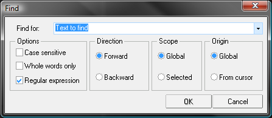
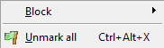
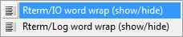

Overview
This section provides a brief overview of the Tinn-R project.
Quick start
Let's say you don't have time to read the full user guide just yet. That's OK, we know it is huge, and so let's just give you a few tips on how to get started:
- Read the basic instructions to install and configure R and Tinn-R;
it a small document and easy to follow - Choose either Rgui or Rterm;
it takes one mouse click - Open Help/English/Example of script.r;
another mouse click - Use the R toolbar to control R;
only takes one mouse click for each action - Have fun!
If you have any questions we suggest you consult this user guide.
What is Tinn-R?
Tinn is a small ASCII file editor primarily intended as a better replacement for the default Notepad running under the Windows OS. The name is the recursive acronym: Tinn is not Notepad.
Tinn-R is an extension of the original Tinn editor, providing additional functionality to control R running as Rgui (in SDI mode), Rterm and JGR and a whole lot of additional resources.
Tinn-R can also be thought of as feature-rich replacement of the basic script editor provided with Rgui. It provides syntax-highlighting, code submission as a whole or line-by-line, in addition to many other useful tools to ease the writing and debugging of R code.
Both Tinn and Tinn-R are distributed under the GPL 2 license or above.
Why Tinn-R?
Do you:
- like the open source initiative?
- need a simple but powerful GUI/Editor for the R environment?
- enjoy the ability to have syntax highlighting in your source code?
- need a tool that is simple to use but with the capabilities of a mighty editor?
- need a tool to work with plain text files?
- need a tool with simple commands for working with LaTeX, Sweave and Txt2tags?
- want to have access to the functionality of commercial and professional products but without having to pay for it?
If you answered YES to any of the questions above, then Tinn-R is a good option for you!
What do you get by using Tinn-R?
- The ability to communicate with the R environment by sending instructions, controling its processing, and receiving results:
- Rterm.exe
- Rgui.exe
- Projects:
- Create project files to organize your work including one level of sub-folders and automatic file name sorting
- Easy project management in graphical and text modes
- Work with files of unlimited length
- Work on multiple documents at the same time, choosing between multiple-document interface (MDI) and tabbed document interface (TDI)
- Single-document window splitting and window-splitting
- Support to macros (volatile):
- Record
- Playback commonly used sequences
- Search and replace not restricted to your active file, but also extendable to all open files, all project files, or any folder
- View file differences with color highlighting
- Syntax highlighting, which can be set by file type
- Spell checking
- Multiple undo/redo
- Highlighted color syntax with print preview
- Ability to select:
- Normal
- Column
- Lines
- Ability to bookmark:
- Line
- Block
- Line numbers
- Special characters
- Sort multiple variable types:
- String
- Data
- Number
- Count:
- Character
- Words
- Spaces
- ASCII chart
- Export with highlight to clipboard:
- RTF
- HTML
- TeX
- Matching bracket highlighting
- Conversion tools:
- Txt2tags
- Deplate
- LaTeX support:
- Edition
- Compilation
- Inverse DVI search.
We are constantly on the move!
Do I have to pay for Tinn-R?
Absolutely NOT! It's free as in beer and licensed under GPL.
What was the motivation to start and maintain the Tinn-R project?
- Motivation to start Tinn-R:
- We could not find a GUI/Editor for R running in the Windows OS that would give us all the ease of use and flexibility we wanted. So, we started this project using an open source editor called Tinn as our initial platform.
- Motivation to maintain Tinn-R:
- The most difficult stage of the project was getting started: Choosing the editor, all the preliminary performance and stability tests, understanding source structure, among many other struggles. Making it to run more and more smoothly and according to our daily needs was then a natural consequence. This is all to say that the open source movement has substantially changed our lives for better. We strongly believe in making software more widely available so that more people can benefit from it. We consider Tinn-R to be our small contribution to this fantastic open source initiative.
What is the sentence we from the development team most like to hear?
Tinn-R made my life easier ... thanks for creating it.
Which tools were used to create this user guide?
- Tinn-R was used to:
- Organize all source files under our project directory;
- Edit the Txt2tags source files;
- Manage the conversion and visualization of the final HTML code;
- To manage external resources available within Tinn-R we used the following:
- Txt2tags, a python script to make the conversion from Txt2tags to HTML;
- Python interpreter;
- CSS to create the layout of the HTML content;
- Pictures:
- IrfanView was used to select areas of the figures created using print screen function.
That was all!
This user guide can be easily converted to the following formats: HTML, XHTML, SGML, LaTeX, Lout, UNIX man page, Wikipedia, Google Code Wiki, DokuWiki, MoinMoin, MagicPoint (mgp), and PageMaker. Just use the Tinn-R GUI/Editor to do that.
Acknowledgment
We would like to thank those who have assisted us with the Tinn-R project, either by sending suggestions or by contributing to its development.
Feedback, suggestions and bug reports
Please submit feedback to José Cláudio Faria. If you submit a bug report, please provide as much detail as possible. This includes indicating the Tinn-R version, your operating system (Windows XP, Windows 7, etc) and language (English, French, Portuguese). If the bug is related to an interface with R, please also indicate which version of R you are using, as well as whether you are running Rterm or Rgui. Ideally, please also add the content of the Tools/Results/Ini log interface since this will help us address the issue more promptly.
Basics
This section provides the basics about the Tinn-R project.
Configuration
This section provides information on Tinn-R configuration and associated applications.
Uninstall Tinn-R
- ALWAYS UNISTALL ANY PRIOR VERSION OF Tinn-R BEFORE INSTALLING A NEW ONE! Tinn-R has its own unistall option.
- The folder where Tinn-R project stores the ini files will not be removed when unistalling it. Why? Because whenever you install a different version all of your preferences will be preserved.
- You can check where these files are located in by checking Help/Main/Ini files (path information). If you prefer to delete these settings by removing the entire folder manually. All your preferences will be lost forever if you don't have a backup file.
Install and configure Tinn-R and R
R: basic configuration
- Starting from version 1.18.X.X,
Tinn-R requires R to run in SDI mode. So, Tinn-R is not compatible neither with Rgui in MDI mode (only SDI) nor with S-PLUS. The latest compatible version was the historic 1.17.2.4. - Starting from version 2.0.0.0,
Tinn-R requires R to run either Rterm or Rgui in SDI mode. There are four alternatives you can choose from: Rterm, Rgui in SDI mode, SciViews GUI (which also requires R in SDI mode), or JGR. - You have three basic options in order to switch Rgui from MDI to SDI:
- In Rgui, select
Edit/GUI preferences..., set SDI and click onSave, thenOKwithout changing the name of the proposed file. Then, clickOKorCancelin theRgui Configuration Editor(ignore any eventual messages), and restart Rgui (changes will not be taken into account in the current session). - Manually edit the file
Rconsole:## Style # This can be `yes' (for MDI) or `no' (for SDI). MDI = no
- Create a shortcut to R on your desktop (or anywhere that is convenient), and type in the switch
--sdiafter the...\Rgui.exein theTargetbox. To do this, right click on your shortcut, selectPropertiesand navigate to theShortcuttab.
- In Rgui, select
If you have any version of Tinn-R (<= 2.2.0.2) installed:
- Uninstall previous versions of Tinn-R
- Edit the file Rprofile.site (folder etc where you R is installed) and comment (or remove) all prior configuration scripts RELATED TO TINN-R
- Start R
- install the following packages:
- TinnR (>= 1.0.3). TinnR package depends of Hmisc and R2HTML;
- install.packages("svSocket", repos="http://R-Forge.R-project.org").
- Close R
- Install the new version of Tinn-R
- Start Tinn-R
- From the Tinn-R main menu, choose the option
R/Configure/Permanent (Rprofile.site). It will write the following text to the file Rprofile.site:##=============================================================== ## Tinn-R: necessary packages and functions ## Tinn-R: >= 2.2.0.2 with TinnR package >= 1.0.3 ##=============================================================== ## Set the URL of the preferred repository, below some examples: options(repos='http://software.rc.fas.harvard.edu/mirrors/R/') # USA #options(repos='http://cran.ma.imperial.ac.uk/') # UK #options(repos='http://brieger.esalq.usp.br/CRAN/') # Brazil library(utils) ## Check necessary packages necessary <- c('TinnR', 'svSocket') installed <- necessary %in% installed.packages()[, 'Package'] if (length(necessary[!installed]) >=1) install.packages(necessary[!installed]) ## Load packages library(TinnR) library(svSocket) ## Uncoment the two lines below if you want Tinn-R to always start R at start-up ## (Observation: check the path of Tinn-R.exe) #options(IDE='C:/Tinn-R/bin/Tinn-R.exe') #trStartIDE() ## Set options options(use.DDE=T) ## Start DDE trDDEInstall() .trPaths <- paste(paste(Sys.getenv('APPDATA'), '\\Tinn-R\\tmp\\', sep=''), c('', 'search.txt', 'objects.txt', 'file.r', 'selection.r', 'block.r', 'lines.r'), sep='') - Start Rgui or Rterm from within Tinn-R,
- Read the content from the links below:
- Card: to know the shortcuts related with Rterm and all others
- What is new: to know the news.
A example of the Rprofile.site file can be obtained from SourceForge. Just download it and make changes to fit your needs.
If you have any version of Tinn-R (>= 2.2.0.2) installed and configured:
- Uninstall the prior version of Tinn-R 2.X.X.X
- Install the new version of Tinn-R
- Run it.
If you want to install any old version of Tinn-R (<= 2.0.0.0):
- Downgrading:
rename (or delete) the folder where Tinn-R stores the ini files. The unistall is necessary since Tinn-R does not downgrade automatically. If you encounter any problems while downgrading, check the ini folder and respective files. - Download and install Tinn-R
- Install the
SciViewsbundle, then typeguiDDEInstall()in R andthat's all!> install.packages('SciViews', dep=T) > guiDDEInstall() - Perhaps the best way to get R to communicate with Tinn-R from the time it is started is to add the following commands to
../etc/Rprofile.sitein the R install directory:#=============================================================== # Tinn-R: necessary packages and functions #=============================================================== library(utils) necessary = c('svIDE', 'svIO', 'svSocket', 'R2HTML') installed = necessary %in% installed.packages()[, 'Package'] if (length(necessary[!installed]) >=1) install.packages(necessary[!installed], dep = T) library(svIDE) library(svIO) library(svSocket) library(R2HTML) guiDDEInstall() - If you chose the latter option
.../etc/Rprofile.site, a nice additional functionality is provided by adding the two lines belowBEFOREthelibrary(svIDE)command:options(IDE = 'C:/Tinn-R/bin/Tinn-R.exe') options(use.DDE = T)
The first line tells R that you want to use Tinn-R as your IDE (Integrated Development Environment). To make this happen, you should change the path that leads to whereTinn-R.exeis installed if it happens to be different from the default configuration. The second line indicates that you want to start the DDE server automatically. By doing this, Tinn-R will start automatically once you invoke R.
Focus control
Working with Rgui
- Tinn-R has a icon within the Options toolbar containing the hint
Options: return focus to editor after send/control Rguiwhich enables the user to configure the focus control. Whenchecked:- If the editor has the focus: it will
go backto the editor after any send to or R control action; - Otherwise, the focus will be set to the Rgui interface.
- If the editor has the focus: it will
Working with Rterm
- The above-mentioned icon will be disabled with Rterm interface. The following will then happen:
- If the focus is placed on the editor it will
go backto the editor after any send to or R control action; - If the focus is placed on the Rterm (IO or Log), it will be
maintenedin this interface (IO); - Situations above are also the case when working with two monitors.
- If the focus is placed on the editor it will
Rterm interface and debug package
- Several changes were made to the debug package (1.0.2) regarding the messaging system (stdout and stderr). The default option is no longer compatible with Rterm interface implementation.
- The best way to make it compatible again is to add the option below to Rprofile.site file:
options(debug.catfile = 'stdout')
Speller installation
- To install this resource:
- Close Tinn-R (if it is running);
- Download the dictionaries you would like to add to Tinn-R;
- Install the file (for example ISpEnFrGe.exe);
- Upon start, Tinn-R will recognize all installed dictionaries. You should choose one as your default.
- Before installing new dictionaries, it is strongly recommended that you close Tinn-R.
- Another useful tool is the
UserDicEditorwhich enables the editing of dictionaries.
Inverse DVI search
- Tinn-R is able to perform
inverse DVI search. To get this function to work, include in your DVI previewer the path of the binary executable file for Tinn-R along with the parameters for file and line. For example, using YAP under Miktex, the configuration would be (assuming a default path for Tinn-R):C:\Tinn-R\bin\Tinn-R.exe "%f;%l"
- Please make sure that there is no space between the parameters %f(related to file) and %l(related to line);
- Within Tinn-R (Options/Application/Processing/Latex/DVI) it is necessary to add the parameter for Miktex compilation: latex -c-style-errors
--src-specials; - Tinn-R can do all of this automatically by setting the option Restore default:
latex -c-style-errors --src-specials and bibtex --src-specials
Python and Txt2tags
- Txt2tags (user guide here) converts a text file with
minimal and human readable markupto: HTML, XHTML, SGML, LaTeX, Lout, UNIX man page, Wikipedia, Google Code Wiki, DokuWiki, MoinMoin, MagicPoint (mgp), and PageMaker. It is simple and fast, featuring automatic TOC, macros, filters, include, tools, GUI, CLI, Web interfaces, translations, and extensive documentation. - Tinn-R works with the interpreter Phyton for Windows (python.exe), using Python scripts to make the conversion (txt2tags).
- To install and configure Python resources, just follow these steps:
- Download and install the interpreter Python anywhere in your computer;
- Download and unzip Txt2tags anywhere in your computer;
- Within Tinn-R, go to
Options/Application/Processing/Txt2tagsand add information on parameters (-tis the default), interpreter path (python.exe) and the conversor (txt2tags python script);
Ruby and Deplate
- Deplate (user guide here) is a remote ruby based tool for converting documents written in wiki-like markup to LaTeX, HTML, HTML slides, or DocBook format. Deplate supports page templates, embedded LaTeX code, footnotes, citations, bibliographies, automatic generation of indices, tables of contents, among others. Deplate can also be used to create Web pages and, via LaTeX or DocBook, high-quality printouts.
- Tinn-R works with the interpreter Ruby for Windows (ruby.exe) and Ruby scripts to generate file conversation within deplate.
- To install and configure these resources follow these steps:
- Download and unzip the interpreter Ruby anywhere in your computer;
- Download and unzip Deplate anywhere in your computer;
- Within Tinn-R, go to
Options/Application/Processing/Deplateand add information on parameters (-fis the default), the interpreter path (ruby.exe), and the conversor (deplate.rb ruby script);
We recently observed a problem when converting files with file names with an underscore. For example deplate_intro.dplt. In these cases the file conversion is completed, but Tinn-R won't open the file since it can't find it. This pattern is cause by Deplate (a ruby script) generating a file named deplate__intro.html. Observe that this file name contains a double underscore. In sum, for the time being avoid using underscores in file names when you intend to later converting through Deplate.
Keyboard shortcuts (default)
This section provides information about keyboard shortcuts.
The most commonly used shortcuts
R interface
ALT + DOWN : R history: down (IO) ALT + L : Clear (Log) ALT + UP : R history: up (IO) CTRL + ALT + DOWN : IO: set focus CTRL + ALT + RIGHT : Log: set focus CTRL + ALT + UP : Editor: set focus CTRL + ENTER : Send any prior line (IO) CTRL + L : Clear (IO) SHIFT + CTRL + B : Clear (IO and Log)
Visualization
ALT + LEFT : Tools: align left ALT + RIGHT : Tools: align right ALT + V : R resourses: visible (show/hide) CTRL + F8 : Tools: visible (show/hide) CTRL + F9 : R interface: visible (show/hide) CTRL + F10 : R interface: minimize CTRL + F11 : R interface: optimize CTRL + F12 : R interface: maximize CTRL + ALT + V : Tool bars: all (show/hide) CTRL + ALT + K : Special characters (show/hide) CTRL + ALT + L : Line number (show/hide) CTRL + TAB : Change sequentially the active page (requires more than one) SHIFT + CTRL + UP : Increase font size (text within the main interface) SHIFT + CTRL + DOWN : Decrease font size (text within the main interface)
Navigation
CTRL + END : End of a doc CTRL + HOME : Beginning of a doc END : End of a line HOME : Beginning of a line
Search/Replace and Go
CTRL + F : Find F3 : Find again SHIFT + CTRL + F : Search in files CTRL + R : Replace CTRL + G : Go to line
Function keys
F1 : Help on selected word (requires a running R session) F2 : List the structure of selected objetc (requires a running R session) F3 : Find again F7 : Macro record F8 : Macro play F9 : Clear the R console (requires a running R session) F10 : Close all graphic devices (requires a running R session) F11 : Remove all objects (requires a running R session) F12 : Clear all (requires a running R session)
Edition
ALT + C : Block comment ALT + N : Block uncomment (first ocurrence) ALT + Z : Block uncomment (all ocurrence) CTRL + ALT + C : Block comment (LaTeX) CTRL + ALT + N : Block uncomment (first ocurrence, LaTeX) CTRL + ALT + Z : Block uncomment (all ocurrence, LaTeX) CTRL + ( : Insert (or replace) (|) CTRL + ) : Insert (or replace) () CTRL + A : Select all CTRL + C : Copy CTRL + END : End doc CTRL + HOME : Beginning of a doc CTRL + I : Block ident CTRL + T : Delete word CTRL + U : Block unident CTRL + V : Paste CTRL + X : Cut CTRL + Y : Delete line CTRL + Z : Undo END : End of a line HOME : Beginning of a line SHIFT + CTRL + Z : Redo
Marks and go to marks
CTRL + NUMBER[0..9] : Go to mark (no numeric keypad) SHIFT + CTRL + NUMBER[0..9] : Mark (no numeric keypad)
Project
CTRL + INS : Add current file to selected group SHIFT + CTRL + INS : Add file(s) to selected group (with dialog) DEL : Delete selected group or file
R script edition
CTRL + + : Insert -> (numeric keypad) CTRL + - : Insert <- (numeric keypad) CTRL + * : Insert tip (numeric keypad) CTRL + ENTER : Send current line to R and insert a line break
Selection
CTRL + ALT + S : Mark block CTRL + ALT + Z : Unmark block CTRL + ALT + X : Unmark all SHIFT + CTRL + C : Selection: set to column mode SHIFT + CTRL + L : Selection: set to line mode SHIFT + CTRL + N : Selection: set to normal mode
Compilation
CTRL + ALT + D : Compilation: LaTeX to DVI (single) CTRL + ALT + P : Compilation: LaTeX to DVI (single) SHIFT + CTRL + ALT + D : Compilation: LaTeX to DVI (bibtex) SHIFT + CTRL + ALT + P : Compilation: LaTeX to PDF (bibtex)
Conversion and Visualization
SHIFT + CTRL + H : Conversion: txt2tags to HTML SHIFT + CTRL + S : Conversion: txt2tags to Sweave SHIFT + CTRL + T : Conversion: txt2tags to LaTeX SHIFT + CTRL + O : Open current HTML files with system setup browser SHIFT + CTRL + ALT + H : Conversion: deplate to HTML SHIFT + CTRL + ALT + S : Conversion: deplate to Sweave SHIFT + CTRL + ALT + T : Conversion: deplate to LaTeX
Main menu (systematically)
ALT + F : File ALT + P : Project ALT + E : Edit ALT + A : Format ALT + M : Marks ALT + I : Insert ALT + S : Search ALT + O : Options ALT + T : Tools ALT + R : R ALT + W : View ALT + D : Window ALT + B : Web ALT + H : Help
File
CTRL + N : New file CTRL + O : Open file CTRL + P : Print CTRL + S : Save file CTRL + W : Close file SHIFT + CTRL + R : Reload file SHIFT + CTRL + W : Close all files
Format
ALT + C : Block comment ALT + N : Block uncomment first ocurrence ALT + Z : Block uncomment all ocurrence CTRL + ALT + C : Block comment (LaTeX) CTRL + ALT + N : Block uncomment first ocurrence (LaTeX) CTRL + ALT + Z : Block uncomment all ocurrence (LaTeX) CTRL + ALT + H : Word invert case CTRL + ALT + J : Word upper case CTRL + ALT + K : Word lower case CTRL + B : Match bracket CTRL + I : Block ident CTRL + U : Block unident
Marks
CTRL + NUMBER[0..9] : Go to mark (no numeric keypad) SHIFT + CTRL + NUMBER[0..9] : Mark (no numeric keypad) CTRL + ALT + S : Mark block CTRL + ALT + Z : Unmark block CTRL + ALT + X : Unmark all
Insert
SHIFT + CTRL + I: Insert dimensional element (LaTeX)
Search
CTRL + F : Search text CTRL + G : Go to CTRL + R : Replace text F3 : Search again
Options
SHIFT + CTRL + C : Selection: set to column mode SHIFT + CTRL + L : Selection: set to line mode SHIFT + CTRL + N : Selection: set to normal mode
Tools
SHIFT + CTRL + H : Conversion: txt2tags to HTML SHIFT + CTRL + S : Conversion: txt2tags to Sweave SHIFT + CTRL + T : Conversion: txt2tags to LaTeX SHIFT + CTRL + O : Open current HTML files with system setup browser SHIFT + CTRL + ALT + H : Conversion: deplate to HTML SHIFT + CTRL + ALT + S : Conversion: deplate to Sweave SHIFT + CTRL + ALT + T : Conversion: deplate to LaTeX CTRL + ALT + D : Compilation: LaTeX to DVI (single) CTRL + ALT + P : Compilation: LaTeX to DVI (single) SHIFT + CTRL + ALT + D : Compilation: LaTeX to DVI (bibtex) SHIFT + CTRL + ALT + P : Compilation: LaTeX to PDF (bibtex) CTRL + B : Match bracket F7 : Macro/Record F8 : Macro/Play
R
ALT + L : Clear (Log) CTRL + ALT + DOWN : IO: set focus CTRL + ALT + RIGHT : Log: set focus CTRL + ALT + UP : Editor: set focus CTRL + F10 : R interface: minimize CTRL + F11 : R interface: optimize CTRL + F12 : R interface: maximize CTRL + F9 : R interface: visible (show/hide) CTRL + L : Clear (IO) SHIFT + CTRL + B : Clear (IO and Log)
View
ALT + V : R resourses: visible (show/hide) CTRL + F9 : R interface: visible (show/hide) CTRL + F10 : R interface: minimize CTRL + F11 : R interface: optimize CTRL + F12 : R interface: maximize CTRL + ALT + UP : Editor: set focus CTRL + ALT + DOWN : IO: set focus CTRL + ALT + RIGHT : Log: set focus CTRL + F8 : Tools: visible (show/hide) ALT + LEFT : Tools: align left ALT + RIGHT : Tools: align right CTRL + ALT + V : Tool bars: all (show/hide) CTRL + ALT + L : Line number (show/hide) CTRL + ALT + K : Special characters (show/hide)
Call tip
CTRL + D : Possible option CTRL + Q : Possible option
Code completion
SHIFT + CTRL + D : Possible option SHIFT + CTRL + Q : Possible option
R explorer
CTRL + E : Refresh R environment SHIFT + CTRL + E : Refresh R explorer or filter
Alphabetically
ALT + : A-Z
ALT + A : Format ALT + B : Web ALT + C : Block comment ALT + D : Window ALT + DOWN : R history: down (IO) ALT + E : Edit ALT + F : File ALT + H : Help ALT + I : Insert ALT + L : Clear (Log) ALT + LEFT : Tools: align left ALT + M : Marks ALT + N : Block uncomment (first ocurrence) ALT + O : Options ALT + P : Project ALT + R : R ALT + RIGHT : Tools: align right ALT + S : Search ALT + T : Tools ALT + UP : R history: up (IO) ALT + V : R resourses: visible (show/hide) ALT + W : View ALT + Z : Block uncomment (all ocurrence)
CTRL + : A-Z, 0-9, /, ( and )
CTRL + - : Insert <- (numeric keypad) CTRL + ( : Insert (or replace) (|) CTRL + ) : Insert (or replace) () CTRL + * : Insert tip (numeric keypad) CTRL + + : Insert -> (numeric keypad) CTRL + A : Select all CTRL + ALT + C : Block comment (LaTeX) CTRL + ALT + D : Compilation: LaTeX to DVI (single) CTRL + ALT + DOWN : IO: set focus CTRL + ALT + H : Word invert case CTRL + ALT + J : Word upper case CTRL + ALT + K : Special characters (show/hide) CTRL + ALT + K : Word lower case CTRL + ALT + L : Line number (show/hide) CTRL + ALT + N : Block uncomment first ocurrence (LaTeX) CTRL + ALT + P : Compilation: LaTeX to DVI (single) CTRL + ALT + RIGHT : Log: set focus CTRL + ALT + S : Mark block CTRL + ALT + UP : Editor: set focus CTRL + ALT + V : Tool bars: all (show/hide) CTRL + ALT + X : Unmark all CTRL + ALT + Z : Block uncomment all ocurrence (LaTeX) CTRL + ALT + Z : Unmark block CTRL + B : Match bracket CTRL + C : Copy CTRL + D : Possible option CTRL + E : Refresh R environment CTRL + END : End doc CTRL + ENTER : Send any prior line (IO) CTRL + ENTER : Send current line to R and insert a line break CTRL + F : Find CTRL + F10 : R interface: minimize CTRL + F11 : R interface: optimize CTRL + F12 : R interface: maximize CTRL + F8 : Tools: visible (show/hide) CTRL + F9 : R interface: visible (show/hide) CTRL + G : Go to line CTRL + HOME : Beginning doc CTRL + I : Block ident CTRL + INS : Add current file to selected group CTRL + L : Clear (IO) CTRL + N : New file CTRL + NUMBER[0..9] : Go to mark (no numeric keypad) CTRL + O : Open file CTRL + P : Print CTRL + Q : Possible option CTRL + R : Replace text CTRL + S : Save file CTRL + T : Delete word CTRL + TAB : Change sequentially the active page (require most of one) CTRL + U : Block unident CTRL + V : Paste CTRL + W : Close file CTRL + X : Cut CTRL + Y : Delete line CTRL + Z : Undo
DEL
DEL (Project) : Delete selected group or file
END
END : End line
Function + : 3-8
F1 : Help on selected word (requires a running R session) F2 : List the structure of selected objetc (requires a running R session) F3 : Find again F7 : Macro record F8 : Macro play F9 : Clear the R console (requires a running R session) F10 : Close all graphic devices (requires a running R session) F11 : Remove all objects (requires a running R session) F12 : Clear all (requires a running R session)
HOME
HOME : Beginning line
SHIFT + : A-Z, 0-9 and /
SHIFT + CTRL + ALT + D : Compilation: LaTeX to DVI (bibtex) SHIFT + CTRL + ALT + H : Conversion: deplate to HTML SHIFT + CTRL + ALT + P : Compilation: LaTeX to PDF (bibtex) SHIFT + CTRL + ALT + S : Conversion: deplate to Sweave SHIFT + CTRL + ALT + T : Conversion: deplate to LaTeX SHIFT + CTRL + B : Clear (IO and Log) SHIFT + CTRL + C : Selection: set to column mode SHIFT + CTRL + D : Possible option SHIFT + CTRL + DOWN : Decrease font size (extensive texts of the main interface) SHIFT + CTRL + E : Refresh R explorer or filter SHIFT + CTRL + F : Search in files SHIFT + CTRL + H : Conversion: txt2tags to HTML SHIFT + CTRL + I : Insert dimensional element (LaTeX) SHIFT + CTRL + INS : Add file(s) to selected group (with dialog) SHIFT + CTRL + L : Selection: set to line mode SHIFT + CTRL + N : Selection: set to normal mode SHIFT + CTRL + NUMBER[0..9] : Mark (no numeric keypad) SHIFT + CTRL + O : Open current HTML files with system setup browser SHIFT + CTRL + Q : Possible option SHIFT + CTRL + R : Reload file SHIFT + CTRL + S : Conversion: txt2tags to Sweave SHIFT + CTRL + T : Conversion: txt2tags to LaTeX SHIFT + CTRL + UP : Increase font size (extensive texts of the main interface) SHIFT + CTRL + W : Close all files SHIFT + CTRL + Z : Redo
FAQ
This section provides information on Frequently Asked Questions (FAQ).
What is Tinn-R?
- Tinn is a small ASCII file editor primarily intended as a better replacement for the default Notepad running under the Windows OS. The name is the recursive acronym: Tinn is not Notepad.
- Tinn-R is an extension of the original Tinn editor, providing additional functionality to control R running as Rgui (in SDI mode), Rterm, SciViews R console and JGR. And a whole lot of additional resources.
- Tinn-R can also be thought of as feature-rich replacement of the basic script editor provided with Rgui. It provides syntax-highlighting, code submission as a whole or line-by-line, in addition to many other useful tools to ease the writing and debugging of R code.
- Both Tinn and Tinn-R are distributed under the GPL 2 license or above.
Feedback, suggestions and bug report
Please send your feedback to José Cláudio Faria. If you submit a bug report, please provide as much detail as possible. This includes indicating the Tinn-R version, your operating system (Windows XP, Windows 7, etc) , and language (English, French, Portuguese). If the bug is related to an interface with R, please also indicate which version of R you are using, as well as whether you are running Rterm or Rgui. Ideally, please also add the content of the Tools/Results/Ini log interface since this will help us address the issue more promptly.
Tinn-R installation
Where can I get the latest version of Tinn-R?
- The latest version of Tinn-R can be downloaded from SourceForge.
How do I install Tinn-R?
- Tinn-R uses a classical method of installation and runs on all versions of the Windows OS. You need administrative rights to install, although but you can install it as a regular user provided you have write on the directory where you will perform the installation. If you have problems, please contact you computer or network administrator.
- Note that if you install Tinn-R, you will likely want to use it along with R, and so R must be installed separately. R can be obtained from here.
Can I get the source code?
- Yes. You can get and modify the source code of Tinn-R as well as redistribute your changes as long as you respect the terms of the GPL license. The source code is available from SourceForge.
How can I add a shortcut to Tinn-R in the start menu or in the desktop?
- This is automatically done by the installer. If you want to do it manually later on, here are the steps:
- Under object explorer, right-click the file
Tinn-R.exeand selectCreate shortcut; - Drag & drop this shortcut to the desktop or wherever you might want to place it.
- Under object explorer, right-click the file
Can I save or reuse my preferences on another computer?
- You have a save/restore configuration tool under
Tools/Backup or Restore system configurationorDatabase. Just backup your config file on one computer, copy it to the computer where you intend to use the same preference then it restore them there - The restore funciton assumes that you are using same OS and user name.
- Otherwise:
- Unzip the file Tinn-R_X.X.X.X_preferences_bkp in a place of your choice;
- Copy the folder Tinn-R;
- Paste it inside the directory with the Tinn-R folder;
- To find where that folder is located, from the main menu just select
Help/Main/Ini files (path information).
How can I open a file in Tinn-R by double-clicking it under Windows Explorer?
- You need to register Tinn-R as the default program to open files with a given extension. You can either check this option during installation or follow the steps below:
- In order to open *.R files (R scripts) with Tinn-R, locate one such file in your disk;
- Right-click this file and select
Open with/Choose program...in the context menu; - Click
Browsein theOpen withdialog box and then selectTinn-R.exe; - Make sure the option
Always use the selected program to open this kind of fileis selected; - Click
OK.
- Now, when you double-click on a *.R file in the Windows explorer, it will be opened in Tinn-R.
How to define the starting Rgui from within Tinn-R?
- You can start you preferred Rgui directly from Tinn-R. To do that, go to
Options/Application/R/Path. - At the bottom of the dialog box, you can determine the path of the Rgui executable to start from within Tinn-R. Select
Rgui.exefrom, for instance,C:\Program Files\R\R-X.X.X\bin\Rgui.exe).Note: to use R from within Tinn-R, you must first install it from http://cran.r-project.org
- With Rgui, you still have the choice between the MDI or SDI mode. To switch from one to the other, in Rgui select
Edit/GUI preferences, switch between (MDI/SDI), click onSave, andOKwithout changing the name of the file. Then clickOKorCancelin theRgui Configuration Editorignoring any possible messages, and restart Rgui. Notice that changes will not be taken into account in your current session and so you do have to restart. - Try to use Rgui in both MDI and SDI mode within Tinn-R before deciding which configuration you prefer.
Remember that starting from version 1.18.X.X, Tinn-R is no longer compatible with Rgui in MDI mode (only SDI), nor with S-PLUS. The latest compatible version is 1.17.2.4.
Can I define Tinn-R as the default editor for R objects?
- No, currently, it does not have that capability. In order to do that, just use the internal script editor of Rgui to edit() or fix() R objects.
Can I use Emacs or WinEdt style for syntax highlighting color?
- Just set your preferred color scheme in
Options/Colors (preference). To change color scheme on other computers, just use theOptions/Backup/Restore system optionsconfiguration functions (See details ...).
What does "Triggers" mean in Options/Application/R/General/Basic
- Tips are tooltips displaying the syntax of the currently used R function.
- By default, if you enter the name of a function followed by an open bracket such as
sd(in a R code document, then Tinn-R recognizes that you call thesdR function and reminds you of its syntax by showing the following tip:x, na.rm=FALSE, that is,sdaccepts two arguments:x, andna.rmwith the latter havingFALSEas the default value. - Tinn-R uses a database with the syntax of most common functions in R. However, neither functions in additional packages nor your custom functions are cached in this database. Adding them all manually is tedious.
- Tinn-R therefore offers a second mechanism: Direct requests to R. This is accomplished through DDE and/or TCP/IP protocols, using functions automatically loaded when you start the TinnR package you downloaded from CRAN. (See details ...).
- When a tip is showed (Editor, IO or Log interface) it is possible to add all arguments by typing the shortcut
CTRL + *.
On some computers, the delay for synchronization might need to be adjusted. If Tinn-R seems to freeze while querying R for tips and you get no results, increase the value a bit by setting Options/Application/R/Server/Computational synchronization (delay).
Can I start R and Tinn-R all at once?
- There are many ways to accomplish this, but here is one: First, configure R so that it undersands that you want to use Tinn-R as your IDE (Integrated Development Environment). In order to do that, start a new R session and add the following command:
> options(IDE = "C:/Tinn-R/bin/Tinn-R.exe")
Replace the path by the present location of Tinn-R.exe on your computer if different from the location above. Then you will indicate that you want to start the DDE server automatically by setting:> options(use.DDE = TRUE)
At this point, Tinn-R will be automatically started when you load svIDE, at the same time as the R call-tip server is installed (see FAQ 3.7):> library(TinnR)
If those steps work well in manual mode, but you now want them to run whenever you start R, edit theRprofile.sitefile (located in the \etc\ subdirectory of R. File location varies, but it should be under something like C:\Program Files\R\R-X.X.X\etc\Rprofile.site). Add the above-mentioned three lines of code at the end of the Rprofile file. From now on, Tinn-R will start every time you open a R session:options(IDE = "C:/Tinn-R/bin/Tinn-R.exe") options(use.DDE = TRUE) library(TinnR)
A copy ofRprofile.sitefile created by José Cláudio Faria can be obtained from SourceForge, which you adapt according to your needs. To make sure that everything works well and smoothly, close both R and Tinn-R and restart R. Tinn-R should start concomitantly. Now, create a very simple function in R such as:> cube <- function(x) x^3
Switch to Tinn-R and type:cube(. You should get a call-tip displayingxif the R call-tip server was correctly installed.
Hotkeys (operational system)
What is the difference between hotkeys (operational system) and shortcuts (Tinn-R)
- The hotkeys are related to the operational system. In other words, they work without the focus on Tinn-R, whereas the shortcuts will only work with the focus on the Tinn-R interface.
How do I define hotkeys for R tools in Tinn-R?
- Go to
R/Hotkeys of R. There, define your favorite hotkeys for the various R tools and make sure to activate them (Option -> Active).
Is there a shortcut for cycling through opened files?
- Yes, you can use
Ctrl+Tabto go to next file, andCtrl+Shift+Tabto go to previous ones when several files are loaded simultaneously in Tinn-R.
Is there a shortcut for '<-' and '->' for the S/R languages?
- The (non user configurable) shortcut for
->isCtrl+Addkey (numeric keypad). Similarly,Ctrl+Subtract(numeric keypad) is a shortcut for<-.->and<-, both being assignment symbols in the S/R languages.
Miscellaneous
I am editing a table. Can I select text in column mode?
- Yes you can, but you must first make sure that this option is selected. Go to
Options/Editor/Advanced optionstab and check (x)Alt sets column modes. Once this is done, by pressingAltkey while selecting your text with the mouse in Tinn-R, the selection will be done in column mode. - Another option is to change the selection mode to column in a permanent way. This is done through the menu
Options/Selection modeor by clicking on the selection mode place at the status bar. The available options are:smNormal,smLineandsmColumn.
Can I define bookmarks to facilitate the navigation through my documents?
- Yes, you can define up to 10 bookmarks in each of your opened documents. To define the bookmark, use
Ctrl+Shift+[0-9](a key from 0 to 9). Then, to go to the corresponding bookmark just useCtrl+[0-9]. A visual indicator appears in the right margin at the location of your bookmarks to remind you where they are.
What is the left gutter used for?
- In Tinn-R, bookmarks are visually displayed in the left gutter (use
Ctrl+Shift+[0-9]to set bookmarks and then useCtrl+[0-9]to navigate to them). It also displays the respective line numbers. You must set gutterVisibleinOptions/Main/Editor/Display tab(and alsoShow line numbers) to activate this feature.
Can I run my code step-by-step?
- Yes, but for more convenient use of this function, you must place Tinn-R and R side by side on your screen and click on the 'Send line' icon with the mouse (seventh button from the left on the R toolbar).
- If you use a shortcut, you can just submit one line since the R console gets the focus when code is sent to R. Alternatively, you can set Tinn-R as a
topmostwindow on top of R usingOptions/On top. The downside is that Tinn-R will permanently hides the R console and there is a chance that you won't see a part of the output generated in R during your step-by-step code execution.
Is there a graphical debugger for my R functions?
- Not yet, but you can download the excellent
debugpackage from CRAN and use themtracefunction available from there.
What is the Tools panel?
- It is a panel you can open at either the left or the right side of your text. It helps you manage large projects with multiple documents. The
Computertab allows you to explore your computer disks and open one or several files without usingFile/Open, or switching to the Windows file explorer. TheProjecttab is a convenient manager for all files collected in a given project.
Can I copy and paste syntax highlighted R code in Word/Web/LaTeX?
- Syntax highlighted code enhances visibility of code. It is convenient in the code editor, but could also be useful for pieces of code presented elsewhere such as in a report, a Web page, or a LaTeX document. Tinn-R allows you to copy code while keeping syntax highlighting color through
Edit/Copy formatted. Three options are available: RTF, HTML and TeX.
How can I fix incorrect icon displays on Windows after I have installed a new version of Tinn-R?
- If you get an incorrect icon displayed on Windows after installing a new version of Tinn-R, just proceed as follows:
- In order to accelerate the display of program or file icons, Windows stores images in the ICON CACHE (ShellIconCache), a hidden icon cache file in your Windows directory.
- Sometimes the icon of the object changes, but Windows still shows the old icon instead of the new one. To solve this problem, use the shareware program called IconChanger.
- If you have just installed Tinn-R with a new icon but Windows has not changed the image yet, use IconChanger and select REBUILD ICON CACHE. If that still doesn't work, then select REMOVE ICON CACHE.
- If you have selected REBUILD the icon cache will start rebuilding from scratch. If you have select REMOVE, you will see a warning message. Select YES and then restart your computer.
Basic instructions about focus control
- Tinn-R has a button within the Options toolbar with the hint (Options: return focus to editor after send/control Rgui) that enables the user to configure out the focus control. When this option is
checkedTinn-R will display the following behavior:- If the editor has the focus, it will
go backto the editor after any send to or R control action, otherwise it will remain on Rgui. This is also true when working with a dual-monitor display.
- If the editor has the focus, it will
- If the Rterm has the focus, it will be
maintenedin this interface (IO),disregardingthe Options: return focus to editor after send/control Rgui.
Why Tinn-R doesn't remember my syntax color preferences?
Tinn-R has four multi-highlighters: HTML complex, PHP complex, R complex and Sweave, with each one behaving as follows:
1. HTML complex = HTML & JavaScript
2. PHP complex = HTML & JavaScript & PHP
3. R complex = R & URI ('<<<' begin URI
'>>>' end URI)
4. Sweave = TeX & R ('>>=' begin R
'@' end R)
URI : Uniform Resource Identifiers.
R complex: The main syntax is R, '<<<' and '>>>' are the tags enabling the user to insert a block of URI syntax.
Sweave : The main syntax is TeX, '>>=' and '@' are the tags enabling the user to insert a block of R syntax.
These highlighters do not establish priorities when you set the syntax color preferences. Thus, if you change the color preferences for any of these multi-highlighters (HTML complex, PHP complex, R complex and Sweave) these settings will be valid only in the current Tinn-R session and will not be saved when Tinn-R is closed. If you would like to make these changes permanent, just set the preferences from all simple highlighters (R, TeX, HTML, JavaScript, PHP and URI).
How do I set a block as marked?
- If the file has no marks: the option will not be available (grayed out);
- If the file has one or more marks and the cursor is either above the first mark or below the last mark: all text (above or below this mark) will be submitted in relation to the cursor position (above or below) the mark;
- If the cursor is between any two adjacent marks: all text between those two marks will be submitted.
How do I can find errors in my script using Rterm interface?
- The
Application options/R/Rtermis split in two tabs:ErrorandOptions. The tab Error has a option:Trying to find code errors (at the editor)*. It enables the user to set Tinn-R in order to find code errors at the editor when sending instructions to Rterm. It may happen that the error will not be found at the right place, for example the error might be the same word appearing in a comment which comes before the actual along the code. In that case the user should use the shortcutF3 (Find again). The word will appear selected, than just press OK until finding the right error. The first search done internally by Tinn-R has Case sensitive and Whole word only as default, but, this is not passed to the search interface, therefore the user should just select them if convenient. If the error has number among letters Whole word only is not a good option.
Working with
This section provides information on how to work using Tinn-R.
Application options
Tinn-R interface is very flexible and user configurable. It is necessary time to know all available resources and to configure this out (according with your preferences) in a nice way. The default set of options might not be suitable for every user.
The window Application options allows the user to set the major piece of user preferences related to the application. It must be clear from now on that the Tinn-R project is the sum of three main resources: the application per si, the editor and an additional tools, the latest projected to allows the expansion of resources.
The options visible in all pictures reflect a set of the project coordinator preferences.
Main
Since the options are auto-explicative, the table below gives some details only about the most difficult options to understand:
| Option | Description |
|---|---|
| Remove extension for Save as | All file extensions will be removed in the Save as Windows interface |
| Application colors (extensive text only) | For people who work extensive periods of time with computer/monitor, it is recommended dark colors (low level of radiation) for background and pale light (high level of radiation) to characters. The pictures of this user guide is like this |
R
As you can see, these options allows a high level of customization with R environment.
Processing
There are resources related with conversion (Txt2tags and Deplate) and compilation (Miktex).
Conversion
Tinn-R project makes it easy to work with these nice conversion tools: Txt2tags and Deplate.
Latex
Tinn-R is not a specific editor to LaTeX, but has the basic resources allowing the user to use the main resources of this environment.
Editor options
The Editor options window was adapted from the sources of the SynEdit component, mainly related to the general appearance and standard options. The set of options available complement the Application options and allows high level of customization.
Display
General
| Option | Description |
|---|---|
| Edge column | Will be showed as a vertical line in the editor and the default is 80 characters. Set it to 0 or a negative value (-1) to make the edge column not visible |
| Edge color | Choice of the edge color |
| Tab width | Set the number of characters that will be inserted when typing the Tab key |
| Extra lines | Set the width which each single line will be displayed |
| Font | Will open the Windows interface for choosing installed fonts |
Gutter
| Option | Description |
|---|---|
| Gutter color | Will open the Windows interface to choice a color |
| Visible | Visibility option |
| Autosize | Autosize option |
| Show line number | Show line number option |
| Start at zero | Start at zero option |
| Show leading zeros | Show leading zeros option |
| Use gutter font | Use gutter font option |
Advanced options
Options
The description of the SynEdit editor options are:
| Option | Description |
|---|---|
| Auto indent | Will indent the caret on new lines with the same amount of leading white space as the preceding line |
| Auto size scroll width | Automatically resizes the MaxScrollWidth property when inserting text |
| Drag and drop editing | Allows you to select a block of text and drag it within the document to another location |
| Alt sets column mode | Holding down the <ALT> key will put the selection mode into columnar format |
| Maintain caret column | When moving through lines w/o cursor past EOL, keeps the X position of the cursor |
| Want tabs | When active <TAB> and <SHIFT><TAB> act as block indent, unindent when text is selected |
| Smart tabs | When tabbing, the cursor will go to the next non-white space character of the previous line |
| Smart tab delete | Similar to Smart Tabs, but when you delete characters |
| Enhance home key | Enhances HOME key positioning, similar to visual studio |
| Enhance end Key | Enhances END key positioning, similar to JDeveloper |
| Hide scrollbars as necessary | If enabled, then the scrollbars will only show when necessary. If you have ScrollPastEOL, then the horizontal bar will always be there (it uses MaxLength instead) |
| Disable scroll arrows | Disables the scroll bar arrow buttons when you can't scroll in that direction any more |
| Half page scroll | When scrolling with page-up and page-down commands, only scroll a half page at a time |
| Scroll by one less | Forces scrolling to be one less |
| Scroll past end of file | Allows the cursor to go past the end of file marker |
| Scroll past end of line | Allows the cursor to go past the last character into the white space at the end of a line |
| Show scroll hint | Shows a hint of the visible line numbers when scrolling vertically |
| Scroll hint follows mouse | The scroll hint follows the mouse when scrolling vertically |
| Tabs to spaces | Converts a tab character to a specified number of space characters |
| Trim trailing spaces | Spaces at the end of lines will be trimmed and not saved |
| Group undo | When undoing/redoing actions, handle all continuous changes of the same kind in one call instead undoing/redoing each command separately |
| Right mouse moves cursor | When clicking with the right mouse for a pop-up menu, move the cursor to that location |
| Show special chars | Shows the special characters |
Caret
The description of the SynEdit editor options are:
| Option | Description |
|---|---|
| Insert caret | A list with four options: Vertical line, Horizontal line, Half block and block |
| Overwrite caret | A list with options: Vertical line, Horizontal line, Half block and block |
Keystrokes
This interface allows to change the default SynEdit keystrokes. It is possible to make new, edit or remove any ecAction (execute command action). A set of user friendly keystrokes gives high productivity leading with all instances of the main class SynEdit: Editor, IO and Log.
Selection Mode
Allows the setting of the current selection mode.
Select text by clicking and dragging with the left mouse button held down or moving the cursor with the shift key held down. The status bar will display an icon indicating the current selection mode.
Normal
This is the standard mode of selection found in many Windows applications.
Line

This selection mode allows only for complete lines to be selected.
Column
This selection mode allows vertical blocks of text to be selected. The option ALT sets column mode allowing the selection mode to be switched to Column Mode when selecting with the mouse by simply holding down the ALT key. See editor/advanced options.
Colors preference
This interface allows you to customize the appearance and colors of the instances of the class SynEdit (Editor, IO and Log).
The interface is simple and auto-explicative.
Basically, make a choice between the set of highlighters available from the Highlighters list. The identifier of selected highlighter will be updated. It is possible to set only one foreground attribute each time. But, it is possible to set the background for all attributes of the selected highlighter and also the background of all attributes of all highlighters.
It is possible also to set the color brackets and the active line background.
Observation:
Tinn-R has four multi-highlighters: HTML complex, PHP complex, R complex and Sweave, described below:
1. HTML complex = HTML & JavaScript
2. PHP complex = HTML & JavaScript & PHP
3. R complex = R & URI ('<<<' begin URI
'>>>' end URI)
4. Sweave = TeX & R ('>>=' begin R
'@' end R)
URI : Uniform Resource Identifiers.
R complex: The main syntax is R, '<<<' and '>>>' are the tags which enable the user to insert a block of URI syntax.
Sweave : The main syntax is TeX, '>>=' and '@' are the tags which enable the user to insert a block of R syntax.
These highlighters haven't priorities when you set the syntax color preferences. Thus, if you change the colors' preferences of any of these multi-highlighters (HTML complex, PHP complex, R complex and Sweave) these settings will be valid only in the current Tinn-R session and will not be saved when Tinn-R is closed. So, if you want to make permanent changes, set the preferences from all simple highlighters (R, TeX, HTML, JavaScript, PHP and URI).
Shortcuts customization
The Shortcuts customization allows the user to set the shortcuts related to the application, it works together with the Editor keystrokes and allows high level of customization.
The difference between Shortcuts and Hotkeys (operational system) is that the former works only with the focus on Tinn-R, whereas the hotkeys works with the focus anywhere.
Read below a brief description of available buttons.
- Restore default:
-
It restores the file
Shortcuts.xmlfrom the origin (InstallPath/data/data.zip). Any prior changes in the the fileShortcuts.xmlin use will be lost. - Save as default:
- It opens the save dialog allowing to save the file. From this point, this file will be the new default shortcuts.
- Load:
- It opens the open dialog allowing to load a shortcut file. From this point, this file will be the new default shortcuts.
- Edit:
- It puts the table in edition mode.
- Cancel current:
- It cancels any changes made in the current edition.
- Cancel all:
- It cancels all changes made in the database prior to Save or Save as default.
- Save:
- It saves to text file (XML) all changes made in the current table.
- Close:
- It closes the dialog. All changes not saved will be lost.
Hotkeys (operational system)

The Hotkeys (operational system) allows the setting of the hotkeys related to the operational system. The difference between those hotkeys and Shortcuts customization is that the latter works only with the focus in Tinn-R, whereas the hotkeys works with the focus anywhere.
The interface is auto-explicative. Basically you first make a choice from the R/Hotkeys (operational system) and set the desired Hotkey.
The set of hotkeys will perform actions only if the option Active is checked. The objective of these options (Inactive and Active) is to avoid conflict with others applications allowing to enable/disable the set of hotkeys fast and easily.
Rterm interface
The implementation of a Rterm interface in Tinn-R has the following aims:
- To address some limitations (edition, navigation and control) imposed by the Rgui.exe interface;
- To add more flexibility and power to the GUI/Editor;
- To maintain the prior user knowledge associated with Tinn-R editor and the Rgui console;
- To maintain the structural simplicity of the application;
- To use a more efficient engine of Inter Process Communication (IPC) than the Windows clipboard used in previous versions.
The IO and Log interfaces are instances of the class SynEdit. In other words, all prior user knowledge of the resources associated with the editor were preserved:
- Free navigation with keyboard keys;
- Marks;
- Shortcuts;
- Syntax;
- Match brackets;
- Tips;
- Data completion;
- Edition: copy, paste, cut, etc;
- Selection/copy/paste in column mode:
ALT + drag the mouse, if this option is checked, see editor options), etc.
- IO: the aim was to add flexibility and power, i.e, joining the power of SynEdit (editor) and the functionality of a common console.
- Log: has three basic objectives:
- To receive and show warnings and error messages;
- To makes the IO interface cleaner;
- To avoid synchronization difficulties with the inter process communication (IPC) called pipe used.
When more than one recognized instance of R is running the priority order is:
- Rterm;
- Rgui;
- Rserver (remote);
IO
The IO interface is used to receive output (SDTOUT) from the R environment.
It is necessary to adjust some R options (for example: options(width=70) to obtain a suitable number of character in each single line, according to hardware and user preferences (side of IO, place of IO, length of IO, width of IO, type and size of font). Once you get a suitable result, it is a good practice to add this option to the Rprofile.site (located inside of the folder etc where the R was installed) file. In this way, your option will always be set when starting R.
The IO is an instance of SynEdit. Therefore, it can be edited and used like the editor, allowing:
| Resource | Description |
|---|---|
| Edition | All resources available to the editor (copy, paste, cut, etc) can be used |
| Free navigation | Using keyboard keys : Home, Page Up, Page Down, End, Left, Top, Right and Bottom |
| Marks | Can be used CTRL+[0..9] to mark and SHIFT+CTRL+[0..9] to go |
| Shortcuts | All shortcuts available to the editor are also to the IO |
| Syntax | Two options: Text and R |
| Match brackets | It make easy to build more complex instructions like plot(sqrt(rnorm(1e3)), pch='.', cex=3) |
| Tips | Are invoked using the same trigger as the editor |
| Data completion | Are invoked using the same trigger as the editor |
If the IO has the focus, all actions of the R toolbar and main menu associated with control R can be used in the IO interface.
The IO interface has a special pop-up menu allowing the most common tasks. It is auto-explicative. So, make a small tour (right mouse bottom inside of Rterm/IO) to find out about its options.
Some details:
- Shortcuts and pop-up menu make it easy to change among the interfaces: Editor, IO and Log:
- if IO and Log are in distinct tabs (views), the common Windows shortcut
CTRL+TABchanges the active page (IO-Log). - Any prior line can be sent another time by just putting the cursor in any place of it and typing:
CTRL+ENTER;
- if IO and Log are in distinct tabs (views), the common Windows shortcut
- The last line of the IO interface (the prompt) has special features:
- It has some restrictions for edition and navigation;
ALT+DOWandALT+UPare the shortcut (prior/later) for command history. The history is continuous, cyclic and have 100 lines of limit.
Log
The Log interface is used to receive warnings and error messages (SDTERR) from the R environment.
It has a special pop-up menu that allows the most common tasks. It is auto-explicative. So, make a small tour (right mouse bottom inside of Rterm/Log) to know all options.
The most resources available to the IO are also available to this interface.
Tools interface
This graphical interface was projected for allow access to Tinn-R resources and also to accommodate future growth of related news resources.
Position: starting from version 2.1.1.1 (Oct/15/2008) this interface is dockable. It can be float or docked on the left, top, right, or bottom sides of the main interface.
Misc
| Tool | Description |
|---|---|
| Windows expl. | See details ... |
| Work expl. | See details ... |
| Project | See details ... |
Windows expl.
- Allows manager favorites (add and remove);
- Allows filter by file extension;
- Has pop-up menus similar to Windows explorer;
- Support drag and drop actions (it is possible to drag any file and drop it on the editor interface to be opened).
Work expl.
- Always shows the folder related to the latest file opened;
- Does not have a pop-up menu;
- Supports drag and drop actions. It is possible to drag any file and drop it in the editor interface that will be opened.
Project
- Allows for project management using a graphical interface;
- Supports drag and drop actions, ie, it is possible to drag the entire project, groups, or any file and then drop them into the editor interface that will be opened:
- Project: will open all files related to the current project;
- Group: will open all files for the selected group;
- File: will open the selected file.
- It is possible through a pop-up menu to send an entire project, a selected group, or an individual file to the R environment.- Source file of project:
- It is possible to edit the project in text mode (with the button Project: edit (as text file) of the specific toolbar). After any change, save the text file (it contains the textual description of the project structure) and reload the file to the graphical interface (with the button Project: reload (from text file) of the specific toolbar).
- Any change in the graphical interface will be reflected in the text file for the project, after it is saved.
- The best way to work with project (graphical of textual mode) is dependent on the complexity of the actions and the user preference. For single actions, we suggest that you use the graphical mode. For complex actions, it is faster to use the textual mode with all editor resources.
Markup
| Tool | Description |
|---|---|
| Txt2tags | Sets marks, macros and settings of Txt2tags conversor |
| Latex | Sets LaTeX symbols settings in a customizable manner |
Txt2tags
Sets marks, macros, and settings for the Txt2tags conversor. A single click over any graphical will add it to the current editor.
LaTeX
Set of LaTeX symbols. A single click over any graphical object will add it to the current editor;
The symbols, place and order of all symbols are customizable. To customize them, open the folder latex and edit ini path. At the end of the edition, update the interface using the button //Latex: reload symbols (from ini). Be careful when editing the symbols to maintain the name structure. For example: Number_SymbolName.FileExtension, 001_alpha.gif, 002_beta.gif. The number will be used to order symbols in the graphical interface, while the name will be used (if recognized) as a LaTeX symbol.
Results
| Tool | Description |
|---|---|
| Ini log | Displays useful results when starting Tinn-R |
| Search | Interface for Search results associated with Search in files |
Ini log
Displays useful results when starting Tinn-R.
| Topic | Description |
|---|---|
| Path of executable and sources (origin) | Lists executable files and resources |
| Path of ini files | Lists the path of all folders of the ini |
| Verification of necessary folder and files | Lists the status of folders and files of ini |
| Tinn-R, bkp, colors, ini, syntax and syntax bkp | Lists the status of these folders |
| Custom (version) | Lists the status of this folder and files |
| Data (version) | Lists the status of this folder and files |
| Latex (version) | Lists the status of this folder and files |
| Shortcuts (version) | Lists the status of this folder and files |
| Unihighlighter (version) | Lists the status of this folder and files |
| Tmp | Lists the status of this folder |
If you submit a bug report, please also send the results for the respective page by copying & pasting.
Search
Interface for Search results associated with Search in files.
The results for Search in files action are displayed as a tree with all files. Double click the file to open it in the editor interface.
Spell
| Tool | Description |
|---|---|
| Spell | Interface to speller |
To enable spellchecking with Tinn-R it is necessary to install at least one dictionary of the list of available at. It is also a good idea to install the dictionary manager. See instructions ....
Database
| Tool | Description |
|---|---|
| Shortcuts | A digital shortcuts interface based in a XML database |
| R card | A digital and simple R card based in a XML database |
| R tip | A digital and simple R tip based in a XML database |
| Completion | A digital completion interface based in a XML database |
The database uses the native XML engine provided by Borland. Each tab (Shortcuts, R card, R tip and Completion) has its own pop-up menus and toolbars.
Shortcuts
The Shortcuts interface allows the user to find out about the internal organization of Tinn-R and also to customize all shortcuts related to the applicative. It is our intention, in the near future, to add aditional keystrokes related to the editor and to the R hotkeys.
R card
The R card was based on two R cards published already: R/Rpad Reference Card by Tom Short and R reference card by Jonathan Baron.
R tip
The R tip was generated using resources of the SciViews bundle by Philippe Grosjean.
Completion
The Completion resource is very simple and allows high level of user customization related to edition. The old implementation of completion resource showed instability and was replaced. We hope that the users will like this new one.
R
| Tool | Description |
|---|---|
| Explorer | Simple and functional graphical interface of objects of the R environment |
R explorer
A simple and functional graphical interface of objects of the R environment.
This interface has its own pop-up menu, toolbar and three combo box. The pop-up menu and toolbar contain the most common actions related to an object explorer.
The button R explorer: refresh environment send a instruction to R environment requesting the list of all loaded packages in the current session. The result is shown inside a graphical classified list. When one of these is selected, the graphical list (and structure) of the objects are shown.
There are two options of filter: type of objects and any sequence of characters associated with the names of the objects.
It is possible to remove visible objects of the user workspace (.GlobalEnv) using the key Delete. To do this, select a object and type Delete.
A double click in any selected object will add this name to the editor. If the object is dragged to the editor interface, the textual description of the object is shown always in a new file. It is useful to know the sources of functions and to see data objects (vectors, frames, list, etc).
File tabs
The position of the file tabs can be changed by drag and drop. It allows to put the file tab in a desirable order making it suitable for the user interface.
The file tabs has its own pop-up menu allowing fast control of the most common tasks.
Tools bar
Unlike most applications of this category, this interface was projected to be as small and simple as possible. In other words, the full access to all resources of Tinn-R are available at the main menu and associated shortcuts (it takes time to learn all and most are user configurable).
Two groups are available: main and R tool bar.
The main toolbar interface is categorized and contain the most common tasks:
| Category | Description |
|---|---|
| File | New, open, save, save all, reload and print |
| Edit | Undo and redo |
| Filter | Create a new file with all occurrences of typed sequence of characters |
| Macro | Record and play |
| Misc | On top, focus control and block marks |
| Processing | Conversion, compilation and viewer |
| R | Lots of options to send and control R |
| Search | Current file, in files, replace and go to line |
| Syntax | Drop down list of all syntaxes available |
| Spell | Drop down list of installed dictionaries and a bottom to start the speller |
| View | Organize screen, Tools (show/hide), Tools (size), Rterm (show/hide, Rterm (size), options to IO and Log and word wrap |
The R toolbar has two basic division: Send (left side, finishing in the Set work directory bottom) and Control (right side, starting in the List all objects bottom).
Show/Hide
The Tools bar has its own pop-up menu enabling the user to choose what resources will be visible (show/hide). To see the pop-up menu, press the right mouse bottom inside any place of the main tools bar.
Disposition
The interface allows also drag and drop. In other words, you can organize the order of the individual tool bar inside of the main container.
It is better to do that with the main interface not maximized to avoid screen flicker (a small nuance related to some version of the Windows and Borland engine).
Find and replace
The dialogs for Find:

and for Replace:
are very similar, so this session will just discuss the Replace dialog and will point out the changes when necessary.
Find
When you call up the Find dialog the Find for box will be prefilled with the word under the cursor. You can type over the entry if you are looking for another word. There is also a dropdown list of phrases previously searched.
Replace (Replace dialog only)
When you call up the Replace dialog, the Replace with box will be filled with the last string you entered in it. If this is the first time you have called the Replace dialog since starting Tinn-R then the Replace box will be empty. You can type over any text in box. There is also a dropdown list of strings previously used.
Options
- Case sensitive:
-
When this option is set the search is done case sensitively. For instance,
Ab,ABandabare all treated as different words whereas they are not if the option is not set. - Whole words only:
-
When this option is set the system will only find complete words matching the search criteria. So, for example, if
abis the search string the system will not match occurrences of words likeabcorcab. - Regular expressions:
- See regular expressions ...
Direction
The direction to search. This option is ignored if searching in selected text.
- Forward:
- Search from the cursor position to the end of the file.
- Backward:
- Search from the cursor position to the beginning of the file.
Scope
- Global:
- Search the entire file.
- Selected Text:
- Search just the selected text.
Origin
- Global:
- Search from the beginning of the file.
- From cursor:
- Search just from the position of the cursor.
Search in files
The Search in files dialog allows you to match a criteria in all opened files and/or in files on disk:
Options
- Case sensitive:
-
When this option is set the search is case sensitive. For example,
Ab,ABandabare all treated as different words. - Whole words only:
-
When this option is set the system will only find complete words matching the search criteria. For example, if
abis the search string the system will not match occurrences of words such asabcorcab. - Regular expressions:
- See regular expressions ...
Where
- Opened files:
- When this option is set the search is performed on all opened files.
- Directories:
- When this option is set the search is performed in disk files.
Directory options
- Directory:
- A dropdown list of previously searched directories.
- File mask:
- A dropdown list of the previously searched file mask.
- Search in sub directories:
- When this option is set the search is performed on all sub directories of the main directory.
Results interface
The associated results interface shows the following results:
A double click in a single occurrence (or dragging and dropping it into the editor interface) will open the file and results will be placed in the first line of the editor window.
Database
This interface contains resources related to the internal Tinn-R database.
Each tab (Shortcuts, R card, R tip and Completion) has its own tools bar and pop-up menu allowing for a fast control of the most common tasks.
Shortcuts
- Help:
- It opens the User Guide on the section about the selected topic.
- Edit:
- It opens the dialog R card database (xml based) below.
Read below for a brief description of available buttons.
- Restore default:
-
It restores the file
Shortcuts.xmlfrom the origin (InstallPath/data/data.zip). Any prior changes in the the fileShortcuts.xmlcurrently being used will be lost. - Save as default:
- It opens the save dialog allowing you to save the file. From this point on, this file will be the new default shortcut.
- Load:
- It opens the open dialog allowing you to load a shortcut file. From this point on, this file will be the new default shortcut.
- Edit:
- Places the table in edition mode.
- Cancel current:
- Cancels any change made in the current edition.
- Cancel all:
- Cancels all changes made in the database prior to Save or Save as default.
- Save:
- Overwrites the text file (XML) saving all changes made to the current table.
- Close:
- Closes the dialog. All non-saved changes will be lost.
R card
- Help:
-
Sends the following instruction to R:
help('selected function'). - Example:
-
Sends the following instruction to R:
example('selected function'). - Copy function:
- Places the selected function in the clipboard.
- Copy descrition:
- Places the descrition of the selected function on the clipboard.
- Edit:
- Opens the dialog R card database (xml based) below.
- Insert:
-
Inserts the selected function in the active editor. A
Double clickorEnterperforms the same function.
- Restore default:
-
Restores the file
Rcard.xmlfrom the origin at (InstallPath/data/data.zip). Any prior changes in the fileRcard.xmlcurrently being used will be lost. - New:
- Places the table in insertion mode.
- Delete:
- Delete the current registry from the table.
- Edit:
- Places the table in edition mode.
- Cancel current:
- Cancels any change made in the current edition.
- Cancel all:
- Cancels all changes made to the database prior to Save.
- Save:
- Overwrites the text file (XML) saving all changes made to the current table.
- Close:
- Closes the dialog. All non-saved changes will be lost.
R tip
- Help:
-
Sends the following instruction to R:
help('selected function'). - Example:
-
Sends the following instruction to R:
example('selected function'). - Copy function:
- Places the selected function in the clipboard.
- Copy descrition:
- Places the descrition of the selected function in the clipboard.
- Edit:
- Opens the dialog R tip database (xml based) below.
- Insert:
-
Inserts the selected funtion in the active editor. A
Double clickorEnterperforms the same function.
- Restore default:
-
Restores the file
Rtip.xmlfrom the origin at (InstallPath/data/data.zip). Any prior change in the fileRtip.xmlwhile being used will be lost. - New:
- Places the table in insertion mode.
- Delete:
- Deletes the current registry from the table.
- Edit:
- Places the table in edition mode.
- Cancel current:
- Cancels any change made during the current editing session.
- Cancel all:
- Cancels all changes made to the database prior to Save.
- Save:
- Overwrites the text file (XML) while saving all changes made in the current table.
- Close:
- Closes the dialog. All changes not previously saved will be lost.
Completion
This resource adds a granular level of user customization for editing functions within Tinn-R.
The completion (database based) allows the user to add functions based on several programming languages such as R, TeX, among others.
- Help:
-
It sends the following instruction to R:
help('selected function'). - Example:
-
Sends the following instruction to R:
example('selected function'). - Copy function:
- Places the selected function in the clipboard.
- Copy descrition:
- Places the descrition of the selected function in the clipboard.
- Edit:
- Opens the dialog Completion database (xml based) below.
- Insert:
-
Inserts the selected funtion in the active editor. A
Double clickorEnterperforms the same function. The default shortcut isCTRL+J, but this can be customized under Options/Shortcuts or Tools/Database/Shortcuts. To use it just push the keystrokes after any valid word:if<CTRL+J> to obtain: if (| < ) ifc<CTRL+J> to obtain: if (|< ) { } fo<CTRL+J> to obtain: for (i in 1:|) foc<CTRL+J> to obtain: for (i in 1:|) { } sw<CTRL+J> to obtain: switch(|, a = ' ', b = ' ', ) wh<CTRL+J> to obtain: i = 0 while (i < |) { i = i + 1 } eq<CTRL+J> to obtain: \begin{equation}\label{eq_01} | \end{equation}Observations:- Only two letters were used to define the functions (for example: fo = for, fu = function);
- Therefore, we added the letter
cfor more complex structures (for example: foc, fuc); - The
|symbol is used to define where the cursor will first stop after auto-completion. The|symbol will be selected and marks the point where the user can start typing.
- Restore default:
-
It restores the file
Completion.xmlfrom the origin at (InstallPath/data/data.zip). Any prior change in the fileCompletion.xmlbeing used will be lost. - New:
- Places the table in insertion mode.
- Delete:
- Deletes the current registry from the table.
- Edit:
- Places the table in edition mode.
- Cancel current:
- Cancels any change made to the current edition.
- Cancel all:
- Cancels all changes made to the database prior to Save.
- Save:
- Overwrites the text file (XML), saving all changes made to the current table.
- Close:
- Closes the dialog. All non-saved changes will be lost.
Regular expressions
This session is an adaptation. It is based on the help of the freewere PSPad editor.
What are regular expressions?
Regular expressions are a widely-used method of specifying patterns of text to search for. Special metacharacters allow you to specify, for instance, that a particular string you are looking for occurs at the beginning or end of a line, or contains n recurrences of a certain character.
Regular expressions may look ugly to novices, but are actually a very simple, handy and powerful tool.
Simple Matches
Any single character matches itself, unless it is a metacharacter with a special meaning described below.
A series of characters matches that series of characters in the target string, so the pattern bluh would match bluh in the target string.
You can cause characters that normally function as metacharacters or escape sequences to be interpreted literally by escaping them. Do this by preceding them with a backslash \. For instance: metacharacter ^ match beginning of string, but \^ match character ^, \\ match \ and so on.
- Examples:
| ER | Matches |
|---|---|
foobar |
foobar |
\^FooBarPtr |
^FooBarPtr |
Escape Sequences
Characters may be specified using a escape sequences syntax much like that used in C and Perl: \n matches a newline, \t a tab, etc. More generally, \xnn, where nn is a string of hexadecimal digits, matches the character whose ASCII value is nn. If You need wide (Unicode) character code, you can use \x{nnnn}, where nnnn is one or more hexadecimal (base 16) digits (1, 2, 3, 4, 5, 6, 7, 8, 9, A, B, C, D, E, F). Hex digit letters may be in upper or lower case.
| ER | Description |
|---|---|
\xnn |
Char with hex code nn |
\x{nnnn} |
Char with hex code nnnn (one byte for plain text and two bytes for Unicode) |
\t |
Tab (HT/TAB), same as \x09 |
\n |
Newline (NL), same as \x0a |
\r |
Carriage return (CR), same as \x0d |
\f |
Form feed (FF), same as \x0c |
\a |
Alarm (bell) (BEL), same as \x07 |
\e |
Escape (ESC), same as \x1b |
- Examples:
| ER | Matches |
|---|---|
foo\x20bar |
foo bar (note space in the middle) |
\tfoobar |
foobar predefined by tab |
Character Classes
You can specify a character class, by enclosing a list of characters in [], which will match any one character from the list. If the first character after the [ is ^, the class matches any character not in the list.
- Examples:
| ER | Matches |
|---|---|
foob[aeiou]r |
foobar, foober, etc. But not foobbr, foobcr, etc |
foob[^aeiou]r |
foobbr, foobcr, etc. But not foobar, foober, etc |
Within a list, the - character is used to specify a range, so that a-z represents all characters between a and z, inclusive.
If you want - itself to be a member of a class, put it at the start or end of the list, or escape it with a backslash. If You want ] you may place it at the start of list or escape it with a backslash.
- Examples:
| ER | Matches |
|---|---|
[-az] |
a, z and - |
[az-] |
a, z and - |
[a\-z] |
a, z and - |
[a-z] |
All twenty six small characters from a to z |
[\n-\x0D] |
Any of ASCII #10(Lf), #11, #12(Ff), #13(Cr) |
[\d-t] |
Any digit, - or t |
[]-a] |
Any char from ]..a |
Metacharacters
Metacharacters are special characters which are the essence of regular expressions. There are different types of metacharacters, described below.
Metacharacters - Line Separators
| ER | Description |
|---|---|
^ |
Start of line |
$ |
End of line |
\A |
Start of text |
\Z |
End of text |
. |
Any character in line |
- Examples:
| ER | Matches |
|---|---|
^foobar |
foobar only if it's at the beginning of line |
foobar$ |
foobar only if it's at the end of line |
^foobar$ |
foobar only if it's the only string in line |
foob.r |
foobar, foobbr, foob1r and so on |
The ^ metacharacter by default is only guaranteed to match at the beginning of the input string/text, the $ metacharacter only at the end. Embedded line separators will not be matched by ^ or $. You may, however, wish to treat a string as a multi-line buffer, such that the ^ will match after any line separator within the string, and $ will match before any line separator. You can do this by switching On the modifier /m.
The \A and \Z are just like ^ and $, except that they won't match multiple times when the modifier /m is used, while ^ and $ will match at every internal line separator.
Metacharacters - Predefined Classes
| ER | Description |
|---|---|
\w |
An alphanumeric character (including _) |
\W |
A non alphanumeric |
\d |
A numeric character |
\D |
A non-numeric |
\s |
Any space (same as [ \t\n\r\f]) |
\S |
A non space |
You may use \w, \d and \s within custom character classes.
- Examples:
| ER | Matches |
|---|---|
foob\dr |
foob1r, foob6r and so on but not foobar, foobbr and so on |
foob[\w\s]r |
foobar, foob r, foobbr and so on but not foob1r, foob=r and so on |
TRegExpr uses properties SpaceChars and WordChars to define character classes \w, \W, \s, \S, so You can easily redefine it.
Metacharacters - Word Boundaries
| ER | Matches |
|---|---|
\b |
A word boundary |
\B |
A non-(word boundary) |
A word boundary \b is a spot between two characters that has a \w on one side of it and a \W on the other side of it (in either order), counting the imaginary characters off the beginning and end of the string as matching a \W.
Metacharacters - Iterators
Any item of a regular expression may be followed by another type of metacharacters - iterators. Using this metacharacters You can specify number of occurrences of previous character, metacharacter or subexpression.
| ER | Matches |
|---|---|
* |
Zero or more ("greedy"), similar to {0,} |
+ |
One or more ("greedy"), similar to {1,} |
? |
Zero or one ("greedy"), similar to {0,1} |
{n} |
Exactly n times ("greedy") |
{n,} |
At least n times ("greedy") |
{n,m} |
At least n but not more than m times ("greedy") |
*? |
At least n but not more than m times ("greedy") |
+? |
At least n but not more than m times ("greedy") |
?? |
Zero or one ("non-greedy"), similar to {0,1}? |
{n}? |
Exactly n times ("non-greedy") |
{n,}? |
At least n times ("non-greedy") |
{n,m}? |
At least n but not more than m times ("non-greedy") |
So, digits in curly brackets of the form {n,m}, specify the minimum number of times to match the item n and the maximum m. The form {n} is equivalent to {n,n} and matches exactly n times. The form {n,} matches n or more times. There is no limit to the size of n or m, but large numbers will chew up more memory and slow down r.e. execution.
If a curly bracket occurs in any other context, it is treated as a regular character.
- Examples:
| ER | Matches |
|---|---|
foob.*r |
foobar, foobalkjdflkj9r and foobr |
foob.+r |
foobar, foobalkjdflkj9r but not foobr |
foob.?r |
foobar, foobbr and foobr but not foobalkj9r |
fooba{2}r |
foobaar |
fooba{2,}r |
foobaar, foobaaar, foobaaaar, ... |
fooba{2,3}r |
foobaar, or foobaaar but not foobaaaar |
A little explanation about greediness. Greedy takes as many as possible, non-greedy takes as few as possible. For example, b+ and b* applied to string abbbbc return bbbb, b+? returns b, b*? returns empty string, b{2,3}? returns bb, b{2,3} returns bbb.
Metacharacters - Alternatives
You can specify a series of alternatives for a pattern using | to separate them, so that fee|fie|foe will match any of fee, fie, or foe in the target string (as would f(e|i|o)e). The first alternative includes everything from the last pattern delimiter ((, [, or the beginning of the pattern) up to the first |, and the last alternative contains everything from the last | to the next pattern delimiter. For this reason, it's common practice to include alternatives in parentheses, to minimize confusion about where they start and end.
Alternatives are tried from left to right, so the first alternative found for which the entire expression matches, is the one that is chosen. This means that alternatives are not necessarily greedy. For example: when matching foo|foot against barefoot, only the foo part will match, as that is the first alternative tried, and it successfully matches the target string. (This might not seem important, but it is important when you are capturing matched text using parentheses).
Also remember that | is interpreted as a literal within square brackets, so if You write [fee|fie|foe]. You're really only matching [feio|].
- Examples:
| ER | Matches |
|---|---|
foo(bar|foo) |
foobar or foofoo |
Metacharacters - Subexpressions
The bracketing construct ( ... ) may also be used to define r.e. subexpressions (after parsing, you can find subexpression positions, lengths and actual values in MatchPos, MatchLen and Match properties of TRegExpr, and substitute it in clip strings by TRegExpr.Substitute).
Subexpressions are numbered based on the left to right order of their opening parenthesis. First subexpression has number 1 (whole r.e. match has number 0 - You can substitute it in TRegExpr.Substitute as $0 or $&).
- Examples:
| ER | Matches |
|---|---|
(foobar){8,10} |
Strings which contain 8, 9 or 10 instances of the foobar |
foob([0-9]|a+)r |
foob0r, foob1r , foobar, foobaar, foobaar, ... |
(abc(def)ghi(123))xzy |
abcdefghi123xyz (the only match) |
- Then backreferences:
| ER | Description |
|---|---|
\1 |
= abcdefghi123 |
\2 |
=def |
\3 |
=123 |
\0 |
=abcdefghi123xyz (the whole match) |
We could find the same string using metacharacter Iterators with: (\w{3}([d-f]{3})...(\d*))xyz and the backreferences would have the same values. And yet the pattern would also match: 123fdd@#$4444xyz, bbbeeeabc1234567xyz, ddddddaaaxyz.
Metacharacters - Backreferences
Metacharacters \1 through \9 are interpreted as backreferences in the Search text box. When used outside of the regular expression, such as in the Replace text field, metacharacters $1 through $9 are interpreted as backreferences to the last find.
\<n> matches previously matched subexpression #<n>.
- Find Examples:
| ER | Matches |
|---|---|
(.)\1+ |
aaaa and cc |
(.+)\1+ |
abab and 123123 |
(['"]?)(\d+)\1 |
"13"(in double quotes), or '4' (in single quotes) or 77 (without quotes), ... |
- Replace Examples:
-
Date format change from
dd.mm.yyyytoyyyy-mm-dd. This will turn the European date style26.8.1994or26/8/1994into1994-8-26. Search:([0-9]{1,2}).([0-9]{1,2}).([0-9]{4})Replace:$3-$2-$1Make sure you check the box for Regular Expression.
Regular Expression Tutorials
The following is a list of a few sites that contain tutorials on both regular expressions in general and their use in specific languages:
- General Tutorial
- Regular Expressions - User guide
- Regular Expression HOWTO
- Perl Regular Expressions
- Regular Expression Basic Syntax Reference
Menu description
This section provides information about the main menu for Tinn-R.
File
| Option | Description |
|---|---|
| New | Creates a new file |
| Open all recent files | Opens all files from the Most Recently Used (MRU) file list |
| Open | Opens selected file as text |
| Recent files | Displays a Most Recently Used (MRU) file list. Selecting one of the displayed files will open that file |
| Reload | Reloads the current files to the last saved status |
| Save | Saves the current file. If the file has not been previously saved then the 'File Save As' dialog will open first |
| Save as | Saves the current file with a new name |
| Save all | Saves all changed files. If a file has not been previously saved the 'File Save As' dialog will open first |
| Close | Closes the current file. If the file has not been saved you will be prompted to save it |
| Close all | Closes all files including projects |
| Will open a Tinn-R dialog allowing settings and actions associated with the current file | |
| Copy full path to clipboard | See options ... |
| Exit | Exits the application |
Copy full path to clipboard

| Option | Description |
|---|---|
| Unix mode ../.. | Copy full path of current file to clipboard in Unix mode ../.. |
| Windows mode ..\.. | Copy full path of current file to clipboard Windows mode ..\.. |
Project
| Option | Description |
|---|---|
| Project | See options ... |
| Group(s) | See options ... |
| File(s) | See options ... |
| Recent | The option will display a Most Recently Used (MRU) project file list. Selecting one of the displayed files will open that file |
| Edit (as text file) | Opens the textual description of the project for editing |
| Reload (from text file) | Reloads the graphical project interface from the textual description of the project |
Project
| Option | Description |
|---|---|
| New | Creates new project. If you have an open unsaved project you will be prompted to save the project file |
| Open | Opens existing project and restores the project's state |
| Save | Saves the project file |
| Save as | Saves the current file with a new name |
| Close project | This option will close any files that are in a virtual folder |
| Delete current | This option will delete the virtual folder of the current project |
Group(s)
| Option | Description |
|---|---|
| New | Creates a new group of current project |
| Rename | Renames a selected group of current project |
| Delete current | Removes the selected group of the current project |
| Delete all | Removes all groups of the current project |
| Expand all | Expands all groups of the current project in the graphical interface |
| Collapse all | Collapses all groups of the current project in the graphical interface |
File(s)
| Option | Description |
|---|---|
| Open all (project) | Opens all files from a project |
| Close all (project) | Closes all files from a project |
| Open all (selected group) | Opens all files from selected group |
| Close all (selected group) | Closes all files from selected group |
| Add | Opens the windows interface to select file(s) and add the selected(s) files to a selected group |
| Add current | Add the current file to the selected group |
| Remove all (project) | Removes all files of the project |
| Remove all (selected group) | Removes all files of the selected group |
| Remove | Removes selected file |
| Copy full path to clipboard | Copies the full path of selected files to the clipboard |
Edit
| Option | Description |
|---|---|
| Undo | Undoes the last action |
| Redo | Re-applies any actions undone using the Undo option |
| Copy | Copies the selected text and places it in the Windows clipboard |
| Cut | Cuts the selected text and places it in the Windows clipboard |
| Paste | Places any text in the Windows clipboard at position indicated by the cursor within the file |
| Copy formatted (to export) | See options ... |
| Select all | Selects all text contained within the file |
Copy formatted (to export)
| Option | Description |
|---|---|
| Rtf | Copies the selected text and places it in the Windows clipboard in Rtf format |
| Html | Copies the selected text and places it in the Windows clipboard in Html format| |
| TeX | Copies the selected text and places it in the Windows clipboard in TeX format| |
Format
| Option | Description |
|---|---|
| Selection | See options ... |
| Word | See options ... |
Selection
| Option | Description |
|---|---|
| Indent | Indents selected line(s) |
| Unindent | Unindents selected line(s) |
| Comment | Adds comments to selected line(s) |
| Uncomment firsts occurrence | Removes the first occurrence of a comment in the selected line(s) |
| Uncomment all occurrence | Removes all occurrences of a comment in the selected line(s) |
| Comment (LaTeX) | Adds a comment (LaTeX) to the selected line(s) |
| Uncomment firsts occurrence (LaTeX) | Removes a comment (LaTeX) from the selected line(s) |
| Uncomment all occurrence (LaTeX) | Removes all occurrences of a comment (LaTeX) from the selected line(s) |
| Uppercase selection | Converts selected text to upper case |
| Lowercase selection | Converts selected text to lower case |
| Invert selection | Inverts the case of all selected text |
Word

| Option | Description |
|---|---|
| Uppercase word | Converts the word under the cursor to upper case |
| Lowercase word | Converts the word under the cursor to lower case |
| Invert case | Inverts the case of the word under the cursor |
Marks

| Option | Description |
|---|---|
| Block | See options ... |
| Unmark all | Unmarks all marks of the current file |
Block
| Option | Description |
|---|---|
| Mark | Marks selected block: 0 to begin and 1 to end |
| Unmark | Unmarks any previous marked block. It is not necessary to select the marked block |
Insert
| Option | Description |
|---|---|
| LaTeX | See options ... |
| Completion | Insert the completion |
| Date / Time stamp | Inserts the current system time and date |
Latex
| Option | Description |
|---|---|
| Math | See options ... |
| Header | See options ... |
| Format | See options ... |
| Font | See options ... |
Math

| Option | Description |
|---|---|
| Dimensional | Opens a dialog to insert a dimensional element: Array, Matrix, Tabular or Tabbing |
| frac{}{} | Inserts frac{}{}. If there are two selected elements , for example 1 2, it will place both elements in the correct position, i.e, frac{1}{2} |
| sqrt{} | Inserts sqrt{}. If an element is selected, say 9, it will place this element in the correct position, i.e, sqrt{9} |
| sqrt[]{} | Inserts sqrt[]{}. If there are two selected elements, for example 3 27, it will place both in the correct position, i.e, sqrt[3]{27} |
Header
| Option | Description |
|---|---|
| Part | Inserts \part{} if no selection or \part{selected} |
| Chapter | Inserts \chapter{} if no selection or \chapter{selected} |
| Section | Inserts \section{} if no selection or \section{selected} |
| Sub-section | Inserts \subsection{} if no selection or \subsection{selected} |
| Sub-sub-section | Inserts \subsubsection{} if no selection or \subsubsection{selected} |
| Paragraph | Inserts \paragraph{} if no selection or \paragraph{selected} |
| Sub-paragraph | Inserts \subparagraph{} if no selection or \subparagraph{selected} |
Format
| Option | Description |
|---|---|
| Itemization | Inserts itemization or itemizes a selection |
| Enumeration | Inserts enumeration or enumerates a selection |
| Left | Inserts tag to align text left or make left the selection |
| Center | Inserts tag to align text center or make center the selection |
| Right | Inserts tag to align text right or make right the selection |
Font
| Option | Description |
|---|---|
| Enphase | Inserts \emph{} if no selection or \emph{selected} |
| Bold | Inserts \textbf{} if no selection or \textbf{selected} |
| Italic | Inserts \textit{} if no selection or \textit{selected} |
| Slatend | Inserts \textsl{} if no selection or \textsl{selected} |
| Typewriter | Inserts \texttt{} if no selection or \texttt{selected} |
| Small caps | Inserts \textsc{} if no selection or \textsc{selected} |
| Tiny | Inserts {\tiny {}} if no selection or {\tiny {selected}} |
| Script size | Inserts {\scriptsize {}} if no selection or {\scriptsize {selected}} |
| Footnote size | Inserts {\footnotesize {}} if no selection or {\footnotesize {selected}} |
| Small | Inserts {\small {}} if no selection or {\small {selected}} |
| Normal | Inserts {\normalsize {}} if no selection or {\normalsize {selected}} |
| Large | Inserts {\large {}} if no selection or {\large {selected}} |
| Larger | Inserts {\Large {}} if no selection or {\Large {selected}} |
| Largest | Inserts {\LARGE {}} if no selection or {\LARGE {selected}} |
| Huge | Inserts {\huge {}} if no selection or {\huge {selected}} |
| Huger | Inserts {\Huge {}} if no selection or {\Huge {selected}} |
Search
| Option | Description |
|---|---|
| Find | Opens the Find dialog |
| Find again | Uses the previously entered search criteria to find the next occurrence, ie. one closer to the end of the file. This option is not available if a search has not been carried out. |
| Search in files | Opens the Search in files dialog |
| Replace | Opens the Replace dialog |
| Go to | This option produces the dialog below and allows you to move the cursor to the specified position |

Options
| Option | Description |
|---|---|
| Application | Opens the Application options dialog |
| Editor | Opens the Editor options dialog |
| Shortcuts | Opens the Shortcuts customization dialog |
| Colors (preference) | Opens the Colors (preference) dialog |
| Syntax (highlighters) | See options ... |
| File (open maximized) | When this option is set all files will be opened maximized |
| Return focus to editor (after send/control Rgui) | When this option is set the focus will go back to the active editor after any Send or Control action |
| On top | Toggles Tinn-R's ability to be the topmost window on the desktop |
| Read only | Toggles file read-only status. When set as read-only the file name on the file tab is among <...> |
| Selection mode | See options ... |
Syntax (highlighter)
| Option | Description |
|---|---|
| Set | See options ... |
| Default (to new files) | See options ... |
Set
| Option | Description |
|---|---|
| All | File without extension or not recognized extension |
| C# | C# files |
| C/C++ | C/C++ files |
| Cascading SS | Cascading SS files |
| Deplate | Deplate files |
| Fortran | Fortran files |
| HTML | Hypertext Markup Language (HTML) files |
| HTML complex | Hypertext Markup Language (HTML) complex (HTML & JavaScript) files |
| INI | INI files |
| Java | Java files |
| JScript | JScript files |
| MS VBScript | MS VBScript files |
| MS_DOS Bath | MS_DOS Bath files |
| Pascal | Pascal files |
| Perl | Perl files |
| PHP | PHP files |
| PHP complex | PHP (HTML & JavaScript & PHP) complex files |
| Python | Python files |
| R | R files |
| R complex | R complex (R & URI) files |
| Rd | Rd files |
| Ruby | Ruby files |
| SQL | SQL files |
| Sweave | Sweave (TeX & R) files |
| TclTk | TclTk files |
| TeX | TeX files |
| Text | Text files |
| Txt2tags | Txt2tags files |
| URI | Uniform Resource Identifiers (URI) files |
| Visual Basic | Visual Basic files |
| x86 Assembly | x86 Assembly files |
| XML | XML files |
If necessary Select manually one of the list. Tinn-R recognizes automatically the syntax based on the file extensions.
Default (to new files)
| Option | Description |
|---|---|
| R | When this option is set the highlighter of all new files will be set as R |
| R complex | When this option is set the highlighter of all new files will be set as R complex |
| Text | When this option is set the highlighter of all new files will be set as Text |
Selection mode
| Option | Description |
|---|---|
| Normal | See selection type normal ... |
| Line | See selection type line ... |
| Column | See selection type column ... |
Tools
| Option | Description |
|---|---|
| Processing | See options ... |
| Database | See options ... |
| Backup | See options ... |
| Restore | See options ... |
| Macro | See options ... |
| ASCII chart | Allows you insert an active char to the active document |
| Differences | Opens the nice TextDiff command by Angus Johnson integrated within Tinn-R |
| Spell | Starts the speller (see instructions ...) |
| Sort | See options ... |
| Count | Shows the result of the count action (words, characters + spaces, character - spaces and spaces) for files or a text selection |
| Match bracket | Search for matching bracket. See details below |
- How to match:
- The cursor must be placed immediately before any of the bracket characters. When this option is called the cursor will move to the point immediately before the matching bracket.
- Recognized brackets:
- The bracket characters are (), [] and {}.
Processing
| Option | Description |
|---|---|
| Conversion | See options ... |
| Compilation (LaTeX to) | See options ... |
| Viewer | See options ... |
Conversion
| Option | Description |
|---|---|
| Txt2tags to | See options ... |
| Deplate to | See options ... |
Txt2tags to
| Option | Description |
|---|---|
| LaTeX | Converts a Txt2tags file to LaTeX |
| Sweave | Converts a Txt2tags file to Sweave |
| Txt | Converts a Txt2tags file to txt |
| HTML | Converts a Txt2tags file to HTML |
| XHTML | Converts a Txt2tags file to XHTML |
| SGML | Converts a Txt2tags file to SGML |
| Lout | Converts a Txt2tags file to Lout |
| Man page | Converts a Txt2tags file to Man page |
| Wikipedia | Converts a Txt2tags file to Wikipedia |
| Google code wiki | Converts a Txt2tags file to Google code wiki |
| Doku wiki | Converts a Txt2tags file to Doku wiki |
| Moinmoin | Converts a Txt2tags file to Moinmoin |
| Magic point | Converts a Txt2tags file to Magic point |
| Page maker | Converts a Txt2tags file to Page maker |
Tip: See details ...
Deplate to
| Option | Description |
|---|---|
| LaTeX | Converts a Deplate file to LaTeX |
| LaYeX-dramatist | Converts a Deplate file to LaTeX-dramatist |
| Sweave | Converts a Deplate file to Sweave |
| Plain | Converts a Deplate file to Plain |
| HTML | Converts a Deplate file to HTML |
| HTML site | Converts a Deplate file to HTML site |
| HTML slides | Converts a Deplate file to HTML slides |
| XHTML 1.0 transitional (xhtml10t) | Converts a Deplate file to XHTML 1.0 transitional |
| XHTML 1.1 with MathML (xhtml11m) | Converts a Deplate file to XHTML 1.1 with MathML |
| PHP | Converts a Deplate file to PHP |
| Dbk-article | Converts a Deplate file to Dbk-article |
| Dbk-book | Converts a Deplate file to Dbk-book |
| Dbk-ref | Converts a Deplate file to Dbk-ref |
Tip: See details ...
Compilation (latex to)

| Option | Description |
|---|---|
| Always shows console minimized when compiling | When this option is set the DOS console will be minimized when compiling |
| DVI (single) | Compiles a LaTeX file to DVI in single way |
| DVI (bibtex) | Compiles a LaTeX file to DVI in bibtex way (three compilation) |
| Pdf (single) | Compiles a LaTeX file to PDF in single way |
| Pdf (bibtex) | Compiles a LaTeX file to PDF in bibtex way (three compilation) |
Viewer
| Option | Description |
|---|---|
| DVI | See options ... |
| See options ... | |
| HTML | See options ... |
DVI

| Option | Description |
|---|---|
| Open always after compilation (option) | When this option is set the DVI file will be opened by the viewer after the compilation |
| Open file | Shows the Windows Open dialog to select a DVI file to be opened by the viewer |
| Option | Description |
|---|---|
| Open always after compilation (option) | When this option is set the Pdf file will be opened by the viewer after the compilation |
| Open file | Shows the Windows Open dialog to select a DVI file to be opened by the viewer |
Html

| Option | Description |
|---|---|
| Open always after conversion (option) | When this option is set the Html file will be opened by the viewer after the compilation |
| Open current file | Opens the current DVI file with the viewer |
| Open file | Shows the Windows Open dialog to select a DVI file to be opened by the viewer |
Database
| Option | Description |
|---|---|
| R card | Shows Rcard database (XML based) dialog |
| R tip | Shows Rtip database (SML based) dialog |
| Completion | Shows Completion database (XML based) dialog |
Backup
| Option | Description |
|---|---|
| System configuration | Backups Tinn-R configuration (ini files) |
| Database | Backups database (card.xml and tips.xml) |
Restore
| Option | Description |
|---|---|
| System configuration | Restores a prior Tinn-R backup (ini files) |
| Database | Restores a prior database backup (card.xml and tips.xml) |
Macro
| Option | Description |
|---|---|
| Record | Toggles macro recording on and off. Note that when recording a macro the button changes |
| Play | Plays a previous recorded macro |
It is not possible to save/edit macros, they are temporary
Sort
| Option | Description |
|---|---|
| Strings | Sorts strings |
| Numbers | Sorts numbers |
| Dates | Sorts dates |
Sort works on the entire document unless some text is selected
R
| Option | Description |
|---|---|
| Start/close and connections | See options ... |
| Rterm | See options ... |
| Customize | See options ... |
| Configure | See options ... |
| Send | See options ... |
| Editor: current line to top | Brings the current line to the top of the editor interface |
| Control | See options ... |
| Hotkeys (operational system) | Shows Tinn-R hotkeys (related with the operational system) dialog. See Hotkeys (operational system) ... |
Start/close and connections
| Option | Description |
|---|---|
| Rterm (start/close) | Starts and Closes Rterm interface |
| Rgui (start/close) | Starts and Closes Rgui application |
| Server (connections and tests) | Opens the dialog R server: connections and tests |
Tip: The Server (connections and tests) dialog allows you to test the DDE and TCP/IP communication protocols used to establish a communication between R and Tinn-R.**
Rterm
| Option | Description |
|---|---|
| Interface (show/hide) | Toggles (show/hide) Rterm interface |
| File | See options ... |
| Clear | See options ... |
| Focus | See options ... |
| Size | See options ... |
| Split | See options ... |
| Syntax | See options ... |
| Word wrap | See options ... |
| History | See options ... |
| Workspace | See options ... |
| Font of active control (not permanent) | See options ... |
File
| Option | Description |
|---|---|
| IO | See options ... |
| Log | See options ... |
File IO
| Option | Description |
|---|---|
| Save | Saves the content of the IO interface |
| Save as | Saves the content of the IO interface as a new file |
| Opens the Tinn-R print dialog with the content from the IO interface |
File Log
| Option | Description |
|---|---|
| Save | Saves the content of the Log interface |
| Save as | Saves as the content of the Log interface |
| Opens the Tinn-R print dialog with content from Log interface |
Clear
| Option | Description |
|---|---|
| IO | Clear IO |
| Log | Clear Log |
| IO and Log | Clear IO and Log |
Focus
| Option | Description |
|---|---|
| Editor | Places the focus inside of the editor |
| IO | Places the focus inside of the IO |
| Log | Places the focus inside of the Log |
Size
| Option | Description |
|---|---|
| Rterm (maximize) | Maximizes the Rterm interface |
| Rterm (divide) | Divides the Rterm interface |
| Rterm (minimize) | Minimizes the Rterm interface |
Split
| Option | Description |
|---|---|
| Horizontal split (IO and Log in the same view) | Splits horizontally the Rterm interface placing IO and Log on the same view |
| Vertical split (IO and Log in the same view) | Splits vertically the Rterm interface placing IO and Log on the same view |
| Remove split (IO and Log in distinct view) | Removes split placing IO and Log in distinct view |
Syntax
| Option | Description |
|---|---|
| IO | See options ... |
| Log | See options ... |
Syntax IO

| Option | Description |
|---|---|
| Text | Sets the IO highlighter to Text |
| R | Sets the IO highlighter to R |
Syntax Log
| Option | Description |
|---|---|
| Text | Sets the Log highlighter to Text |
| R | Sets the Log highlighter to R |
Word wrap

| Option | Description |
|---|---|
| IO | Sets Word wrap to IO |
| Log | Sets Word wrap to Log |
History
| Option | Description |
|---|---|
| Save | Saves the history |
| Load | Loads the history |
| Prior | Prior section of the history |
| Next | Next section of the history |
Workspace
| Option | Description |
|---|---|
| Save | Saves the workspace |
| Load | Loads the workspace |
Font of active control (not permanent)
| Option | Description |
|---|---|
| Increase | Increase the font size |
| Decrease | Decrease the font size |
Customize
| Option | Description |
|---|---|
| Rconfigure.r | Opens the file Rconfigure.r for edition |
Configure
| Option | Description |
|---|---|
| Temporarily (current session) | Temporarily sets Rterm or Rgui to runs with Tinn-R (current session) |
| Permanent (Rprofile.site) | Permanently sets Rterm or Rgui to runs with Tinn-R (Rprofile.site) |
Send
| Option | Description |
|---|---|
| File | Sends current file to R interpreter |
File (echo=TRUE) |
Sends current file to R interpreter echoing the content |
| Selection | Sends current selection to R interpreter |
Selection (echo=TRUE) |
Sends current selection to R interpreter echoing the content |
| Clipboard | Sends the clipboard content to R interpreter |
Clipboard (echo=TRUE) |
Sends the clipboard content to R interpreter echoing the content |
| Marked block | Sends current marked block to R interpreter |
Marked block (echo=TRUE) |
Sends current marked block to R interpreter echoing the content |
| Line | Sends current line to R interpreter echoing it |
Lines to end page (echo=TRUE) |
Sends all visible lines to end page echoing it |
| Cursor to beginning line | Sends cursor position to beginning line |
| Cursor to end line | Sends cursor position to end line |
| Sweave | Sends to R interpreter Sweave('Active file') instruction |
Control
| Option | Description |
|---|---|
| Set work directory (current file path) | Sets the work directory of the R interpreter to the current file path |
| List all objects | Sends to R interpreter a ls() instruction |
| Print content (selected) | Sends to R interpreter a selected word |
| List names (selected) | Sends to R interpreter a names(selected) instruction |
| List structure (selected) | Sends to R interpreter a str(selected) instruction |
| Edit (selected) | Sends to R interpreter a edit(selected) instruction |
| Fix (selected) | Sends to R interpreter a fix(selected) instruction |
| Plot (selected) | Sends to R interpreter a plot(selected) instruction |
| Clear console | Sends and executes the virtual CTRL+L (clear screen) instruction |
| Close all graphic devices | Sends to R interpreter a graphics.off() instruction |
| Remove all objects | Sends to R interpreter a rm(list=ls()) instruction |
| Clear all | Sends to R interpreter a graphics.off(); rm(list=ls()) CTRL+L instructions |
| Escape | Stops all computations in Rgui |
| Help (selected) | Sends to R interpreter a help(selected) instruction |
| Example (selected) | Sends to R interpreter a example(selected) instruction |
| Help | Sends to R interpreter a help.start(update=FALSE) instruction |
| Packages | See options ... |
| TCP/IP connection | Sends to R interpreter an instruction to start: startSocketServer(port=portnumber) or stop: startSocketServer(port=portnumber) the TCP/IP connection |
Packages
| Option | Description |
|---|---|
| Available | Sends to R interpreter a available.packages() instruction |
| Install | Sends to R interpreter a utils:::menuInstallPkgs() instruction |
| Install (from local zip) | Sends to R interpreter a utils:::menuInstallLocal() instruction |
| Installed | Sends to R interpreter a installed.packages() instruction |
| Load | Sends to R interpreter a local({pkg <- select.list(sort(.packages(all.available = TRUE))); if(nchar(pkg)) library(pkg, character.only=TRUE)}) instruction |
| New | Sends to R interpreter a new.packages() instruction |
| Remove | Sends to R interpreter a local({pkg <- select.list(sort(.packages(all.available = TRUE))); if(nchar(pkg)) remove.packages(pkg)}) instruction |
| Update | Sends to R interpreter a update.packages(ask='graphics') instruction |
| Status | Sends to R interpreter a packageStatus() instruction |
View
| Option | Description |
|---|---|
| R | See options ... |
| Tools | See options ... |
| Toolsbar | See options ... |
| Tabs | See options ... |
| Word wrap (show/hide) | See options ... |
| Line numbers (show/hide) | Toggles (show/hide) line numbers |
| Special characters (show/hide) | Toggles (show/hide) special characters |
| Shortcuts (show) | Shows shortcuts interface (not implemented yet) |
| Status bar (show/hide) | Toggles (show/hide) status bar |
| Split | See options ... |
| Font of active control (not permanent) | See options ... |
R
| Option | Description |
|---|---|
| R resources (show/hide) | Toggles (show/hide) all R resources |
| Organize screen (Tinn-R/Rgui) | Organizes the screen (Tinn-R and Rgui) according with the user set. See options ... |
| Rterm | See options ... |
Rterm
| Option | Description |
|---|---|
| Interface (show/hide) | Toggles (show/hide) Rterm interface |
| Size | See options ... |
| Split | See options ... |
| Syntax | See options ... |
| Word wrap | See options ... |
| Font of active control (not permanent) | See options ... |
Size
| Option | Description |
|---|---|
| Rterm (maximize) | Maximizes the Rterm interface |
| Rterm (divide) | Splits the Rterm interface |
| Rterm (minimize) | Minimizes the Rterm interface |
Split
| Option | Description |
|---|---|
| Horizontal split (IO and Log in the same view) | Horizontally splits the Rterm interface placing IO and Log in the same view |
| Vertical split (IO and Log in the same view) | Vertically splits the Rterm interface placing IO and Log in the same view |
| Remove split (IO and Log in distinct view) | Removes split placing IO and Log in distinct view |
Syntax
| Option | Description |
|---|---|
| IO | See options ... |
| Log | See options ... |
Syntax IO
| Option | Description |
|---|---|
| Text | Sets the IO highlighter to Text |
| R | Sets the IO highlighter to R |
Syntax Log
| Option | Description |
|---|---|
| Text | Sets the Log highlighter to Text |
| R | Sets the Log highlighter to R |
Word wrap
| Option | Description |
|---|---|
| IO | Sets Word wrap to IO |
| Log | Sets Word wrap to Log |
Font of active control (not permanent)
| Option | Description |
|---|---|
| Increase | Increase font size |
| Decrease | Decrease font size |
Tools
| Option | Description |
|---|---|
| Tools (show/hide) | Toggles (show/hide) Tools interface |
| Size | See options ... |
| Resources | See options ... |
Size
| Option | Description |
|---|---|
| Tools (maximize) | Maximizes the Tools interface |
| Tools (divide) | Divides the Tools interface |
| Tools (minimize) | Minimizes the Tools interface |
Resources
| Option | Description |
|---|---|
| Misc | See options ... |
| Markup | See options ... |
| Results | See options ... |
| Shortcuts (show/hide) | Toggles (show/hide) Shortcuts tab of Tools interface |
| Spell (show/hide) | Toggles (show/hide) Spell tab of Tools interface |
| Database | See options ... |
| R | See options ... |
Misc
| Option | Description |
|---|---|
| Misc (show/hide) | Toggles (show/hide) Misc tab of Tools interface |
| Windows expl. (show/hide) | Toggles (show/hide) Windows expl. tab of Misc |
| Work expl. (show/hide) | Toggles (show/hide) Work expl. tab of Misc |
| Project (show/hide) | Toggles (show/hide) Project tab of Misc |
Markup
| Option | Description |
|---|---|
| Markup (show/hide) | Toggles (show/hide) Markup tab of Tools interface |
| Txt2tags (show/hide) | Toggles (show/hide) Txt2tags tab of Markup |
| LaTeX (show/hide) | Toggles (show/hide) LaTeX tab of Markup |
Results
| Option | Description |
|---|---|
| Results (show/hide) | Toggles (show/hide) Results tab of Tools interface |
| Ini log (show/hide) | Toggles (show/hide) Ini log tab of Results |
| Search (show/hide) | Toggles (show/hide) Search tab of Results |
Database
| Option | Description |
|---|---|
| Database (show/hide) | Toggles (show/hide) Database tab of Tools interface |
| R card (show/hide) | Toggles (show/hide) Rcard tab of Database |
| R tip (show/hide) | Toggles (show/hide) Card tab of Database |
| Completion (show/hide) | Toggles (show/hide) Card tab of Database |
R
| Option | Description |
|---|---|
| R (show/hide) | Toggles (show/hide) R tab of Tools interface |
| Explorer (show/hide) | Toggles (show/hide) Explorer tab of R |
Toolbars
| Option | Description |
|---|---|
| All bars (show/hide) | Toggles (show/hide) All bars tab of Tools bar interface |
| File (show/hide) | Toggles (show/hide) File tab of Tools bar interface |
| Edit (show/hide) | Toggles (show/hide) Edit tab of Tools bar interface |
| Filter (show/hide) | Toggles (show/hide) Filter tab of Tools bar interface |
| Macro (show/hide) | Toggles (show/hide) Macro tab of Tools bar interface |
| Misc (show/hide) | Toggles (show/hide) Misc tab of Tools bar interface |
| Processing (show/hide) | Toggles (show/hide) Processing tab of Tools bar interface |
| R (show/hide) | Toggles (show/hide) R tab of Tools bar interface |
| Search (show/hide) | Toggles (show/hide) Search tab of Tools bar interface |
| Syntax (show/hide) | Toggles (show/hide) Syntax tab of Tools bar interface |
| Spell (show/hide) | Toggles (show/hide) Spell tab of Tools bar interface |
| View (show/hide) | Toggles (show/hide) View tab of Tools bar interface |
Tabs
| Option | Description |
|---|---|
| Files | See options ... |
| Tools | See options ... |
| Rterm | See options ... |
Word wrap
| Option | Description |
|---|---|
| Editor (show/hide) | Toggles (show/hide) Editor word wrap |
| Rterm/IO (show/hide) | Toggles (show/hide) Rterm/IO word wrap |
| Rterm/Log (show/hide) | Toggles (show/hide) Rterm/Log word wrap |
Split
| Option | Description |
|---|---|
| Horizontal | Horizontally splits the editor |
| Vertical | Vertically splits the editor |
| Remove | Removes split |
Font of active control (not permanent)
| Option | Description |
|---|---|
| Increase | Increase font size |
| Decrease | Decrease font size |
Window
| Option | Description |
|---|---|
| Tile vertically | Shows two views of the same file tiled vertically, to the left and right. Each can be scrolled independently |
| Tile horizontally | Shows two views of the same file tiled horizontally, one above the other. Each can be scrolled independently |
| Minimize all | Minimizes all windows (editor) |
| Cascade | The windows cascade from the upper left to the lower right of the workspace |
| Arrange icons | Windows are tiled horizontally, but the active document comes on top. You may also drag your document tabs to the order you prefer and then tile them horizontally |
| Files opened | If many files are opened, a dialog will be open to select a file |
Web
| Option | Description |
|---|---|
| R search | See options ... |
| S search | See options ... |
| R information | See options ... |
| R Gui's | See options ... |
| Tinn-R | See options ... |
| Statistics | See options ... |
| Processing | See options ... |
R search
| Option | Description |
|---|---|
| Selected text | See options ... |
| Site search | Opens URI R Site Search |
| Mailing list archives | Opens URI R mailing lists archive |
| Help center | Opens URI R Help Center |
| Help for R (Jonathan Baron) | Opens URI Help for R |
| r-help mailing list information | Opens URI r-help |
| Nabble - R forum | Opens URI R forum |
Selected text
| Option | Description |
|---|---|
| Site search | Opens URI R Site Search and lists the results associated with the word under the cursor or selected text |
| Archives | Opens URI R mailing lists archive and lists the results associated with the word under the cursor or selected text |
| Opens URI Google and lists the results associated with the word under the cursor or selected text |
S search
| Option | Description |
|---|---|
| Selected text | See options ... |
| Mailing list archives | Opens URI S-News Mailing List Archives |
Selected text
| Option | Description |
|---|---|
| Archives search | Opens URI S-news archive search and lists the results associated with the word under the cursor or selected text |
R information
| Option | Description |
|---|---|
| CRAN | Opens URI The Comprehensive R Archive Network |
| Web site | Opens URI The R Project for Statistical Computing |
| News | Opens URI R News |
| R Wiki | Opens URI R Wiki |
| Bioconductor | Opens URI Bioconductor project |
R Gui's
| Option | Description |
|---|---|
| Projects (CRAN) | Opens URI R GUI Projects |
| R Comander | Opens URI The R Commander: A Basic-Statistics GUI for R |
| Rpad | Opens URI Rpad home page |
| SciViews | Opens URI SciViews-R |
| JGR | Opens URI JGR - Java GUI for R |
Tinn-R
| Option | Description |
|---|---|
| SourceForge (main) | Opens URI Sourceforge.net Tinn-R |
| SciViews | Opens URI SciViews Tinn-R |
Statistics
| Option | Description |
|---|---|
| Virtual laboratories | See options ... |
| Journal of Statistical Software | Opens URI Journal of Statistical Software |
| HyperStat Text Book | Opens URI HyperStat Text Book |
| Electronic Textbook StatSoft | Opens URI Electronic Textbook StatSoft |
Virtual laboratories
| Option | Description |
|---|---|
| Rice | Opens URI Rice Virtual Lab in Statistics |
| Statistical Java | Opens URI Statistical Java |
| VESTAC | Opens URI Java Applets for Visualization of Statistical Concepts |
| Virtual Laboratories in Probability and Statistics | Opens URI Virtual Laboratories in Probability and Statistics |
Processing
| Option | Description |
|---|---|
| MikTeX | Opens URI MiKTeX project page |
| Txt2tags | Opens URI Txt2tags ONE source, MULTI targets |
| Deplate | Opens URI Sourceforge.net Deplate |
Help
| Option | Description |
|---|---|
| Main | See options ... |
| English | See options ... |
| French | See options ... |
| Portuguese (Brazil) | See options ... |
| Spanish | See options ... |
| About | Opens the About interface with information about Tinn-R |
Main
| Option | Description |
|---|---|
| User guide | See options ... |
| Ini files (path information) | Displays a single dialog with the path information of ini files for Tinn-R |
| Citation (put on clipboard) | Places a text containing the Tinn-R citation in the clipboard |
| File conversion (introduction) | See options ... |
User guide
| Option | Description |
|---|---|
| HTML | Opens the HTML user guide |
| t2t | Opens the main source file user_guide.t2t of the t2t user guide |
File conversion (introduction)
| Option | Description |
|---|---|
| Txt2tags (*.t2t) | Opens the file txt2tags_intro.t2t |
| Deplate (*.dplt) | Opens the file deplate_intro.t2t |
English
| Option | Description |
|---|---|
| Recognized words (R) | Opens the file Tinn-R_recognized words.r |
| Example of script (R) | Opens the file Tinn-r_example of script.r |
French
| Option | Description |
|---|---|
| Mots reconnus (R) | Opens the file Tinn-R_mots reconnus.r |
| Exemple de script (R) | Opens the file Tinn-r_exemple de script.r |
Portuguese (Brazil)
| Option | Description |
|---|---|
| Palavras reconhecidas (R) | Opens the file Tinn-R_palavras reconhecidas.r |
| Exemplo de script (R) | Opens the file Tinn-R_exemplo de script.r |
Spanish
| Option | Description |
|---|---|
| Palabras reconocidas (R) | Opens the file Tinn-R_palabras reconocidas.r |
What is new?
This topic provides information about what is new in Tinn-R.
Total of versions released: 170
2010 (10 versions)
2.3.7.1 (Nov/24/2010)
- Bug(s) fixed:
- A bug, accidentally introduced in version 2.3.7.0, which averted opening a file by
Enter or Double click, a recognized Tinn-R file from Windows environment, was fixed.
- A bug, accidentally introduced in version 2.3.7.0, which averted opening a file by
2.3.7.0 (Nov/22/2010)
- Bug(s) fixed:
- A bug related to the intermittent lost of connection (or just appearing to freeze) occuring on Rgui.exe was fixed.
- The versions 2.3.6.4, 2.3.6.5, 2.3.6.6 and 2.3.6.7 restricted to pre-release testers.
- The
Application optionsinterface was a bit changed:- The
Application options/R/Rtermwas split in two tabs:ErrorandOptions. The tab Error has a new option:Trying to find code errors (at the editor)*. It enables the user to set Tinn-R in order to find code errors at the editor when sending instructions to Rterm. It may happen that the error will not be found at the right place, for example the error might be the same word appearing in a comment which comes before the actual along the code. In that case the user should use the shortcutF3 (Find again). The word will appear selected, than just press OK until finding the right error. The first search done internally by Tinn-R has Case sensitive and Whole word only as default, but, this is not passed to the search interface, therefore the user should just select them if convenient. If the error has number among letters Whole word only is not a good option.
- The
- This version is
fully compatible with Windows 7 and R 2.12.0. - The component XPmenu was removed from the project. Windows XP users might find the Tinn-R appearance less attractive, but the applicative is now more stable. As soon as possible, the project will get a better option for skins.
- Parts of the source code were optimized.
2.3.6.3 (Nov/14/2010)
- Bug(s) fixed:
- A small bug (introduced in the version 2.3.6.0) related to interactive use of Rterm interface, when R returns only one value, was fixed.
- Parts of the source code were optimized.
2.3.6.2 (Nov/13/2010)
- Bug(s) fixed:
- A bug (introduced in the version 2.3.6.1) related to automatic recognition (and setting) of the paths of Rterm and Rgui from R version 2.12.0 was fixed.
- Parts of the source code were optimized.
2.3.6.1 (Nov/12/2010)
- Bug(s) fixed:
- Permanent configuration of the file Rprofile.site from the menu option:
R/Configure/Permanent (Rprofile.site).
- Permanent configuration of the file Rprofile.site from the menu option:
- Parts of the source code were optimized.
2.3.6.0 (Nov/10/2010)
- Bug(s) fixed:
- Paths of Rterm and Rgui from R version 2.12.0 were fixed.
- The
Application options/R/Pathhas a new option:Architecture (bit). It enables the user to set R in order to run Rterm.exe or Rgui.exe in either 32 or 64 bit. They run independently one form the other. If the above dialog optionUse latest version (always)is set to No, the dialog boxArchitecture (bit)becomes disabled. In other words, the path must be manually set. In this case, the user preference (if valid) will not be changed when Tinn-R is starting. If the dialogUse latest version (always)is set to Yes, the path of the latest R version (32 or 64) bit will found automatically. In case the user computer is 64 bit and it has latest R version installed with both options 32 or 64 bit the latest has preference. - Rterm interface now recognizes the single occurrence of a string pattern when using
TABin the prompt. The general behavior is not as friendly as in Rgui or in Linux console, but it is working. - Parts of the source code were optimized.
2.3.5.2 (Apr/11/2010)
- The
User guidewas revised byRicardo Pietrobonin an attempt to improve its flow and style. This is a work in progress, and so we should be improving it over time!
2.3.5.1 (Mar/28/2010)
- Version restricted to developers.
- The
User guidewas revised byRicardo Pietrobonto improve its style and readability. So far, we have partial revisions implemented to chaptersOverview, Basics, Working with, Menu description and parts of What is new. - The
Application options/R/Basichas a new option:Smart (all send). When this option is set toYes, all single line commands will not be send throughsource(...)but as instead asSend line.
2.3.5.0 (Mar/04/2010)
- Bug(s) fixed:
- Small corretions in the Application options interface.
- Parts of the source code were optimized.
- The Rterm interface has now a simple toolbar including the more usual options.
- The
User guideis being revised byRicardo Pietrobonand soon will be more readable and intelligible. Up to now only chaptersOverview and Basicshave been worked out. Many thanks for his hard work!
2.3.4.4 (Jan/10/2010)
- Bug(s) fixed:
- A bug related to the visibility of the buttons Send contiguous.
2009 (16 versions)
2.3.4.3 (Dec/21/2009)
- Parts of the source code were optimized.
2.3.4.2 (Dec/18/2009)
- Bug(s) fixed:
- A bug related to the function
debug (package base)in the Rterm interface was fixed. It was generating a exceptionAccess violation at address NUMBER in module 'Tinn-R.exe'. Read of address FFFFFFFF. This bug started in version 2.3.4.0 (Dec/06/2009).
- A bug related to the function
2.3.4.1 (Dec/13/2009)
- Bug(s) fixed:
- A bug related to
Search in Filesand its links in the Tools panel was fixed. It was not going to the correct line in the file. This bug was related to the implementation of the resource Remember file state in version 2.3.2.5 (Nov/03/2009).
- A bug related to
- The user can now hide/show the button
Editor: current line to topin the R toolbar.
2.3.4.0 (Dec/06/2009)
- Bug(s) fixed:
- A bug related with the package
semby Jonh Fox (functions:read.momentsandspecify.model) which generated an error when submitting line by line within Rterm interface was fixed. Many thanks toFrankfor pointing it out!
- A bug related with the package
- Parts of the source code were optimized.
- The menu R/Rterm/Clear and the pop-up menu Rterm (IO and Log), both related to Clear option, were changed. This change allows more specific control over IO and Log of Rterm interface.
- Two new options enable the user to send contiguous lines of script to the R interpreter.
- The small script generated by Tinn-R in the file Rprofile.site was changed:
- The parameter
dep=TRUEwas removed from the lineinstall.packages(necessary[!installed], dep=TRUE), since the Hmisc package, which enables Tinn-R to export R objects to TeX format, has several dependencies. This change will speed up the basic R configuration.## Check necessary packages necessary <- c('TinnR', 'svSocket') installed <- necessary %in% installed.packages()[, 'Package'] if (length(necessary[!installed]) >=1) install.packages(necessary[!installed]) - Under the Rterm interface the graphical menu should enable the user to choose the repository for a current session. However, this is inconsistent, sometimes showing this option and sometimes not. Therefore, the best option is to set the preferred repository from the file Rprofile.site.
- The parameter
2.3.3.1 (Nov/10/2009)
- The menu Tools/Utils was removed from the executable: it is restricted only to developers and we forgot to make it not visible.
2.3.3.0 (Nov/09/2009)
- Parts of the source code were optimized.
- The menu View was enhanced with a new option Word wrap. It allows the user to control the Editor, Rterm/IO and Rterm/Log word wrap. Word wrap is a feature of most text editors, word processors, and web browsers, of breaking lines between and not within words, except when a single word is longer than a line.
2.3.2.6 (Nov/07/2009)
- Bug(s) fixed:
- A bug related to Rterm interface and
Auto hideoption was fixed.
- A bug related to Rterm interface and
- The automatic WordWrap option of Rterm interface is now off.
2.3.2.5 (Nov/03/2009)
- Bug(s) fixed:
- A bug related to R identification, if Options/Application/R/Path/Use latest installed version (always) option is Yes was fixed. This bug was detected only after the R 2.10.0.
- Parts of the source code were optimized.
- Tinn-R now has the Remember file state setting option. The file states are: all marks (0..9), the position of the cursor and top line of the file. It was implemented using a XML database (Cache.xml). It can be found at Options/Application/Main/General/Remember file state.
- The option Send Marked block was enhanced. Now it works as below:
- The file has no marks: the option will not be available (gray);
- The file has one or more marks and the cursor is above the first mark, or below of the last: all text (above or below from this mark) will be sent, according with the cursor position (above or below) from the mark;
- The cursor is between any two adjacent marks: all text between those two marks will be sent.
- Under Rterm interface is possible to use the
TABas the following:> ba (followed by TAB). This procedure will send to R interpreter the instructionapropos('^bla', case.insensitive=FALSE)and it will not be visible. R will returns a character vector giving the names of all objects in the search list matchingba. For example:> ba (followed by TAB) [1] "backsolve" "backSpline" "bacteria" [4] "balanceMethodsList" "ballocation" "bandwidth.kernel" [7] "bandwidth.nrd" "barplot" "barplot.default" [10] "bartlett.test" "base.-.POSIXt" "base.+.POSIXt" [13] "base.difftime" "base.help" "base.library" [16] "base.loadhistory" "base.lockEnvironment" "base.rbind.data.frame" [19] "base.save.image" "base.savehistory" "baseenv" [22] "basehaz" "basename" > ba
- The family rmControls of components was removed from the project.
2.3.2.3 (Ago/06/2009)
- The Application options interface was enhanced.
- Parts of the source code were optimized.
2.3.2.2 (Jul/20/2009)
- Bug(s) fixed:
- A bug related with Hotkeys (operational system) when changing the status (Active not Active).
2.3.2.1 (Jul/19/2009)
- Bug(s) fixed:
- A not desired and potentially danger option in the menu Tools/Utils, used only in the development, was removed.
2.3.2.0 (Jul/18/2009)
- Bug(s) fixed:
- All bugs related to database pointed out by users.
2.3.1.0 (Jul/15/2009)
- Bug(s) fixed:
- All bugs related to database pointed out by users.
2.3.0.0 (Jul/10/2009)
- Bug(s) fixed:
- The error message when typing
CTRL+TABinside the Rterm interface whenever it was not split. - It now remembers the position of the Tabs files (top or botton) when starting.
- It now properly organizes the Tabs files in relation to other toolbars whenever the user uses the
show/hideoption in the toolbars. - The intermittency of completion resources.
- The Auto completion and Data completion now recognizes split by a dot as a complete word: for example
my.function(andmy.data$. - Under Windows Vista the option R/Configure/Permanent (Rprofile.site now checks if the user has administrative privileges to change the content of the file
Rprofile.site, before to insert the necessary script. If the user receive a message error, it necessary to change manually the security properties enablingFull controlof the folderetcwhere the R is installed.
- The error message when typing
- The Completion resource migrated to XML, it is more flexible and easy to use. Now it is located in the the menu Tools/Database.
- R card and R tip are now located in a more conveniente place: Tool/Database.
- The R tip resource was updated.
- Menu Format/Block was removed and all associated resources were relocated to a more logic place: Format/selection.
- The User guide was expanded/enhanced in various topics.
- The Application options interface was enhanced.
- A new option in the Application options allows more specific recognition of
Rgui. Now it is possible to avoid any windows caption with the wordConsoleto be recognized as a R instance. - The interface Tinn-R hotkeys was fully reworked and it is now more simple and efficient.
- Parts of the source code were optimized.
- A new resource was added to the R send:
Clipboard. It enables the user to send the content of the clipboard easily to Rterm. - Sorry, due to bugs the highlighters Deplate and Txt2tags were removed from the project. We will make new ones in the future.
2.2.0.2 (Feb/09/2009)
- Bug(s) fixed:
- Using
TinnR package version 1.0.1 or 1.0.2Tinn-R did starts when R starts with the instructions below in the Rprofile.site:# uncoment the line below if you want Tinn-R starts always R starts options(IDE='C:/Tinn-R/bin/Tinn-R.exe')
The origin of this bug was the change of the packagessvIDE(and others no more necessaries) to TinnR package. One function that should do the job was not present (TinnR package version 1.0.1 or 1.0.2). In thenew version of the TinnR package (1.0.3), this functiontrStartIDEwas added. The optionR/Configure/Permanent (Rpfile.site)will generates a new script:##=============================================================== ## Tinn-R: necessary packages and functions ## Tinn-R: >= 2.2.0.2 with TinnR package >= 1.0.3 ##=============================================================== library(utils) ## Check necessary packages necessary = c('TinnR', 'svSocket') installed = necessary %in% installed.packages()[, 'Package'] if (length(necessary[!installed]) >=1) install.packages(necessary[!installed], dep=T) ## Load packages library(TinnR) library(svSocket) ## Uncoment the two lines below if you want Tinn-R starts always R starts ## (Observation: check the path of Tinn-R.exe) #options(IDE='C:/Tinn-R/bin/Tinn-R.exe') #trStartIDE() ## Set options options(use.DDE=T) ## Start DDE trDDEInstall() .trPaths <- paste(paste(Sys.getenv('APPDATA'), '\\Tinn-R\\tmp\\', sep=''), c('', 'search.txt', 'objects.txt', 'file.r', 'selection.r', 'block.r', 'lines.r'), sep='')If you uncomment this part:## Uncoment the two lines below if you want Tinn-R starts always R starts ## (Observation: check the path of Tinn-R.exe) options(IDE='C:/Tinn-R/bin/Tinn-R.exe') trStartIDE()
The new TinnR package will do the job!
- Using
2.2.0.1 (Feb/05/2009)
- Bug(s) fixed:
- Latex font Enphase was fixed. It was inserting \textbf{} instead of \emph{}.
- Save and load workspace is now enabled only if Rterm is running.
- A bug associated with the Colors preferences interface related to Txt2tags and Deplate syntax, not allowing to change the background color of the root element in the correct way was fixed.
- All prior documentation of the Tinn-R project was updated, some parts were expanded and others excluded, new ones were generated and, finally, all were joined in the new User guide. This What is new now is part of this user guide. The sources files (written in Txt2tags) of this User guide is available in the folder
doc/english/user_guidewhere Tinn-R is installed. In this way, we hope that the user will be able to help us in making it better, day by day, by sending us any useful contribution. - The R toolbar can now be docked at left, top, right and bottom side of the main interface. Some issues related to Rterm and Tools interface when dragging the R tools bar, have not completely been solved yet. In order to fix any problem, hide and show again the Rterm or Tools interface.
- The match brackets resource (default shortcut is
CTRL+B) was added also to the Rterm interface (IO and Log). - The Tools interface was a bit reworked and the menu Views was changed to accommodate the changes.
- The menu View and /Help was a bit reworked.
- The send and control R resources were extended to all instances of the synEdit class. In other words, if you put the cursor in any word, or select any text in the Editor (split or not), IO or Log (docked or not, in the same or distinct monitors) interface and, after this, select an action (print content, plot, etc) it will be executed.
2008 (14 versions)
2.1.1.6 (Nov/17/2008)
- Bug(s) fixed:
- All fonts of Tools/Markup interface are now visible.
- The Application options was a bit reworked.
- Due to focus changes behavior in the latest Tinn-R version (2.1.1.5), the focus control button (options toolbar ) will be not enabled if Rterm is running. In this case, the focus will be always returned to the interface (editor or Rterm) that has the prior focus before all send/control options.
2.1.1.5 (Nov/12/2008)
- Bug(s) fixed:
- Related with Inverse DVI Search;
- Focus control working with dual monitor.
- The latest Windows installer version is 2.3. Therefore, it was necessary to adapt Tinn-R to work with the interpreter Phyton for Windows (python.exe) and the python script to make the conversion (txt2tags). The current version of Txt2tags is 2.5.
- To install and configure the necessary resources follow these single steps:
- Download and install the interpreter Python;
- Download and unzip Txt2tags inside of any folder in any place of your computer;
- Inside of Tinn-R, go to 'Options/Application/Processing/Txt2tags' and inform the necessary: parameters (-t is the default) and the paths of interpreter (
python.exe) and the conversor (txt2tags python script); - It is enough to use these nice tools in the Tinn-R project.
2.1.1.4 (Nov/10/2008)
- Bug(s) fixed:
- Closing the applicative if Rterm is runnig (random bug).
- Options: return focus after sending to R:
- If in editor, the focus shifts back after sending to R;
- If in Rterm (or Rgui), the focus does not jump back to editor when you press return:
ENTER(prompt line), orCTRL+ENTER(any prior line).
- The Options/Application/Main has a new
Dockpage. It enables the user to fix any possible problem related with visualization (dock/hide) and disposition of theTools and Rterminterface. - The resources of Rterm interface were extended:
- All resources available enabling the control of R are now also available to IO and Log interfaces: print content, plot, list names, etc;
To all options enabling the control of R, THE FOCUS WILL BE MAINTENED IN THE CURENT WORK INTERFACE Editor or IO, DISREGARDING the Options: return focus to editor after send/control R (toogle).
- Rterm interface and debug package:
- Changes were made in the debug package (1.0.2) on the message system (stdout and stderr). The default option is not compatible with Rterm interface implementation.
- The best way to make it compatible again is to add the option below in the Rprofile.site file:
options(debug.catfile = 'stdout')
2.1.1.3 (Nov/04/2008)
- Bug(s) fixed:
- Application options/Appearance when the user select Cancel.
- R control: packages (both: Load and Remove) and Rterm interface.
- Rterm interface under package debug of Mark V. Bravington when the user type
qqq()to quits the debugger.
- The interface Go to line number was a bit reworked.
2.1.1.2 (Oct/20/2008)
- The appearance of the main menu and all pop-up menus were improved.
- Tinn-R is now able to perform
inverse DVI search. It is only necessary to set in your DVI previewer the path of the binary of Tinn-R and the parameter for file and line. For example, using the YAP of Miktex, the necessary configuration will be (assuming the path default of Tinn-R):C:\Tinn-R\bin\Tinn-R.exe "%f;%l"
be sure that there is not space between the parameters %f(related to file) and %l(related to line). Inside Tinn-R (Options/Application/Processing/Latex/DVI) it is necessary to add the compilation Miktex parameter: latex -c-style-errors--src-specials. Tinn-R can do it automatically with the option Restore default. Now, it is:latex -c-style-errors --src-specials and bibtex --src-specials
2.1.1.1 (Oct/15/2008)
- Bug(s) fixed:
- Bugs of the version 2.X.X.X (prior of this version) related with the R/Configure/Temporary (current session) and R/Configure/Permanent (Rprofile.site) were fixed.
- A bug related with Rterm interface with incomplete instructions ('+') was fixed. A not desirable *carriage return after the '+ CR'*, the origin of the bug, was eliminated.
- A bug related with the status (show/hide) of the toolbars Spell and Search when closing and starting the application was fixed.
- Version restricted to pre-release testers.
- The way as Tinn-R creates the variable
.trPathswas changed. Now, it is automatic. It was posted on Tinn-R forum by KeithJ (keith_jewell) - 2008-09-15 16:00. It is very useful in laboratories where most of users have their own account but use the same computer. Now, it is no more necessary to adapt the fileRprofile.sitefor each user and R session. Many thanks tokeith Jewellfor the nice suggestion..trPaths <- paste(paste(Sys.getenv('APPDATA'), '\\Tinn-R\\tmp\\', sep=''), c('', 'search.txt', 'objects.txt', 'file.r', 'selection.r', 'block.r', 'lines.r'), sep='') - It was added the option Save/Load workspace to the Rterm interface. Many thanks to
Maria Conceiçãofor the suggestion. - The Tools and Rterm interfaces were reworked and now both are dockable. It makes the interface flexible and user customizable. Many thanks to
Thomas Petzoldtfor the suggestion. - A new option was added to the Options:
max.deparse.length (echo=TRUE). It is used ifecho is TRUEand gives the maximal number of characters output for the deparse of a single expression. - The weblinks links of the menu Web were all updated.
- In order to attend to the request of some users, the menu (and related pop-up menu) Edit go back to the project interface with a new implementation. Due to the large frequency of the use of class SynEdit (editor, editor split, IO, Log, etc), the action will be apllied in the active (selected) instance of the class SynEdit.
- The font of the Rterm interface is now updated after changes in Options/Editor/Display/Font.
2.0.0.7 (Sep/04/2008)
- Bug(s) fixed:
- A bug related with the package Rterm interface was fixed.
2.0.0.6 (Aug/21/2008)
- Bug(s) fixed:
- A bug related with the package Matrix was fixed. Many thanks to
Frankfor point it out!
- A bug related with the package Matrix was fixed. Many thanks to
- The Rterm interface can be used to connect with R as remote server. Sorry, it is already running, but was not finished yet!
2.0.0.5 (Aug/17/2008) - pre-release
- Bug(s) fixed:
- A bug related with the function debug(base) was fixed. Many thanks to
Stevenfor point it out!
- A bug related with the function debug(base) was fixed. Many thanks to
2.0.0.4 (Aug/12/2008) - pre-release
- Small corrections and adaptations suggested by testers. Many thanks to
Steven. - The R history stores now up to 100 instructions.
2.0.0.3 (Aug/05/2008) - pre-release
- The version 2.0.0.2 (Jul/23/2008) was released to some selected users for tests and was the last version compiled under the IDE
Delphi 7of Borland. - This version, and from now, all versions will be compiled under the IDE
Code Gear 2007, the latest of Borland.
2.0.0.2 (Jul/23/2008) - pre-release
- Small corrections suggested by pre-release testers. Many thanks to
John,StevenandFrankfor the tests and suggestions. - This version, unlike 2.0.0.1, is fully compatible with the very useful package debug (of Mark Bravington). It remains an unsolved problem to submit, when debuging, an external script with incomplete line, like the one below:
plot(rnorm(1e2), main: 'It will cause error!')
2.0.0.1 (Jul/22/2008) - pre-release
- Version restricted to pre-release testers.
- The structure of the ini and the routine of initialization were deeply reworked:
- The old backups
will not be compatible anymore with this one and future versions; - In the first time it is used, this version will try to recognizes almost all prior user preferences.
- The old backups
- A new folder,
bkp, was added to the ini files structure. It contains all backups of all prior user preferences not (or partially compatible) with the news version. The control of all default resources are now individual, i.e: custom, data, latex, shortcuts and syntax. - The R explorer functionality was reworked:
- The functions (
trObjSearchandtrObjList) were reworked. These functions are distributed with the package svMisc (>= 0.9.40) of Philippe Grosjean; - To make the R interface cleaner, a new variable
.trPathis used as additional parameter to the two functions above. It will avoid a long string like path="C:/Documents and settings/User/Application Data/Tinn-R/Tmp/..." to Windows XP or "C:/Users/jcfaria/AppData/Roaming/Tinn-R/tmp/..." on Windows Vista; - The R object
.trPathis a list described below:.trPath=list( Tmp ='C:/Users/jcfaria/AppData/Roaming/Tinn-R/tmp/', Search ='C:/Users/jcfaria/AppData/Roaming/Tinn-R/tmp/search.txt', Objects ='C:/Users/jcfaria/AppData/Roaming/Tinn-R/tmp/objects.txt', File ='C:/Users/jcfaria/AppData/Roaming/Tinn-R/tmp/file.r', Selection='C:/Users/jcfaria/AppData/Roaming/Tinn-R/tmp/selection.r', Block ='C:/Users/jcfaria/AppData/Roaming/Tinn-R/tmp/block.r', Lines ='C:/Users/jcfaria/AppData/Roaming/Tinn-R/tmp/lines.r' )
- The best way to set the variable
.trPathinside of R is using the options:R/Configure/TemporaryorR/Configure/Permanent, both can be found in the main menu of Tinn-RR/Configure;
- The functions (
- The options to send File, Selection, Block and Lines to end page, were reworked:
- The objective was to maintain the R interface cleaner thus avoiding long strings;
- All above are also dependent on the variable
.trPath; - As has already been said, the best way to set the variable
.trPathinside R is using the options:R/Configure/TemporaryorR/Configure/Permanent, both can be found in the main menu of Tinn-RR/Configure
- The source code of Tinn-R was deeply reworked. The aim was to maintain the prior user knowledge, the stability and the structural simplicity but, add more flexibility and power to the GUI, mainly associated with the new
Rterminterface. The IO and Log interfaces are instances of the class synEdit:IO: the aim was to add flexibility and power, i.e, joining the power of synEdit (editor) and the functionality of a common console. All prior user knowledge of the resources associated with the editor were preserved: marks, shortcuts, syntax, match brackets, tips, code completion, data completion, etc;Log: has two basic objectives:- To makes the IO interface cleaner;
- To avoid synchronization difficulties with the inter process communication (IPC) called pipe used.
- Shortcuts and pop-up menu make it easy to change among the interfaces: Editor, IO and Log:
- The common Windows shortcut
CTRL+TABchanges the active page (IO-Log). - Any prior line can be sent another time by just putting the cursor in any place of it and typing:
CTRL+ENTER;
- The common Windows shortcut
- The last line of the IO interface (the prompt) has special features:
- It has some restrictions for edition and navigation;
ALT+DOWandALT+UPare the shortcut (prior/later) for command history. Both are continuous, cyclic and have 50 lines of limit (we think it is sufficient, but if necessary, it can be augmented to 100 or more).
- When more than one recognized instance of R is running the priority order is:
- Rterm;
- Rgui;
- Rserver (remote);
- The use of the clipboard as IPC was removed for all. It was an old request of users to avoid conflict with other application, mainly with the
Open Officesuit. - The communication with
Rtermis more specific and efficient than withRgui. Therefore, it will receive more attention from the developers from now on. The interface with Rterm is not finished yet, but it is running nice...- If some problem happens: press ENTER;
- If it is not solved, type anything and press ENTER;
- If it still not solved, sorry: close and restart the Rterm instance;
- Remember: it is not finished yet!
- The TCP/IP resources now are used only with two objectives:
Local: to make the Rterm and Rgui console cleaner;Remote: for all: send, control and output.
- A new interface Work expl. was added to the Tools interface. It will always show the folder and files of the latest file opened. It is simpler and has resources complementary to the Windows expl. interface.
- The menu Edit and associated pop-up menu were removed, but, all the functionality was preserved under shortcuts. To set the preferences see Options/Editor/Keystrokes.
- The Tools interface was a bit reworked and has new resources.
- The main menu was a bit reworked.
- The interface of the application options was a bit reworked.
- Due to new resources (IO interface related with
Rterm) the default shortcuts to view Line numbers and Special characters were changed toCTRL+ALT+LandCTRL+ALT+Krespectivally.CTRL+Lnow clear the IO and Log interface, likesRgui. - The main component synEdit was updated to the latest stable version and minors bugs were fixed.
- The description of the synEdit editor options are:
| Option | Description |
|---|---|
| Auto indent | Will indent the caret on new lines with the same amount of leading white space as the preceding line |
| Auto size scroll width | Automatically resizes the MaxScrollWidth property when inserting text |
| Drag and drop editing | Allows you to select a block of text and drag it within the document to another location |
| Alt sets column mode | Holding down the <ALT> key will put the selection mode into columnar format |
| Maintain caret column | When moving through lines w/o cursor past EOL, keeps the X position of the cursor |
| Want tabs | When active <TAB> and <SHIFT><TAB> act as block indent, unindent when text is selected |
| Smart tabs | When tabbing, the cursor will go to the next non-white space character of the previous line |
| Smart tab delete | Similar to Smart Tabs, but when you delete characters |
| Enhance home key | Enhances HOME key positioning, similar to visual studio |
| Enhance end Key | Enhances END key positioning, similar to JDeveloper |
| Hide scrollbars as necessary | If enabled, then the scrollbars will only show when necessary. If you have ScrollPastEOL, then it the horizontal bar will always be there (it uses MaxLength instead) |
| Disable scroll arrows | Disables the scroll bar arrow buttons when you can't scroll in that direction any more |
| Half page scroll | When scrolling with page-up and page-down commands, only scroll a half page at a time |
| Scroll by one less | Forces scrolling to be one less |
| Scroll past end of file | Allows the cursor to go past the end of file marker |
| Scroll past end of line | Allows the cursor to go past the last character into the white space at the end of a line |
| Show scroll hint | Shows a hint of the visible line numbers when scrolling vertically |
| Scroll hint follows mouse | The scroll hint follows the mouse when scrolling vertically |
| Tabs to spaces | Converts a tab character to a specified number of space characters |
| Trim trailing spaces | Spaces at the end of lines will be trimmed and not saved |
| Group undo | When undoing/redoing actions, handle all continuous changes of the same kind in one call instead undoing/redoing each command separately |
| Right mouse moves cursor | When clicking with the right mouse for a pop-up menu, move the cursor to that location |
| Show special chars | Shows the special characters |
2007 (26 versions)
1.19.4.7 (Dec/23/2007)
- Application option was a bit improved. Now, in the Processing/Latex/More options it is posssible to set Tinn-R to close previous instance of the viewer (PDF or DVI). It makes more easy to compile under Latex due that Miktex will not gives the message:
I can't write the file ...in the DOS prompt. Note thatany instance of the viewer (if opend)with the caption'FileBeeingCompiled'.pdfwill be closed.
1.19.4.6 (Dec/17/2007)
- A very simple splash screen was added to application starting.
- The functionality of Latex/Accents was improved. Now if you have a selection in the editor it will be filled inside the brackets '{}', otherwise, the simple accent will be inserted.
1.19.4.5 (Dec/14/2007)
- Bug(s) fixed:
- A couple of bugs related with prior version 1.19.4.4 (Dec/13/2007) were fixed.
- Parts of the source code were optimized.
1.19.4.4 (Dec/13/2007)
- The appearance of Latex symbols has now a better disposition and it is alphabetical ordered. The structure of ini file, related with this, was also changed.
- This version enables the user to set two comment(s) character(s): the main (used for all syntax) and to latex. The options were added to main menu Format/Block: it is possible to comment all, uncomment first and uncomment all. The Application options was a bit reworked to allow the user to set the preferred latex comment (%, %%, %%%, etc).
- Some default shortcuts were changed. The ini file related will be updated to reflect these changes and a backup of the old resource file will be made at first use of this version.
1.19.4.3 (Dec/12/2007)
- Bug(s) fixed:
- A bug related with the new resource Count in latest version 1.19.4.2 (Dec/11/2007) was fixed.
- The tool Markup/Latex was improved.
- Latex Itemization and Enumeration procedures were a bit improved.
- The color of the
matched bracketsare now user configurable. Set it at Options/Syntax and colors/Preferences/Brackets(FG).
1.19.4.2 (Dec/11/2007)
- The tool Markup/Latex was improved by adding a toolbar.
- Parts of the source code were optimized.
- The Application options interface was a bit reworked.
1.19.4.1 (Dec/01/2007)
- Bug(s) fixed:
- A couple of bugs related with prior version 1.19.4.0 (Nov/29/2007) were fixed.
- The structure of the Tinn.ini file and the routine of initialization were a bit reworked. So, the old backups
will not be compatible anymore with that one and future versions. This version will recognize the basic old system configurations, but not all preferences. Sorry for the inconvenience.
1.19.4.0 (Nov/29/2007)
- The Main menu was a bit reworked and some options have now a better logic place.
- The tool Markup was improved by adding a graphical interface to Latex symbols:
- This is the first approach to a functional latex symbol classification:
Functional LaTeX Symbols Classification Criteria (according with the KISS principle): 1. Empty 2. Natural order (ex: Greek: alpha, beta...; Solar system: Sun, Mercury...) 3. Usability 4. Structural simplicity 5. Number of straight lines 6. Number of curved lines 7. Number of sloped lines 8. Clock wise rotation Authors: José Cláudio Faria and Jorge Alexandre Wiendl Date : 11/27/2007 00:55:20 KISS : Keep it simple, stupid
- We would like that advanced latex users to help us with this classification;
- The graphical interface is based on the text files organization of the folder latex, located at
Ini files; - Once the order of the symbols (number controlled) in each folder is changed, after restarting Tinn-R, it will reflect this order and maintain all functionality. Therefore, it is very flexible;
- It is recommended to maintain the numeration criteria used in the classification (ex:
001_mysymbol1.gif,002_mysymbol2.gif); - With exception of
png, a lot of image format can be used; Please, don't remove or rename any of the folders or their names;- It was a hard task, so, we don't consider the job finished yet: all users will be welcome with their contributions.
- This is the first approach to a functional latex symbol classification:
- The main menu has a new option Insert/Latex. It enables the user to make Numerical elements:
Array, Matrix, Table and Tabbling.
1.19.3.1 (Nov/15/2007)
- Bug(s) fixed:
- A couple of bugs related with ini file were fixed.
1.19.3.0 (Nov/12/2007)
- Bug(s) fixed:
- A couple of bugs related to the Project interface were fixed and its interface was enhanced.
- A bug related to the Most Recent Used (MRU) files was fixed.
- All prior Tinn-R version of the release 1.19.3.X were considered pre-released (restricted to beta testers only). Many thanks to all testers.
- Good news for Sweave users: debug, i.e, send line by line a
Sweave script, was enhanced. Now, Tinn-R willsearch automatically only inside of the chunksand will disregard all LaTeX texts.You must start this resource inside of any chunk. - The structure of the Tinn.ini file was a bit reworked. So, the old backups
will not be compatible anymore with that one and future versions. This version will recognize the basic old system configurations, but not all preferences. Sorry for the inconvenience. - The default ini file for main shortcuts was changed from shortcuts.bin to shortcuts.txt. Therefore,
any old preferences will be lost. It will be needed to define all the personal preferences again. Sorry for the inconvenience. - The main component SynEdit was updated to the latest stable version (2.0.6).
- The Search results have now the same appearance of the Text highlighter.
- In Tools the interface Tags was renamed to Markup. The next resource (we are working in it) will be related with LaTeX.
- Parts of the source code were optimized.
- The Application options interface was a bit reworked.
- The pop-up menu of Project interface was a bit enhanced.
- The status bar functionality was a bit enhanced. Now, you can click inside a specific panel to change the options.
- The way as Tinn-R close the Rgui was enhanced.
- The way the brackets are highlight (parent matching) was changed. It now will contrast with the color with the Active line highlighted; see in (Options/Main/Application).
- The Results interface was a bit reworked and has now new resources: Ini log and a new button enabling full expansion. It is a good idea to see the content of Ini log if any thing is wrong.
1.19.2.3 (Mar/05/2007)
- Parts of the source code were optimized.
- This version enables you to compile
LaTeXfiles withbibtexoption:
1.19.2.2 (Feb/22/2007)
- Parts of the source code were optimized.
1.19.2.1 (Feb/19/2007)
- Parts of the source code were optimized.
- The first approach to a easy R package manager was implemented:
- To avoid R flicker, if TCP/IP connection is active and the R output is visible, the Clear console (F9) and Clear all (F12) will not work on the R console. We will be searching for the best solution.
1.19.2.0 (Feb/16/2007)
- Bug(s) fixed:
- A bug related to the prior version and R toolbar was fixed.
1.19.1.13 (Feb/13/2007)
- Bug(s) fixed:
- A bug that occurred when organizing the main toolbar, in the first use, was fixed.
- Parts of the source code were optimized.
- An experimental graphical interface for tags was added to the program. It was made by adding a new tab named Tags on the panel Tools and it will aid the user to write Txt2tags, TeX, HTML and others from Tinn-R in graphical mode. In the current version only Txt2tags interface was implemented.
- The structure of the Tinn.ini file was a bit reworked. So, the old backups will not be compatible anymore with this and future versions. This version will recognize the basic old system configurations, but not all preferences. Sorry for the inconvenience.
- The main menu View/Tools was a bit reworked and has new resources.
- The Tools has now a new pop-up. It enables you to choose the visible pages:

1.19.1.12 (Feb/11/2007)
- Search and Replace interface was a bit reworked.
1.19.1.11 (Feb/07/2007)
- Bug(s) fixed:
- A bug related to the prior version and R toolbar (flicker) was fixed.
1.19.1.10 (Feb/04/2007)
- Parts of the source code were optimized.
- The
Tinn-R cardwas updated. - The Application options interface was a bit reworked and the R resource visibles was enhanced. Now if this options is not marked, all R resources will not be visible.
- A new option was added to the main menu View: R resources visible.
1.19.1.9 (Jan/25/2007)
- Bug(s) fixed:
- A bug related to R toolbar was fixed.
- Parts of the source code were optimized.
1.19.1.8 (Jan/24/2007)
- Parts of the source code were optimized.
1.19.1.7 (Jan/23/2007)
- Bug(s) fixed:
- Bugs, related to selection in 'smLine' mode, were fixed. Many thanks to
SynEdit team.
- Bugs, related to selection in 'smLine' mode, were fixed. Many thanks to
- Parts of the source code were optimized.
- The main component SynEdit was updated to the latest version.
1.19.1.6 (Jan/21/2007)
- Bug(s) fixed:
- A bug related to the project interface was fixed.
- Small bugs, related to the editor in split mode (vertical or horizontal), were fixed.
- Parts of the source code were optimized.
1.19.1.5 (Jan/09/2007)
- Parts of the source code were optimized.
- Small adjustments were made in the program interface.
1.19.1.4 (Jan/05/2007)
- Parts of the source code were optimized.
- The use of clipboard between R and Tinn-R was enhanced. For example, instructions like the below is now possible:
a = round(rnorm(1000), 2) b = round(rnorm(1000), 2) c = round(rnorm(1000), 2) d = data.frame(a, b, c) write.table(d, file="clipboard")
Tinn-R is frozen until R releases the clipboard. Thanks toIgor Kojanovfor pointing out the problem and the direction of the solution. - In the first use of the program, default options were changed.
- The R/Database interface was reworked:
- A new option enabling the user to restore the original database was added.
- After changes it is necessary to type Save. Otherwise, all changes will be lost when closing the interface.
- The button Save and close was removed.
1.19.1.3 (Jan/04/2007)
- Parts of the source code were optimized.
- Menu R was a bit reworked.
- Icons were changed.
- In the first use of the program, default options were changed.
- The R/Database interface was a bit reworked. It now has a new option enabling the user to restore the original database.
1.19.1.2 (Jan/01/2007)
- The menu R was a bit reworked and has a new option: Customize. It enables the user to customize the files
Rcompletion.randRconfigure.r. Before that, it was necessary administrator privileges to personalize these very useful files. - The folder where Tinn-R stores its internal files has now a new sub-folder named custom that stores the files
Rcompletion.randRconfigure.r. It will be also included in backups of the system configuration.
2006 (64 versions)
1.19.1.1 (Dec/27/2006)
- Bug(s) fixed:
- A bug related with version ' 1.19.1.0' and 'midas.dll' was fixed: the content of this dll was compiled inside the binary code to avoid redistributing it.
1.19.1.0 (Dec/26/2006)
- Parts of the source code were optimized.
- The DBase database (RCard and RTip) was upgraded to the native XML engine provided by Borland. It is very small, stable and fast.
- Therefore, do not restore the database from old versions to the new ones.
- It will be easier to integrate R and Tinn-R in the future.
1.19.0.18 (Dec/13/2006)
- The Print resource was a bit reworked: it will always close the print dialogue after pressing the Print option.
- The Application options was a bit reworked.
- Two non configurable shortcuts were added:
CTRL + (: Insert (or replace) (|)CTRL + ): Insert (or replace) ()
- A new folder named custom was added to the program folders. It contains two customizable files:
Rcompletion.randRconfigure.r:Rcompletion.r: allows the user to customize the new auto completion resource (described below);Rconfigure.r: allows the user to customize the R configuration.
- The first approach of auto completion was implemented and the default keystroke is
CTRL+J, but the user can customize it in the Editor options: Options/Main/Editor/Keystrokes. Use it, after any valid word, by pressing the keystroke. For example:if<CTRL+J> to obtain: if ( < .. ) ifc: if ( < .. ) { } fo: for (i in 1:= ) foc: for (i in 1:= ) { } sw: switch(, a = ' ', b = ' ', ) wh: i = 0 while (i < ) { i = i + 1 }Observations:- Only two letters were used to define simple structures (for example: fo = for, fu = function);
- Considering the above, it was added the letter
cto the complete or more complex structures (for example: foc, fuc); - If no conflict exists among the names in the Rcompletion file, the first letter is enough. For example: s = swc, if conflict exists, it will necessary more letters up to complete diferentiation;
- The
|symbol is used to define where the cursor will first stop after the auto completion; - To better understand it, have a look at the file
Rcompletion.rwithin the folder custom where the program was installed and do your own tests.
1.19.0.17 (Dec/10/2006)
- Bug(s) fixed:
- When both options Organize screen and Return focus were marked, it triggered a bug, which has been fixed.
1.19.0.16 (Dec/08/2006)
- The Main menu was reworked and several options have now a better logic place.
1.19.0.15 (Dec/07/2006)
- The Main menu was reworked and several options have now a better logic place.
1.19.0.14 (Dec/06/2006)
- Search text and Replace text interface were reworked.
- Parts of the source code were optimized.
- It is now possible to increase and decrease (non-permanent) the font size of any individual file easily:
<SHIFT+CTRL++> (plus (+) on the numeric keypad): INCREASE (upper limit is 50) <SHIFT+CTRL+-> (minus (-) on the numeric keypad): DECREASE (lower limit is 1)
1.19.0.13 (Dec/04/2006)
- All images of the documentation were updated to the latest version.
1.19.0.12 (Dec/04/2006)
- Parts of the source code were optimized.
- The way as the opened files are closed was enhanced. Now, if any file was changed and the user choose Cancel, the current procedure will be canceled too. For example closing: projects, all right, all left, etc.
1.19.0.11 (Nov/30/2006)
- The Application options was a bit reworked. The user can now set the initialization parameters of Rgui. Set it at Application options/R/General/Rgui (Parameters and path).
1.19.0.10 (Nov/30/2006)
- The Project interface was a bit enhanced.
- Parts of the source code were optimized.
1.19.0.9 (Nov/29/2006)
- Bug(s) fixed:
- A bug related to the Project and associated with the prior version of Tinn-R (1.19.0.8) was fixed.
1.19.0.8 (Nov/28/2006)
- The pop-up menus related to the Project, and to the Editor, were a bit reworked with respect to Put full path in the clipboard option.
- Parts of the source code were optimized.
- Search text and Replace text interface were reworked.
1.19.0.7 (Nov/27/2006)
- If the variable rGuiPreferred is empty (as in the first use) in the ini file, Tinn-R will check in the Windows registry at HKLM\R-core\R to find the path where Rgui.exe was installed. So, if the user want to use
Tinn-R with R console, it is no more necessary to set it in the Application options.
1.19.0.6 (Nov/23/2006)
- The command Send line to R was enhanced. Now, whenever the user set it not to send comment lines, and the current line is either commented or empty, Tinn-R will search below toward the end of file, for the first not commented or empty line and will send it automatically. Also, it will always search below toward the end of file, for the first not commented or empty line. So, it will reduce the user labour when sending line by line.
1.19.0.5 (Nov/21/2006)
- The Application options was a bit reworked. The user can now decide whether the position of the Tinn-R and Rgui windows will be organized automatically or not, when Rgui is running. Set it at Application options/R/Organize.
1.19.0.4 (Nov/18/2006)
- Bug(s) fixed:
- A bug associated with the use of
CTRL+to insert content of the tip with 'R complex' and another was fixed.
- A bug associated with the use of
1.19.0.3 (Nov/17/2006)
- Tinn-R has now four multi-highlighters: HTML complex, PHP complex, R complex and Sweave:
1. HTML complex = HTML & JavaScript 2. PHP complex = HTML & JavaScript & PHP 3. R complex = R & URI ('<<<' begin URI '>>>' end URI) 4. Sweave = TeX & R ('>>=' begin R '@' end R) URI : Uniform Resource Identifiers. R complex: The main syntax is R, '<<<' and '>>>' the tags enable the user to insert a block of URI syntax. Sweave : The main syntax is TeX, '>>=' and '@' the tags enable the user to insert a block of R syntax.The SynHighlighterURI unit implements an URI syntax highlighter for SynEdit. Recognition of URIs is based on the information provided in the document "Uniform Resource Identifiers (URI): Generic Syntax" of "The Internet Society", that can be found at http://www.ietf.org/rfc/rfc2396.txt. Also interesting is http://www.freesoft.org/CIE/RFC/1738/33.htm which describes general URL syntax and major protocols. These protocols are recognized: ------------------------------- http:// https:// ftp:// mailto: news: or news:// nntp:// telnet:// gopher:// prospero:// wais:// As well as commonly used shorthands: ------------------------------------ someone@somewhere.org www.host.org
Example of R complex:# <<< http://www.r-project.org/ >>> # <<< joseclaudio.faria@terra.com.br >>> # <<< phgrosjean@sciviews.org >>> mean(rnorm(100))
or# <<< http://www.r-project.org/ # joseclaudio.faria@terra.com.br # phgrosjean@sciviews.org >>> mean(rnorm(100))
Therefore, by pressingCTRLand right button of the mouse on any valid link, it is possible to follow the link (browser, client of email, etc). - Menu Options was a bit reworked to enable the user to set R or R complex as the default syntax.
1.19.0.2 (Nov/09/2006)
- The option
Automatically configure R (Rprofile.site)was enhanced. The user can now decide whether the changes will betemporary(on the current session only) orpermanent(editing automatically the Rprofile.site file). For both, if necessary, the user can edit (customize) the file Rconfigure.r in the folder doc/English where Tinn-R is installed. So we think this new resource is now more powerful and flexible. - The Application options was reworked. It is now possible to set the position of the Tinn-R window (top, bottom, left or right with respect to the Rgui), left or right are recommended only for very large screens. Set it at Application options/R/Organize.
1.19.0.1 (Nov/07/2006)
- One new option
Automatically configure R (Rprofile.site)was added in the R main menu. It will enable the user to automatically configure the Rprofile.site file with all packages which are necessary to work efficiently. If any of those are not found, R will download and install them when starting.
1.19.0.0 (Nov/06/2006)
- Bug(s) fixed:
- Bugs when opening files in Tinn-R by double clicking from Windows Explorer were fixed. In other words, the interaction with Windows Explorer was enhanced.
- A bug associated with
SHIFT+ESPACEwas fixed.
- Tinn-R has now a new logo/image identity which reflects its natural evolution.
- The sources codes were deeply remade and optimized.
1.18.7.3 (Oct/30/2006)
- Bug(s) fixed:
- A small bug was fixed: from now on, whenever the user starts
RinsideTinn-R, it will open automatically in theSDI mode, otherwise, in the default mode defined in the Rconsole configuration file. Also, if any file happens to be open, and active, theR Working Directorywill be set to its path. Otherwise, it will be set to the default path (../bin) where R was installed. - Bugs with TCP/IP protocol (associated with the prior version 1.18.7.2) were fixed: sorry for this. By the way, we would like to remember the users there are still some unsolved problems with R output under this protocol. For example, the codes below:
f = function(x) { x/10 + 1 }or, i.e,any instruction with more than one single line,a = 0 for (i in 1:20) { a = i if(a <= 5 ) { cat('a = ', a, '(<= 5)'); cat('\n') next } if(a == 18) { cat('a = ', a, '(= 18)'); cat('\n') break } }will always to generate errors. We've been working hard in order to solve it, but it is not easy! Moreover, consider that the main aim of this protocol is to be used with R explorer interface and any other use is still experimental.
- A small bug was fixed: from now on, whenever the user starts
1.18.7.2 (Oct/30/2006)
- Bug(s) fixed:
- A small bug, when closing the Rgui and the choice of Cancel, was fixed.
- The Application options was reworked a little bit. The options enabling the user to set Tinn-R to always show Tips and Completion were removed. We think it was an annoyance. Now, the triggers can be used to do that.
- One new function was added both in the R toolbar and the R menu: Toogle start/close. It will enable the user to start/close the preferred user Rgui.
- From now on, whenever the user starts
RinsideTinn-R, it will open automatically in theSDI mode, otherwise, in the default mode defined in the Rconsole configuration file. Also, if there is any opened file, theR Working Directorywill be set to its path. Otherwise, it will be set to the default path (../bin) where R was installed. - Several parts of the source code were optimized.
- The performance of the communication with the R server (under all protocols) was enhanced. Now the user can to try to set the delay for computational synchronization (Options/Main/Application/R/R server) to small values (50, 80 or 100 ms, in harmony with the hardware). We recommend testing different delays until a good performance is obtained.
- Icons of Controlling R were remade.
1.18.7.1 (Oct/26/2006)
- A lot of cosmetic changes were made in the program interface and documentation.
1.18.7.0 (Oct/25/2006)
- All the HTML documentation of Tinn-R was easily remade, we became very tired of the blue colour: txt2tags is an exceptional tool!
- A new Tinn-R member (Enio Jelihovschi) is from now on, the responsible for the production and quality of all Tinn-R documentation. Welcome Enio, we wish you have a good work on board.
- One new function was added both in the R toolbar and the R menu: TCP/IP toogle connetion.
1.18.6.13 (Oct/24/2006)
- Parts of the source code were optimized.
- Tools/Sort was enhanced: it now enables you to sort by Strings, Numbers and Dates.
- Popup menu associated with tabs was a bit reworked.
- The speller now will advise whenever it finishes the corrections.
1.18.6.12 (Oct/22/2006)
- Several parts of the source code were optimized.
- Popup menu associated with the Tabs was enhanced. It now additionally enables you to close all files located at the
rightorleftfrom the active tab. - Main menu File was a bit remade.
- Popup menu editor was a bit remade.
1.18.6.11 (Oct/20/2006)
- Bug(s) fixed:
- A small bug associated with main menu, Tools was fixed.
1.18.6.10 (Oct/20/2006)
- Several parts of the source code were optimized.
- R explorer performance was enhanced. Now you can to try to set the delay for computational synchronization (Options/Main/Application/R/R server) to small values (50, 80 or 100 ms, in harmony with your hardware). We recommend testing different delays until you obtain a good performance.
- We also recommend you to use the resources of R explorer under TCP/IP protocol (it makes the Rgui console cleaner). By the way, there are still some unsolved problems with R output under this protocol.
- Window About was remade.
1.18.6.9 (Oct/17/2006)
- Bug(s) fixed:
- A small bug associated with
CTRL+Wshortcut, it was closing two files instead of just one, was fixed.
- A small bug associated with
- The Application options was reworked little bit . When closing it, the screen will not be organized. Therefore it wil be necessary to toggle it on the main menu View/Organise screen or in the toolbar Tools.
- The options Send selection will be enabled only if any selection was done.
1.18.6.8 (Oct/10/2006)
- Bug(s) fixed:
- A small bug associated with Status bar was fixed.
- The Application options was reworked. It is now possible to set the position of R (top or bottom) on Organize screen resource by using Application options/R/General/settings.
- Clipboard actions were enhanced.
1.18.6.7 (Oct/08/2006)
- A new option Organize screen was added to the menu View and the button associated to it was added to the bar Tools. This has been, up to now, an old user's request, and it enables you to put, in a fast way, the
R Console on the topof the screen and theTinn-R on the bottom. - Tools/Sort was enhanced: it now maintain the file in the original Top line position.
- The way project files (*.tps) are opened, was changed: the textual file (by default) will not be opened anymore. The user, now, can easily edit the file in the Project interface.
1.18.6.6 (Oct/06/2006)
- A new option Sort was added to menu Tools. This enables the user to sort an entire file (any selection mode) or selection (for while only for smNormal and smColumn).
- Popup menu editor was reworked.
- Icons of R explorer were changed.
1.18.6.5 (Oct/03/2006)
- Bug(s) fixed:
- A bug related to Spell, that always broke down when finding
<or<-symbol, was fixed. The origin of this bug was a component conflict (hard coded) among the HTML brackets, declared as below: - A bug associated to Project/Close entire project was fixed.
const OpenBracket: array[THTMLBracket] of PChar=('<', '<!--', '<%'); CloseBracket: array[THTMLBracket] of PChar=('>', '-->', '%>');and the R assign symbols:<- <<- -> ->>
Therefore, if any file has HTML syntax (with any of those tags above) all text among the declared brackets is free of speller. We think it now will work nicely.
- A bug related to Spell, that always broke down when finding
1.18.6.4 (Oct/01/2006)
- The Shortcuts customization interface was reworked.
1.18.6.3 (Sep/29/2006)
- The Shortcuts customization interface was remade, we think it is now more user friendly.
- There is a new button in the interface above, that enables the user to restore the main default Tinn-R shortcuts.
1.18.6.2 (Sep/28/2006)
- Bug(s) fixed:
- A small bug associated with the buttons icons of Tools/R explorer related with version 1.18.6.1 was fixed.
1.18.6.1 (Sep/28/2006)
- The version 1.18.6.0 was updated, due to some problems detected in the file default.bin . So that, it is
strongly recommendedthat, before using this new version, the user should removemanuallythat file. In order to help the user in finding out where Tinn-R stores all theini files, a new option was added to the main menu Tools named Ini files. The default.bin file is located in the sub-folder shortcuts. Therefore, go to the folder and delete it. Sorry for the inconvenience.
1.18.6.0 (Sep/26/2006)
- Several parts of the source code were optimized.
- Menu and pop-up menu options were remade and some icons replaced/changed.
- A new option Shortcuts customization was added to the menu Options. This will enable the user to manage (edit, load and save) all actions of Tinn-R interface. The latest in use will be always reloaded when restarting the program.
1.18.5.12 (Sep/15/2006)
- Bug(s) fixed:
- A few small bugs pointed out by users were fixed.
1.18.5.12 (Sep/13/2006)
- Bug(s) fixed:
- A small bug, which has been happening whenever the user opens the first file located in the floppy drive and access this floppy in subsequent files, was fixed.
1.18.5.11 (Sep/12/2006)
- Bug(s) fixed:
- A small bug, related to versions 1.18.5.9 and 1.18.5.10, associated with menu File/Save as, was fixed.
1.18.5.10 (Sep/11/2006)
- The command Send line to R was enhanced. Now, whenever the user set it to not send comment lines, and the current is either commented or empty, Tinn-R will search below to the end of file, for the first not commented or empty line.
1.18.5.9 (Sep/10/2006)
- Bug(s) fixed:
- A small bug associated with dragging files in project interface was fixed. Before, whenever you changed files among groups it would not be associated with changes.
- One new function was added both to the R toolbar and the R menu: Set work directory (current file path).
- The icons associated with Computer interface (Add and Remove favorite folder) were replaced.
- Tinn-R now recognizes all valid extensions for any syntax when saving files. For example, the new valid R extensions are: *.r, *.Rhistory, *.q, *.s and *.ssc; so, whenever you type:
Myfile- it will be saved asMyfile.r(the first extension is the default);Myfile.R- it will be saved asMyfile.R(Ris a valid extension and Tinn-R is now case insensitive for that purpose);Myfile.Rhistory- it will be saved asMyfile.Rhistory(Rhistory is a valid extension);Myfile.help- it will be saved asMyfile.help.r(helpit is not a valid extension and *.r is the default);- PS: In order to save any file with any extension, you must choose All syntax.
- Whenever the tab file has the focus, a new associated pop-up menu is available with the following options: Close, Close others and Close all.
- The way Tinn-R open and close a project, was changed. Now, any *.tps (from any source) will be also open in the Project interface and all files of the project will be closed only and only if you choose the option Close entire project.
- The Project interface was a bit enhanced. Now, the user can type
DELETEto delete either groups or files,INSERTin adding files to selected groups and <CTRL+INSERT> to add the current to the selected group.
1.18.5.8 (Ago/03/2006)
- Tinn-R version 1.18.5.7 was pre-released (restricted to developers only).
- The conflict between the Editor option/Alt sets column mode and the possible user option Format/Selection mode/Column was fixed.
1.18.5.7 (Ago/01/2006)
- A first approximation to build a speller in Tinn-R was made.
- To install the this new resource do the following:
- Close Tinn-R;
- Download the dictionaries [http://www.luziusschneider.com/Speller/English/index.htm] that you want and install it from the installer (for example ISpEnFrGe.exe).
- It is very simple, works nice, has power and all resources are opensource.
- For awhile, this component does not recognize the main SynEdit component used for edition. So that, it was necessary to do the spelling in two steps, making the correction in a new page (Spell) on Results interface.
- Whenever it finds any selection, the correction will be made only for it, as well as, the posterior update.
- The basic edition resources of the Spell are available in a pop-up menu.
- Please, meanwhile, consider this new resource still experimental and yet in development.
1.18.5.6 (Jun/24/2006)
- The highlighters All and Text were remade.
1.18.5.5 (May/29/2006)
- Save and Save as were remade. Many thanks
Johnfor the good suggestion. - The user can change the selection mode by clicking the mouse in any place of the Main status bar. The order of the changes is sensitive to:
Left- corresponds to the menu Format/Selection modebottom to top order;Right- correspond totop to bottom order.
- Tinn-R now recognizes the RGUI JGR. Please, meanwhile, consider this is as still experimental.
1.18.5.4 (May/28/2006)
- Bug(s) fixed:
- Small bugs (detected in version 1.18.5.3) were fixed.
1.18.5.3 (May/27/2006)
- Bug(s) fixed:
- Small bugs (detected in prior versions) were fixed:
- Open PDF files;
- Appearance of the panel Results;
- Icons association from the pop-up menu RCard.
- Small bugs (detected in prior versions) were fixed:
- Small changes with the icons were done.
- A single click mouse in the editor gutter now selects the entire line.
- Window About was reworked.
- Window Credits (before, called Information) was updated to reflect the last changes.
- The echo of the instructions sent to R interpreter (visible in R output window) is now optional in Tinn-R. In order to set it up, you can mark/unmark the option R output echo on in Options/Main/Application/R/General/Settings. If it is marked the R output window will show the instructions (not for all options of send to R) and the R output. Please, remember that all these resources are still experimental and not too interactive.
1.18.5.2 (May/22/2006)
- Bug(s) fixed:
- Small icon changes and bugs corrections.
1.18.5.1 (May/20/2006)
- Bug(s) fixed:
- A small bug related with reload was fixed. Many thanks to
Michael Pragerfor pointing this out to us. - A couple of small bugs (pointed out by users) were fixed.
- A small bug related with reload was fixed. Many thanks to
- Tinn-R versions 1.18.4.6 and 1.18.5.0 were considered pre-released (restricted to developers only).
- All icons were changed. Thanks to
Philippefor the hard work of its selection and organization. We hope you like this new look. - All syntax are now alphabetically ordered.
- Whenever the user chooses Save or Save as Tinn-R will to try to recognize the active syntax and the related file extension.
- The images of the files ReadMe.html, LizesMoi.html, LeiaMe.html and LeaMe.html were changed so that they reflect the latest changes.
- Several parts of the source code were optimized.
- Editor options interface was a bit reworked.
- The Search in files and R output interface were reworked.
- Menu R was a bit reworked.
- The user can now choose which R resources, related with Send to R and Controlling R, will be visible. To do that, two options are available: Application options/R/R menu and toolbar and a pop-up menu associated to R toolbar.
1.18.4.5 (Apr/07/2006)
- The recommendation that under Windows XP the user should configure the appearance of windows and buttons to
Classic style of Windows(not for XP style) is nowDEPRECATED. In another words, the old conflict among the XPMenu component that Tinn-R uses and Windows the XP skins, was fixed.
1.18.4.4 (Apr/02/2006)
- The menu Help was reworked and new options added to it. The basic idea is to show how that the
HTMLfiles are created by using the tool conversortxt2tagsand, the most important, it now enables the users to help us with the constructions and corrections of these files. So, sorry for any language mistake, but my native language (José Cláudio Faria) is not English and I don't want to annoy anyone, anymore, with English corrections. Please, if possible, help us, because these documents could be useful to many other users. - Tool Computer has now two new buttons that enables the user to add and remove favorite folders.
- Application options interface was reworked. It now enables the user to set how the DOS console will be showed for compilation.
- As a consequence, the Tools menu and Processing toolbar have also the related options.
- For both file compilation ('.tex' to '.dvi') or ('.tex' to '.pdf') whenever the Open always after compilation (option)
is marked, Tinn-R will freeze while waiting for the MikTeX compilation to open the compiled file, in the other way it will not. In another words, whenever the Open always after compilation (option)isn't checkedTinn-R will not freeze and the user can continue normally his job. - Tinn-R now is closed with
//Yap (Yet Another Previewer)// as DVI viewer, because it is the default released with MikTeX distribution, and it is a very nice and fast DVI viewer. Tinn-R will open only a single instance of the Yap, but allowing as many files as the user whishes. - If the user use the function utils:::setWindowTitle(paste("-",getwd())) in Rprofile.site, Tinn-R still recognizes Rgui in SDI mode (it was not the case in previous versions between 1.18.X.X and 1.18.4.3).
1.18.4.3 (Mar/28/2006)
- Tinn-R versions 1.18.3.1, 1.18.3.2, 1.18.4.0, 1.18.4.1 and 1.18.4.2 were considered pre-released (restricted to developers only).
- The structure of the Tinn-R ini files was changed again:
..\Tinn-R : ReadMe.txt file; ..\Tinn-R\data : dbRcard.dbf, dbRcard.dbt, dbRCard.ndx, dbRtip.dbf, dbRtip.dbt, dbRTip.ndx and ReadMe.txt files; ..\Tinn-R\ini : Shortcuts.tinn, Tinn.ini and ReadMe.txt ..\Tinn-R\ini\colors : customColors.ini and ReadMe.txt ..\Tinn-R\ini\syntax : C#.ini, C++.ini, ... , XML.ini and ReadMe.txt; ..\Tinn-R\ini\syntax bkp: temporary syntax file and ReadMe.txt; ..\Tinn-R\syntax : deplate.xml, txt2tags.xml and ReadMe.txt. ..\Tinn-R\temp : temporary files.
So, the old backups will not be compatible anymore with this and future versions. This version will recognize the basic old system configurations, but not all syntax preferences. Sorry for the inconvenience, but, it was necessary. From now on, Tinn-R will make real system (all ini files) backup of your settings and preferences.
- Two useful tools for file conversion were added: deplate and txt2tags. For deplate was proposed the extension
.dlptand for txt2tags Tinn-R recognizes.t2t. The basic highlighters, based in XML, were proposed for both, we hope the users help us in the development. Also, the interface for syntax colors preferences for both are different of the already known Tinn-R interface. So, consider that it is working nice but will be temporary. - Tinn-R now enables you to compile
LaTeXfiles with MikTeX and view theDVIandPDFresults (Yap and Acrobat) and also to seeHTMLfiles in your preferred browser starting from Tinn-R. - Application options interface was reworked. It now enables you to set the basic preferences for file conversion, file compilation and viewers.
- As a consequence the Tools menu and toolbar have new options to file conversion, compilations and file view.
- All help files were changed from '.txt' to '.html' using the new txt2tags tool inside Tinn-R: we hope you like the new resources.
- Several parts of the source code were optimized.
- Menu Web was reworked.
- Menu Help was reworked.
1.18.3.0 (Mar/16/2006)
- The structure of the Tinn-R ini files was changed:
..\Tinn-R : ReadMe.txt file; ..\Tinn-R\data : dbRcard.dbf, dbRcard.dbt, dbRCard.ndx, dbRtip.dbf, dbRtip.dbt, dbRTip.ndx and ReadMe.txt files; ..\Tinn-R\ini : Shortcuts.tinn, Tinn.ini and ReadMe.txt ..\Tinn-R\ini\colors : customColors.ini and ReadMe.txt ..\Tinn-R\ini\syntax : C#.ini, C++.ini, ... , XML.ini and ReadMe.txt; ..\Tinn-R\ini\syntax bkp: temporary syntax file and ReadMe.txt; ..\Tinn-R\temp : temporary files.
So, old backups will not be compatible anymore with this and next versions. This version will recognizes the basic old system configurations, but not the syntax preferences. Sorry for the inconvenience, but, it was necessary. From now, Tinn-R will make real system (all ini files) backup of your settings and preferences.
- Syntax color preferences interface was reworked and it has new options.
- Tinn-R has three multi-highlighters: Sweave, HTMLcomplex and PHPcomplex:
- Sweave = TeX & R
- HTML complex = HTML & JavaScript
- PHP complex = HTML & JavaScript & PHP
These highlighters haven't priorities when you set the syntax color preferences. Thus, if you change the colors' preferences of any of these multi-highlighters (Sweave, HTML complex and PHP complex) these settings will be valid only in the current Tinn-R session and will not be saved when Tinn-R is closed. So, if you want to make permanent changes, set the preferences from all simple highlighters (R, TeX, HTML, JavaScript and PHP).
- Menu Option/Syntax was reworked.
- A lot of the source code was optimized.
- All Tinn-R color dialogs were reworked and they automatically save and recover all preferred colors.
1.18.2.1 (Mar/08/2006)
- Some aspects of Syntax color preferences interface were optimized.
- Replace text and Search text interface now recognize if more than one text line were selected and set the option Selected text only automatically.
1.18.2.0 (Mar/06/2006)
- Tinn-R has now three multi-highlighters: Sweave, HTMLcomplex and PHPcomplex:
- Sweave = TeX & R
- HTMLcomplex = HTML & JavaScript
- PHPcomplex = HTML & JavaScript & PHP
DEPRECATED!These highlighters have priorities when you set the syntax color preferences. Thus, if you change the colors' preferences of any of these simple highlighters (TeX, R, HTML, JavaScript or PHP) these settings will be valid only in the current Tinn-R session and will not be saved when Tinn-R is closed. So, if you want to make permanent changes, set the preferences of all these simple highlighters (R, TeX, HTML, JavaScript and PHP) from the multi-highlighters (Sweave, HTMLcomplex and PHPcomplex) respectively.DEPRECATED!
- Several parts of the source code were optimized.
- Tools/Project interface was reworked and has now new and resources.
1.18.1.10 (Feb/18/2006)
- Bug(s) fixed:
- A small bug with Sweave highlighter related to color preferences was fixed. In fact, Sweave highlighter is a multi-highlighter made from prior R and TeX highlighters. So, if you set the color of the background to all TeX elements (comment, space, etc) with the same color (gray for example), you can get the Sweave syntax with two background colors: one for TeX (gray) and another to R (white).
- A small bug with View/Line numbers was fixed.
1.18.1.9 (Feb/18/2006)
- Bug(s) fixed:
- A small bug with menu Edit/Undo and Edit/Redo was fixed. Many thanks to the users for pointing this.
- A small bug with menu Edit/Undo and Edit/Redo was fixed. Many thanks to the users for pointing this.
- Sweave syntax highlighter was added to Tinn-R with .rnw and .snw extensions. For Tinn-R the delimiters are:
>>= start a R block @ close it.
- Sweave provides a flexible framework for mixing text and S code for automatic document generation. A single source file contains both documentation text and S code, which are then woven into a final document containing:
- The documentation text together with
- The S code and/or
- The output of the code (text, graphs) by running the S code through an S engine like R.
Hence, the full power of LaTeX (for high-quality typesetting) and S (for data analysis) can be used simultaneously. For more information see ?Sweave from R.
- All combo-box related with files and extensions were reworked and they are simpler.
1.18.1.8 (Feb/12/2006)
- Bug(s) fixed:
- Small bug with Copy of pop-up menu R card was fixed.
- A couple of small bugs (pointed by users) were fixed.
- Main menu Help and Web were reworked.
- Tinn-R and SciViews-R GUI performance was enhanced.
- Small correction with R explorer interface related to enabled/disabled options.
- In menu R and R toolbar two new options were added: Edit and Fix. These options enables you to edit or to fix R objects (if they exist in the R environment).
1.18.1.7 (Jan/14/2006)
- Small correction with R card and R explorer interface related to enabled/disabled options.
1.18.1.6 (Jan/10/2006)
- Bug(s) fixed:
- Small bugs pointed for user were fixed. Many thanks users!
- A new option GUI Wiki was added to menu Web/R-information on line. This Wiki is mainly dedicated to deal with R beginners problems. Although we would like to emphasize using R GUIs (Graphical User Interfaces), this Wiki is not restricted to those GUIs: one can also deal with command-line approaches. The main idea is thus to have material contributed by both beginners, and by more advanced R users, that will help novices or casual users of R.
- In menu R and R toolbar the position of the buttons was a little changed for a more logical arrangement and some icon were changed and a new and very useful option was added: Example.
- Print/preview, R explorer and R card Interface were reworked.
- Under TCP/IP some functions to Controlling R were reworked and it is now more user friend.
- Horizontal and vertical split were deeply reworked and is now more user friend. In consequence main menu View was changed.
- The pop menu of the open files was enhanced and two new options were added: Close all and Close others. The Close others was also added in Main menu File. The first enabled you to close all files and the second all except the active (current) file. Note that both will be enabled only if two or more files were opened.
- A lot of procedures and functions were optimized.
1.18.1.5 (Jan/01/2006)
- A Tinn-R card, Help/Tinn-R card (PDF), was added to the project. Many thanks to
Suresh Krishna. - New interface/options for printing, it now enables you to print preview with new resources. In consequence menu File/Print preview was removed.
2005 (25 versions)
1.18.1.4 (Dec/24/2005)
- The extensions '*.s' and '*.ssc' were added to R syntax.
- New interface/options for printing, it now enables you to choose the range to print the file: All, Selection and Pages.
1.18.1.3 (Dec/17/2005)
- The changes (since Tinn-R 1.17.2.6) have been considered stabilized.
- A new option R syntax as default was added to the main options and menu Options. It enables you to choose if a new file and file without extension will be opened for edition with R or General syntax as default.
1.18.1.2 beta (Dec/11/2005)
- Tinn-R version 1.18.1.1 BETA was considered pre-released (restricted to beta testers only). Many thanks to all testers.
- The pop menu of the R explorer was enhanced and new options were added.
- You can now drag and drop objects from the R explorer to editor.
- A lot of procedures and functions were optimized.
1.18.1.1 beta (Dec/03/2005)
- Bug(s) fixed:
- A small bug with install program (related with desktop shortcut creation) was fixed. The old shortcut was pointing to Tinn-R.exe.manifest file and not to Tinn-R.exe.
- An experimental R explorer was added to the program. It was made adding a new tab named R explorer on the panel Tools and it enables you to see R objects from Tinn-R. Meanwhile, this explorer must be updated by the user, because it is still not automatically done by the R server. It was based in the SciViews R explorer, but it is not exactly equal.
- The speed of the procedures/updates with the panel Tools: Computer and Project, were enhanced.
- A new option Send to R was added to the pop-up menu of Project. It enables you to send the whole project, individual groups or individual files to the server without opening it for edition.
- A new menu option was added to the R menu: Server: connections and tests. This menu will open a new window of the program that allows you to connect and test R as server using TCP/IP and DDE protocol.
- The window Application options was a little reworked to reflect the new features of the program (specially TCP/IP protocol to communicate with R server). This resource is still experimental and, under tests, shows instability. So, if any problem occurs, disconnect the server Server: connections and tests and all new resources (using another options - DDE and/or temporary files) will work. In the future the use of TCP/IP protocol by Tinn-R will be enhanced.
- An experimental code completion was added. For the basic use of this:
- Set the options on Application options;
- Like Tip, if you check Always showed, after the data object type and '$' related completion will be showed;
- Select the desired completion and press ENTER to make it work.
A tip: my preferred shortcuts are: ``CTRL+D`` for tip after //(// and ``CTRL+SHIFT+D`` after '$' for code completion.
- A new menu option was added to the View menu: R output. This menu will open a new window on the bottom of the program that allows you to receive the output of the R as server using only TCP/IP protocol. It is still experimental.
- The communication with R under DDE protocol was enhanced: it is now faster and more stable.
- Tool Computer now allows you to open (with double click or drag and drop) any type of files and no more, only the recognized ones.
- Two new syntax highlighters were added to Tinn-R:
- Fortran: useful to R developers;
- Visual basic: it still lives.
- A new pop menu was added to the list view of Tools Computer that enables you to refresh and to choose the view style.
- A lot of procedures and functions were optimized.
1.17.2.6 (Oct/27/2005)
- Bug(s) fixed:
- A small bug related to On top checked and Tinn-R sometimes minimizes others doesn't (hides in the task-bar), was fixed. Many thanks
Mihai Nicafor pointing us.
- A small bug related to On top checked and Tinn-R sometimes minimizes others doesn't (hides in the task-bar), was fixed. Many thanks
1.17.2.5 (Oct/25/2005)
- The increases of memory usage (16 k every second) related with some prior versions was fixed. Many thanks users for pointing us.
- The SynEdit.pas unit component was updated to the latest version 1.428 2005/10/07 21:16:10. So, gutter width was always calculated using editor font was fixed.
- Shortcut for Format/Block/Mark was changed from
CTRL+ALT+BtoCTRL+ALT+S.
1.17.2.4 (Oct/08/2005)
- Bug(s) fixed:
- A small bug with Options/Syntax/Color preferences related to Cancel option was fixed.
- The TeX highlighter was a little reworked: it now is matching bracket. Thanks
Sheldon Kellyfor suggest it. - The Restore procedure was a little changed: it now checks if any file or project was changed (and not saved) prior to restart the program.
- The database was a little reworked. So, if you had any old Tinn-R version installed, we recommend to make a restore of the data from this version. For this, select Tools/Restore/Database from the main menu and choose the data folder where Tinn-R was just installed, as a prior backup.
- Main program icon was a little changed (the R is now more dark).
1.17.2.3 (Oct/03/2005)
- Bug(s) fixed:
- A small bug with database (related with version 1.17.2.2 only) was fixed.
1.17.2.2 (Oct/02/2005)
- Bug(s) fixed:
- A bug with messages below:
"Severe problem! The program cannot be initiated. Please, contact the developers." "Access violation at address 'hexa number' in module 'Tinn-R'. Read address 'hexa number'." It was now fixed. This bug was related to more than one file were selected from the explorer to be opened and Tinn-R was not running. So, if Tinn-R is not running (if and only if), avoid to make it because it will open one instance of Tinn-R and one file (the first in alphabetic order) only. BTW, if Tinn-R is running, you can select simultaneously any desired number of files.
- A small bug when you did a global replace in Tinn-R, i.e., Search -> Replace -> OK -> Yes to all, and get the following error message: Assertion failure (D:\...\SynEdit.pas, line 1460), was fixed: Thanks
John!
- A bug with messages below:
- Tinn-R versions 1.17.1.2 and 1.17.2.1 were considered pre-released (restricted to beta testers only). Many thanks to all testers.
- The picture, when opening the program, doesn't appear anymore.
- Main program icon was changed: I hope you like the new one. BTW, I got problems because some parts of the Windows showed the old icon and others the new. I spent a lot of time to find the original problem: ShellIconCache.
SO, IF YOU GET INCORRECT ICON DISPLAYED ON WINDOWS, AFTER INSTALLING THE NEW VERSION OF TINN-R, PLEASE, READ THE INSTRUCTIONS BELOW: For acceleration of the show of the icons Windows stores images in the ICON CACHE (ShellIconCache) a hidden icon cache file in your windows directory. Sometimes the icon of the object changes, but Windows shows the old icon instead of the former one. To solve this problem we suggest to use the program IconChanger (shareware available at http://www.shelllabs.com/). If you have just installed Tinn-R with new icon but Windows has not changed the image, the program manual advises you to choose REBUILD ICON CACHE and if it will not help then choose REMOVE ICON CACHE. If you have chosen REBUILD the icon cache will start reconstructing at once. If you have chosen REMOVE, you will see the warning message. Choose YES, and then you should restart your computer.
- If Tinn-R is closed when maximized, when restarted, it will open maximized but it will remember the last position when not maximized.
- A new shortcut
CTRL+ENTERwas added. When pressed, Tinn-R sends the current line (entire) to R interpreter and adds a line break at cursor position. - A new toolbar with Undo and Redo was added.
- A new button was added to the Misc toolbar that allows you to choose how Tinn-R will behave after sending anything to R interpreter, if checked, the focus will return to Tinn-R.
- The function Clear all was updated and it is now faster. If any problem occur with different machines and OS, please, tell us.
- The menu Web was a little reworked and a new option is available: Web/Tinn-R with links to home page (sciViews), sourceforge server and check for update (from sciViews server).
- A new menu option Help/Tinn-R citation was added. It enable you to put the Tinn-R citation in the clipboard.
- After making a restore of the configurations file, Tinn-R now can close and restart itself.
1.17.1.1 (Aug/28/2005)
- Bug(s) fixed:
- A small bug with recent files was fixed.
- Tinn-R versions 1.16.1.9 beta and 1.16.1.10 beta were considered pre-released (restricted to beta testers only): thanks to all testers.
- The SynEdit component was updated to the latest version (v2.0.1 beta).
- The windows Application options and Editor options were a little reworked.
- The main menu File was a little reworked.
1.16.1.8 (Aug/07/2005)
- Bug(s) fixed:
- A small bug with restore database was fixed.
1.16.1.7 (Aug/05/2005)
- Tinn-R version 1.16.1.6 beta was considered pre-released (restricted to beta testers only): thanks to all testers.
- The R highlighter was a little reworked: identifiers with the minus signal '-' (ex: codes-deprecated) will not be recognized, any more.
- Tinn-R team has a new member working on the source code: welcome Huashan Chen.
- Tinn-R project (source and bin) is now also available from SourceForge. Thanks
Huashan. - The incompatibility of Tinn-R with WinNT 4.0/SP6 has been solved. Thanks
Uwe. - In R toolbar the position of the buttons was a little changed for a more logical arrangement.
- After installation, the Tinn-R/data folder contains data.zip (102 KB). When starting Tinn-R, the files it contains are be automatically unpacked by and, for each user, four files are generated: dbRcard.dbf, dbRcard.dbt, dbRtip.dbf and dbRtip.dbt plus two (dbRcard.ndx and dbRtip.ndx) index files. This way, each user has an independent database.
- Also, each user now has independents configurations files.
- Considering the two topics above, Tinn-R is now multiuser. So, for instance, you can have an administrator account with full access to all files for installing programs and maintaining the machine. But for everyday work, you can log in as
main userornormal user(with restricted access) and run Tinn-R without problems in those restricted environments. This feature is very useful to educational purposes in statistical laboratories. - Only three folder are generated by Tinn-R for each user:
- Windows XP:
- Drive:\Documents and settings\UserName\Application data\Tinn-R\ini\ with two files Tinn.ini and Shortcuts.tinn;
- Drive:\Documents and settings\UserName\Application data\Tinn-R\data\ with six database files (see above);
- Drive:\Documents and settings\UserName\Application data\Tinn-R\temp for essential temp files (will be automatically removed by Tinn-R after each session).
- Windows NT:
- Driver:\Winnt\Profiles\UserName\Application data\Tinn-R\ini;
- Driver:\Winnt\Profiles\UserName\Application data\Tinn-R\data;
- Driver:\Winnt\Profiles\UserName\Application data\Tinn-R\temp.
- Windows XP:
- The database component (TDBF) was updated to the latest version.
- Menu Tools was reworked a little and new options were added to backup/restore your personal database and configuration files.
1.16.1.5 (Jul/15/2005)
- Bug(s) fixed:
- A small bug with project (Save and Save as), related to automatic extension '.tps', was fixed.
- Tinn-R now works with R in MDI mode if the device graphic is maximized with no more limitations of the number of device graphic, as pointed in the Tinn-R 1.15.1.7 (07 Apr 2005).
- If you use the function utils:::setWindowTitle(paste("-",getwd())) in Rprofile, Tinn-R still recognizes Rgui (was not the case in previous versions).
- A new menu option (and respective button and hotkey) was added to the main menu: R/Controlling R/List structure of selected variable that allows you to list the structure of any R object/variable.
- A new menu (and respective pop-up menu) was added to the main menu: File/Put full path in clipboard. This option allows you to put the full path of the file in the clipboard with two options: Unix mode (../..) or Windows (..\..) (useful to get full path of data files).
- In R toolbar the position of the buttons were a little changed for a more logical arrangement.
- The menu Format/Block was a little reworked.
1.16.1.4 (May/29/2005)
- Bug(s) fixed:
- Small bug with Send marked block was corrected.
- Small bug with Search and Search in files were corrected.
- A new button was added to the Misc toolbar that allow you unmark all marks.
- Menu Format was reworked a little bit.
1.16.1.3 beta (May/22/2005)
- Tinn-R versions 1.15.1.8, 1.15.1.9, 1.15.1.10, 1.15.1.11, 1.16.1.1 and 1.16.1.2 were considered pre-released (restricted to beta testers only).
- The Tinn-R installer now proposes to associate Tinn-R with '.Rd' files (the R help source code).
- The menu Format was changed. There are now two new options:
- Format/Block/Mark;
- Format/Block/Unmark.
The first menu allows you to select a given block of code (line start and line end) to send it at once to the R interpreter and the last menu entry allows you to clear an existing marked block. Bookmark0is used to mark the beggining of a marked block and bookmark1is used to mark its end. Unmark remove them only if they were marked with the Block/Mark tool. Otherwise, they are treated as simple bookmarks. Note that, whatever the way you defined them, you can always change their position as usual. There is a distinct marked block defined for each open file, and the tools are enabled only if a block is marked for the current active document.
- As a consequence the R menu and toolbar have new tools to send the marked block at once R/Send to R/Marked block (source) or line by line R/Send to R/Marked block to the R interpreter.
- Another new tool was also added to send the current selected text as a source file to R (and not line by line, as usual).
- The Main toolbar was a little reworked to support the new mark block option.
- The accuracy of all functions (send to, or, control R ) interacting with R was enhanced.
- The stability of the databases, respect to duplication of keys, was enhanced.
- The option Spanish was added to the menu Help/From this version. It contains:
- Lea me.html;
- FAQ.txt;
- Palabras reconocidas.r.
The translation was made byJairo Cugliari: thanksJairo, very much!
- A R card was added to the program. It was made adding a new tab named R card to the panel Tools. The R card was based on two R card already published: R/Rpad Reference Card by Tom Short and R reference card by Jonathan Baron.
- It was made using a user-expandable database (DBase);
- The component used is named TDBF, it is free (open source), does not use BDE and it is not necessary to have the database server. The DB engine code is compiled right into the Tinn-R executable. TDBF is a native data access component for Delphi, BCB, Kylix and FreePascal. More information can be found here.
- As a consequence, the R menu was a little reworked. You have now two options for the databases:
- R/Database/Tip for tip management;
- R/Database/Card for R card management.
- A freeware resource provided by
Angus Johnsonwas added to the program. It is a very useful Generic Diff Format (GDIFF) named TextDiff. The GDIFF format can be used to efficiently describe the differences between two arbitrary files or folders. The format does not make any assumptions about the type or contents of the files, and thus can be used to describe the differences between text files as well as binary files. The work was made adapting the sources code of the demo project of the component to the Tinn-R project: ThanksAngus, very much! - As a consequence, the Tools menu has a new tool: Tools/Differences.
- Tinn-R is now more flexible if the screen is split: the functions Send to R and Controlling R works for both (top or below, left or right) frames.
- The Ascii chart is now more flexible.
- The menu Format/Selection mode was reworked, new and useful shortcuts were added (see in Main/Editor/Keystrokes): thanks
Zoltan Butt. - A new field (third field from left) was added in the status bar with three possible values corresponding to the current selection state of the editor:
- smNormal : selection in normal mode;
- smLine : selection in line mode;
- smColumn : selection in column mode.
- The files Tinn-R_Read me.html, Tinn-R_Leia me.html (in Portuguese) and Tinn-R_Lisez moi.html (in French) in the \doc subdirectory of Tinn-R were updated.
- Seven new syntax highlighters were added to Tinn-R:
- Rd files (based on the existing TeX highlighter);
- Tcl/Tk;
- Ruby;
- TeX;
- Python;
- Bat;
- HP48.
- The picture, when opening the program, was changed. Tinn-R program is searchings a new logo/image identity. This "tinny" (two n intentionally) little, but colorful bird, is a good symbol for the "tinny" Tinn-R, but rich in nice features regarding the edition of R code!
- The program user interface was reworked a little bit.
- Two hotkeys were changed:
<ALT+LEFT> : Tools align left; <ALT+RIGHT> : Tools align Right.
- The automatic extensions for all Save action was improved. Now, if you select All files (*.*) you can save the file with any desired extension or even with no extension at all. Thanks
Posta Giovanni. - The structure of the Tip database was improved. The tip is no more limited to 254 character, because it is now of memo type.
1.15.1.7 (Apr/07/2005)
- Bug(s) fixed:
- Minor bug with View/Toolbars/Macro was corrected.
- Tinn-R now works with R in MDI mode if the device graphic is maximized:
- You can work with 1..11 device graphic ACTIVE maximized;
- You can work with 1..10 device graphic inactive maximized.
The caption of R can be: RGui - [R Graphics: Device 1..11 (ACTIVE)] or RGui - [R Graphics: Device 1..10 (inactive)]
- The state of the Caps Lock key (keyboard) doesn't influence any more the Send to R and Controlling R functions.
- Tools/Project interface was improved with the replacement of the combo-box by a new dropdown button.
- A new toolbar named Tools with two buttons (Toogle tools visible and Align tools right/left) was added to the main toolbar, in consequence the pop-up Tools was removed.
- Project/Recent is now checking for changes in current project.
- The View/Tabs icon was changed.
- The delay for DDE communication with R (for call tips) is now user-selectable in the Options/Main/Application dialog box (you need to load svIDE package from SciViews bundle to use this feature). If Tinn-R seems to freeze and you got no call tip, just increase the delay.
- Menu Web and Help were a little reworked and new informations in French and Portuguese were added.
1.15.1.6 beta (Mar/19/2005)
- Open files in Tinn-R with Tools panel was reworked:
- A file must have no extension or one that Tinn-R recognize;
- If the file is not opened there, you can open a copy by double clicking or dragging it into the main form;
- With file already opened, you can now open a copy by double clicking or dragging it in the editor area in Tinn-R;
- You can drag a project (all files of the project will be opened), a group (all files of the group will be opened) or an individual file.
- A new pop-up menu is available for Tools. This menu is related with visibility and position of the Tools panel.
- The menu Options and View were reworked.
1.15.1.5 beta (Mar/17/2005)
- Project interface was a little reworked and two new options were added: Expand all and Collapse all groups.
1.15.1.4 beta pre-release (Mar/12/2005)
- Application options was reworked and an option Delay for synchronization was added. Because DDE (Dynamic Data Exchange) through tcltk and svIDE packages consumes a certain time - that is variable between different computers - this option allows the user to customize the Tinn-R delay with the R as server with call-tip. So, it is very important to adjust this delay until getting high functionality and performance.
- Project interface was reworked:
- Only the file names is now showed (no more full paths);
- All node of the project can be dragged:
- If you drag a project all file will be opened;
- If you drag a group all files of this group will be opened;
- if you drag a single file it will be opened.
- The Search results interface was reworked and two old bugs (all versions of Tinn-R that I don't knew) were fixed.
- In Tools panel/Computer a double click on the Tinn-R project files (*.tps) will open the project interface. On the counterpart, if you drag this file, the context of the project file will be opened for manual edition.
1.15.1.3 beta pre-release (Mar/06/2005)
- Changes in projects is now monitored.
- To open files in Tinn-R with Tools panel:
- A file must have no extension or one that Tinn-R recognize;
- If the file is not opened there, you still can drag it into the main form;
- If any file is already opened, you can open a copy by double clicking or dragging it to the page control or to the main menu.
- The R highlight dictionary was updated and about 270 new functions were added to be compatible with R parameters completion proposal (RPCP) database.
1.15.1.2 beta pre-release (Mar/05/2005)
- Bug(s) fixed:
- Small (and old) bug with painted symbols '(', '[', '{' inside the gutter was corrected: thanks
Marco!
- Small (and old) bug with painted symbols '(', '[', '{' inside the gutter was corrected: thanks
- A new folder named res with a single file (Tinn-R_img.bmp) was added to the Tinn-R program.
- The Tinn-R binary is about 350 Kb smaller than version 1.15.1.1.
- The About box was reworked.
- The project combo box was reworked. It is not possible to drag it any more.
- RegEx was reworked: it is now possible to paste clipboard and use carriage return in it.
- It is now possible to place the Tools panel at right or left of the main window.
- Two new hotkeys were added (not user-configurable):
<CTRL+Alt+Left> : Tools align left; <CTRL+Alt+Right> : Tools align Right.
- It is possible to dock the R toolbar only at the opposite side of the Tools panel, not on the same side.
1.15.1.1 beta pre-release (Mar/01/2005)
- A picture was added when opening the program. Thanks
Carolina(my daughter) for basic art creation. - A new file was added to the project: Tinn-R_shortcuts.txt. It is possible to load the file from Help/Tinn-R/Shortcuts.
- Open dialog for Open file and Add file to project now allow the selection of multiple files.
- The database was reworked and a new information (location) was added.
- Tab order of the search/replace interface was reworked.
- Due to the growth of the code source, it is not possible any more to maintain Tinn-R code synchronized with the original Tinn project. So, Tinn-R is now a new open source project. The version numbers is thus changed. The new convention is: AA.BB.CC.DD S/B
That is, AA : major version BB : minor version CC : release DD : build more : beta or pre-release version - The status bar was reworked.
- A new menu Web was added.
- The About dialog box was reworked.
- The menu Project was all reworked.
- New panel named Tools (with two tabs: Computer and Project) was added. This feature will grow up to enhance the interaction with R interpreter (progressive inclusion of SciViews-R dock Window feature like the object explorer).
- Was added a new hotkey (not user-configurable):
CTRL+/(divide on the numeric keypad) show/hide the Tools panel. - Second version of the R parameters completion proposal (call-tip). It now works with a user-expandable database (DBase) and with a R server (DDE - Dynamic Data Exchange through tcltk and svIDE packages). That is, this version communicates with R to get R function arguments directly if a function is not defined in the database. We thus have: database (priority 1) and R server (priority 2). For using the R server, the package svIDE (SciViews bundle) must be loaded in the current R session.
0.0.9.4 r1.15 beta 2 (Feb/11/2005)
- Bug(s) fixed:
- Small bug with
CTRL+Y(delete entire line),CTRL+T(delete word right from cursor) andCTRL+SHIFT+Y(delete words from cursor to the end of line) that did not enable the save options, was corrected.
- Small bug with
- The position of the cursor is now preserved when using
CTRL+*(multiply on the numeric keypad) to insert/replace text with parameters of the current R function. - Send line now works when the cursor is on the end the line.
0.0.9.3 r1.15 beta 1 (Feb/11/2005)
- The problem with Tinn-R 0.0.9.3 r1.15 beta 1 (released 30 Jan 2005) that stopped working due to expiration of trial period for Delphi was solved.
- The first version with the R parameters completion proposal (Call-tip):
- It was made with a user-expandable database (DBase), that is, this version does not communicate with R to guess R function arguments;
- The component used is named TDBF, it is free (open source), does not use BDE and it is not necessary to have the database server. The DB engine code is compiled right into the Tinn-R executable. TDBF is a native data access component for Delphi, BCB, Kylix and FreePascal. More information can be found here.
- A new hotkey (not user-configurable):
CTRL+*(multiply on the numeric keypad) inserts/replaces text with parameters of the active function (a call-tip must be visible). - The Application options was reworked. It is now possible to set the basic application options for R Call-tip.
0.0.9.3 r1.14 (Feb/11/2005)
- Bug(s) fixed:
- Some minors bugs were corrected and the buttons appearance was a little modified.
- Fixed a bug with menu File/Recent files not showing at startup.
- Fixed a bug which added twice the file extension. This bug was related to full name including the extension, like myfile.r, where Tinn-R recorded it as myfile.r.r.
- Fixed a bug when the document was saved, and you type '#', the save menu entry and button remained grayed.
- Fixed a bug with Pascal files extensions.
- Fixed a bug with shortcut of the menu Edit/Select all.
- The problem with Tinn-R 0.0.9.3 r1.14 (released 30 Jan 2005) that stopped working due to expiration of trial period for Delphi was solved.
- New interface/options for printing, it remembers latest choices/preferences.
- About dialog box was reworked.
- The program user interface was a little reworked.
- Most of the interactive R tools do no require any more that files are saved with a valid S language extension (.r or .q).
- The R highlight dictionary was updated:
- About five hundred of words were added;
- Fixed a bug with '_' in keywords like .decode_package_version.
- This version was compiled with Delphi 7 (Delphi 5 was used for previous versions).
- With Delphi 7, the defaults dialogs were re-established. So, psvDialogs is not used any more.
- Menu Format/Block/Uncomment/Firsts occurrence was renamed to Uncomment First Occurrence.
- Add menu Help/Tinn-R/Changes on Line.
2004 (16 versions)
0.0.9.3 r1.14 beta 9 (Dec/04/2004)
- Bug(s) fixed:
- Fixed a bug that caused R GUI window to shrink or expand to a certain size, whenever code was submitted to Rgui in MDI mode: Thanks
Steven! - Small bug with the function SEND FILE fixed when the file is set READ ONLY.
- Fixed a bug that caused R GUI window to shrink or expand to a certain size, whenever code was submitted to Rgui in MDI mode: Thanks
- For a while, it is strongly recommended to set the BACKGROUND COLOR of ALL SUPPORTED LANGUAGES to WHITE.
- The defaults Delphi dialogs were replaced by a new, free and good suite of components called psvDialogs written by
Serhiy Perevoznyk. ThanksSerhiy! So, the Dialogs are now more pretty. - Add menu Format/Block/Uncomment first occurrence.
- Search/Replace was improved with the solution proposed for the 0.0.9.0 r1.09 issue. The user can now work in all windows (even horizontally or vertically splitted): Thanks the Tinn Team.
- The user can now work in all window (even horizontally or vertically splitted) for comment/uncomment blocks.
- The syntax selector on file load was reworked.
- Added C# highlighter instead of that mocked up Java one I had been using like a fool.
0.0.9.2 r1.14 beta 8 (Oct/2004)
- Menu R\Show and Hide R Toolbar was eliminated. This option is changed to View\Toolbars\R with others toolbars. It is a more logic place for this option.
- Menu Editor: line below and top was replaced by Editor: Current line to top. This improves work alternate with Send: Line to end page and Editor: current line to top.
- The send line code was improved.
- The component SK donated by MJT Net was replaced by the sndKeys32.pas written by Ken Henderson and adapted for use in Tinn-R. This change impacts all send and controlling R function.
0.0.9.1 r1.14 beta 7 (Oct/2004)
- Bug(s) fixed:
- Minor bug with menu R/Controlling R (enabled/disabled) was corrected.
- Tinn and Tinn-R can now run together.
0.0.9.1 r1.14 beta 6 (Sep/2004)
- Bug(s) fixed:
- Minors bugs with general appearance (LikeXP, unlike XP) was corrected.
- Marco de Groot (Mattic Software), old Tinn developer, is the new co-author of the Tinn-R: Welcome Marco!
- Backup and restore was reworked: the user can now choose the directory.
- Tinn-R is now more user-friendly to run with R: better R open/save dialogs.
- Save file interface was reworked: R files (*.r; *.q) is now the primary option.
- Open file interface was reworked: the three major file extensions is now the firsts available:
- R files (*.r; *.q);
- Text Files (*.txt);
- All files (*.*).
- Add menu Help/FAQ.
- Delays in large files was corrected: Thank you Marco de Groot.
- About was reworked: mails of all authors are now included.
0.0.9.0 r1.14 beta 5 (Sep/2004)
- Bug(s) fixed:
- A small bug in resizing the gutter (respect to autoSize and bookmarks) was corrected.
- A bug with bracket colors was corrected: it eliminated the bracket background when the active line highlighting is set to off.
- General stability was improved.
- Appearance was relooked.
0.0.9.0 r1.14 beta 4 (Aug/2004)
- A tooltip was missing in the search in files toolbar button.
- New tools to save/restore configuration files for Tinn-R are now added.
0.0.9.0 r1.14 (Aug/2004)
- Bug(s) fixed:
- A bug when R and a graph device are maximized and the latter had the focus is now fixed (nothing happened in this case when sending data from Tinn-R to R).
Note: Tinn-R 0.0.9.0 r1.13 is now frozen and goes through a wider beta test Tinn-R 0.0.9.0 r1.14 and over are considered development versions and it is possible they show some instabilities during its development
- A bug when R and a graph device are maximized and the latter had the focus is now fixed (nothing happened in this case when sending data from Tinn-R to R).
- Specific R hotkeys are now automatically activated/deactivated.
- Hotkeys are now permanently set.
- For everyday work, use Tinn-R 0.0.9.0 r1.13
0.0.9.0 r1.13 (Jul/2004)
- Two new functions were added both in the R toolbar and the R menu: Print content of selected variable and List names of selected variables. Just experiment with these tools to figure out what they do (for instance, enter iris in a .R file edited in Tinn-R and try these two tools while this word is selected).
- The icon for Help on selected word was changed, and the Send file icon in the R toolbar now has a transparent background.
- The R highlight dictionary was updated (about a hundred of words were added).
0.0.9.0 r1.12 (Jun/2004)
- Bracket matching is reworked back to a more classical presentation: match brackets are now presented in bold and in a contrasting color (i.e., red if symbols are in a different color, or blue if symbols are colored in red).
- The prior content of the clipboard is now preserved in all Send to R functions.
- The R console now completely cleaned when you use Clear all (previously, commands to clear the console where left at the command line).
0.0.9.0 r1.11 (Jun/2004)
- Bug(s) fixed:
- Minor bug with match bracket was corrected.
- On the menu Options/Application options it is now possible to indicate if R resources are visible or not (switch between plain Tinn and Tinn-R).
- The menu Tinn to R was renamed R.
- Menu Tools was reworked. Tools/Initiate or Close preferred Rgui are now included in the R menu.
- Copy Formatted was added to the pop-up menu.
- Behavior of the R Toolbar was improved.
- Automatic match brackets was reworked: Current bracket is shown surrounded by a red rectangle and previous match brackets are shown surrounded by a background symbol color of the specific highlighter (user defined). Thus, if the active line is highlighted (Options/Application options) and the cursor is moved throughout a line of text with some brackets, it is now possible to identify which brackets have already been matched during the cursor move.
0.0.9.0 r1.10 (May/2004)
- Bug(s) fixed:
- Bugs with Search/Search in files/[x] Search in directories was corrected.
- The Window of the results of the Search/Search in files can now be moved.
- Project interface was reformulated and pop-up menu is now available.
0.0.9.0 r1.09 (Mar/2004)
- Bug(s) fixed:
- Minor bugs with ControlBar (on resize for a lesser size that the ControlBar, close application and start new) and View/Toolbar (checked/unchecked) menu was corrected.
- Minor bug (Save/Save as) with associated extensions was corrected.
- Minor bug with hotkeys was corrected.
- Minor bugs with project was corrected.
- Minor bug with tollbar of macro was corrected.
- Comment/Uncomment block was reformulated. This now work like Tinn 0.0.9.0.
- Two new hotkeys (not user configurable):
<CTRL+ADD> key (numeric keypad) will insert/replace text with the attribution symbol '->'; <CTRL+SUBTRACT> key (numeric keypad) will insert/replace text with the attribution symbol '<-'.
- Search/Replace was improved. It is possible now to decide if the occurrence will be, or not, replaced.
Temporarily, until better solution, to work properly, if the window is horizontally split the Search/Replace must be made in the bottom (main) window, because if it's on the top window (secondary), it doesn't question the confirmation to each substitution of the text occurrence. If window is verticaly split the Search/Replace must be made in the left window (the right window do not question the confirmation to each substitution of the occurrence). For both, any key will make the synchronization of the split windows.
- Tinn-R can now initiate (Tolls/Initiate ...) and close (Tolls/Close ...) preferred RGui. For the first the path of preferred RGui must be prior set (Options/Application options).
- A new Tinn to R option was implemented Help selected word.
- Interface (appearance and icons) was reformulated.
- Tinn-R hotkeys interface was reformulated, it is possible now to choose the desired hotkeys to main actions.
- On the menu Options/Application options it is possible to choose the appearance to Tinn-R like WinXP.
- It is possible to get the positions of Tinn-R toolbars (preserved) when application exits, and restore the next time it is started.
- On the (Edit/Copy formatted) it is possible native format to be copied and exported in RTF, HTML and TeX format.
- Improvemments were made in highlighting.
- It is possible now to open files of Projects with one mouse click.
0.0.8.9 r1.08 (Mar/2004)
- Bug(s) fixed:
- Small bug with Comment/Uncomment block was corrected.
- Tinn-R now also runs with R, SciViews-R and S-Plus (the last still not finalized but it is running if the window Commands or S-PLUS - [Commands] have the focus).
0.0.8.9 r1.07 (Feb/2004)
- Was implemented the specific HotKeys (F1..F11) for all Tinn to R functions. If and while activated, they overlap to all the HotKeys of the Windows and any application running.
- Tinn-R now generates the two files (Tinn.ini and Shortcuts.ini) on C:\Documents and Settings\UserName\Application Data (or Dados de aplicativos)\Tinn\.
- Upgrade Tinn 0.0.8.8 to 0.0.8.9 as changelog.
- Made a few tweaks in brackets highlighting from suggestions made by Marco.
- jcfaria suggested a little fix to the File Search window. Russ put it in.
- jcfaria suggested a change to the RegEx filter interface to check, to make sure the filter won't be blank before running it. Russ put that in.
- Marco had a few changes for the open procedure. It checks to if the file is changed and allows the user to open the file or not.
- fLineWdith has been commented out.
- And Marco had a few changes for the Search In Files code. Russ put that in, too.
- Russ pulled out the bitmaps on a few buttons in a few dialogs as per Marco's suggestion to keep things unified.
0.0.8.8 r1.06 (Feb/2004)
- Bug(s) fixed:
- Bug = Assertion failure (c:\arquivos de programas\borland\componentes\synedit\source\SynEditWordWrap.pas, line149)
Why and when? if you create a new file and type: }<ENTER> and press <UP> -> bug! This was corrected: thank you Marco Groot!
- Bug = Assertion failure (c:\arquivos de programas\borland\componentes\synedit\source\SynEditWordWrap.pas, line149)
0.0.8.8 r1.05 (Feb/2004)
- Comment/uncomment block was implemented: Default symbol used for the comment/uncomment must be set in Options/Application options.
Comment block : Format/Comment block <ALT+C>. Uncomment block: Format/Uncomment block <ALT+Z>.
- Option of Format/Colunm was eliminated: It is better to use this options (when necessary) keeping down the key Alt. This options are set in Options/Editor Options/(x)Alt sets column modes.
- ShortCuts to Print and Play macro were set the same =
CTRL+P:F7: new shortcut to Record Macro F8: new shortcut to Play Macro.